Iozone results
- Baseline data set
- ./ext4/ext4_1.iozone
- ./ext4/ext4_2.iozone
- ./ext4/ext4_3.iozone
- ./ext4/ext4_4.iozone
- ./ext4/ext4_5.iozone
- Investigated data set
- ./xfs/xfs1.iozone
- ./xfs/xfs2.iozone
- ./xfs/xfs3.iozone
- ./xfs/xfs4.iozone
- ./xfs/xfs5.iozone
mean => Arithmetic mean
standar dev. => Sample standard deviation
ci. max 90%, ci.min => confidence interval at confidence level 90% => it means that mean value of the distribution lies with 90% propability in interval ci_min-ci_max
geom. mean => Geometric mean
median => Second quartile = cuts data set in half = 50th percentile
first quartile => cuts off lowest 25% of data = 25th percentile
third quartile => cuts off highest 25% of data, or lowest 75% = 75th percentile
minimum => Lowest value of data set
maximum => Hightest value of data set
baseline set1 difference => Difference of medians of both sets in percennt. Arithmetic means are used in detail mode instead.
ttest p-value => Student's t-test p-value = probability the both data sets are equal
ttest equality => If p-value is higher than 0.1, data sets are considered being equal with 90% probability. Otherwise the data sets are considered being different.
Linear regression of all results regression line is in y = ax form, b coeficient is zero.
for details about operations performed see Iozone documentation
Write
Re-write
Read
Re-read
Random
read
Random
write
Backwards
read
Record
rewrite
Strided
Read
Fwrite
Frewrite
Fread
Freread
Summary
Write
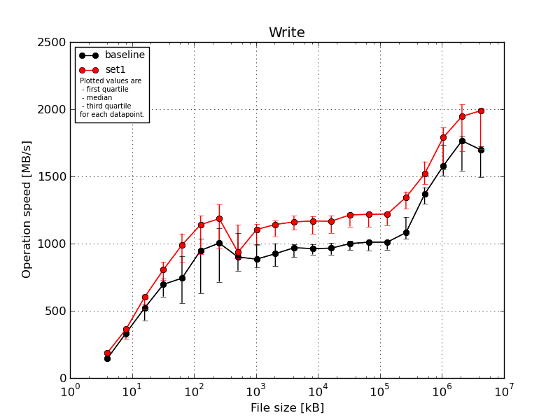
| Write |
File size [kB] |
4 |
8 |
16 |
32 |
64 |
128 |
256 |
512 |
1024 |
2048 |
4096 |
8192 |
16384 |
32768 |
65536 |
131072 |
262144 |
524288 |
1048576 |
2097152 |
4194304 |
|---|
| baseline | mean val. |
163.86 |
321.6 |
473.65 |
627.66 |
706.69 |
836.92 |
928.5 |
926.32 |
885.57 |
920.09 |
942.0 |
944.16 |
951.87 |
988.95 |
993.31 |
995.17 |
1118.34 |
1361.57 |
1587.76 |
1677.46 |
1619.05 |
| standard dev. |
28.98 |
53.45 |
126.43 |
181.94 |
228.37 |
243.75 |
220.24 |
162.99 |
133.75 |
110.91 |
82.89 |
79.1 |
73.42 |
41.69 |
40.73 |
39.79 |
94.38 |
85.3 |
154.45 |
148.76 |
139.1 |
| ci. min. 90% |
136.23 |
290.62 |
416.16 |
557.32 |
628.55 |
761.3 |
865.55 |
882.9 |
852.07 |
893.8 |
923.3 |
927.1 |
936.67 |
978.51 |
983.11 |
985.2 |
1094.7 |
1340.2 |
1549.07 |
1640.2 |
1584.21 |
| ci. max 90% |
191.48 |
352.59 |
531.15 |
698.01 |
784.83 |
912.53 |
991.45 |
969.74 |
919.07 |
946.39 |
960.71 |
961.22 |
967.07 |
999.4 |
1003.52 |
1005.14 |
1141.98 |
1382.93 |
1626.45 |
1714.72 |
1653.89 |
| geom. mean |
161.87 |
316.67 |
443.92 |
585.32 |
660.36 |
795.5 |
898.84 |
912.32 |
875.28 |
913.51 |
938.15 |
940.62 |
948.87 |
988.09 |
992.49 |
994.38 |
1114.55 |
1358.96 |
1580.25 |
1670.76 |
1612.91 |
| median |
145.24 |
333.4 |
520.93 |
696.06 |
743.03 |
949.61 |
1003.61 |
900.26 |
884.16 |
924.68 |
969.01 |
963.39 |
966.29 |
999.9 |
1010.85 |
1010.82 |
1081.81 |
1367.23 |
1578.25 |
1765.54 |
1698.16 |
| first quartile |
143.96 |
307.14 |
428.96 |
605.76 |
557.98 |
631.98 |
716.1 |
798.25 |
822.44 |
831.41 |
899.47 |
919.17 |
917.74 |
953.09 |
949.83 |
955.12 |
1034.81 |
1294.99 |
1506.4 |
1543.22 |
1495.24 |
| third quartile |
195.5 |
352.32 |
547.17 |
741.33 |
907.68 |
1038.6 |
1115.76 |
1078.08 |
997.03 |
1001.77 |
995.63 |
996.81 |
1003.83 |
1019.2 |
1021.81 |
1019.84 |
1197.08 |
1419.07 |
1734.38 |
1799.07 |
1725.29 |
| minimum |
139.08 |
190.73 |
96.55 |
165.33 |
264.84 |
371.1 |
442.47 |
595.98 |
588.61 |
693.74 |
724.88 |
721.49 |
749.8 |
911.5 |
919.7 |
916.96 |
984.69 |
1173.88 |
1288.72 |
1438.83 |
1374.14 |
| maximum |
195.5 |
373.19 |
596.84 |
820.2 |
975.22 |
1106.55 |
1195.9 |
1210.96 |
1219.7 |
1140.25 |
1076.44 |
1061.99 |
1049.94 |
1058.79 |
1054.09 |
1055.67 |
1309.81 |
1538.97 |
1814.9 |
1835.59 |
1752.88 |
| set1 | mean val. |
187.53 |
307.1 |
559.9 |
788.53 |
905.97 |
1025.99 |
1097.1 |
996.05 |
1063.87 |
1102.84 |
1157.22 |
1124.94 |
1129.85 |
1183.26 |
1185.98 |
1191.12 |
1327.15 |
1527.02 |
1736.27 |
1880.63 |
1875.84 |
| standard dev. |
4.57 |
143.03 |
69.03 |
104.14 |
262.55 |
264.3 |
250.22 |
211.12 |
125.97 |
120.49 |
212.53 |
110.01 |
107.28 |
62.59 |
57.85 |
59.23 |
101.98 |
121.3 |
164.49 |
193.51 |
187.21 |
| ci. min. 90% |
183.17 |
224.19 |
528.5 |
748.27 |
816.13 |
944.0 |
1025.58 |
939.81 |
1032.31 |
1074.27 |
1109.26 |
1101.2 |
1107.64 |
1167.58 |
1171.49 |
1176.28 |
1301.6 |
1496.64 |
1695.07 |
1832.16 |
1828.95 |
| ci. max 90% |
191.9 |
390.01 |
591.29 |
828.8 |
995.81 |
1107.98 |
1168.62 |
1052.3 |
1095.42 |
1131.41 |
1205.18 |
1148.67 |
1152.06 |
1198.94 |
1200.47 |
1205.95 |
1352.69 |
1557.41 |
1777.47 |
1929.1 |
1922.73 |
| geom. mean |
187.49 |
248.03 |
555.43 |
780.98 |
846.41 |
981.03 |
1064.45 |
975.06 |
1055.87 |
1095.92 |
1141.49 |
1119.06 |
1124.32 |
1181.59 |
1184.57 |
1189.64 |
1323.2 |
1522.3 |
1728.36 |
1870.47 |
1866.16 |
| median |
186.59 |
362.96 |
602.32 |
805.08 |
989.95 |
1141.71 |
1185.09 |
935.48 |
1104.98 |
1142.59 |
1161.07 |
1168.63 |
1166.61 |
1213.96 |
1217.52 |
1220.2 |
1343.87 |
1518.75 |
1790.03 |
1946.61 |
1988.54 |
| first quartile |
184.49 |
290.03 |
512.9 |
727.96 |
857.22 |
921.74 |
961.78 |
891.34 |
989.27 |
1054.57 |
1103.13 |
1072.35 |
1079.69 |
1127.28 |
1124.58 |
1137.57 |
1258.35 |
1441.54 |
1551.63 |
1689.65 |
1704.65 |
| third quartile |
186.59 |
373.19 |
602.32 |
864.85 |
1075.22 |
1208.6 |
1291.73 |
1140.99 |
1146.99 |
1169.3 |
1205.88 |
1204.19 |
1209.11 |
1230.49 |
1228.93 |
1236.65 |
1386.84 |
1611.37 |
1864.74 |
2035.28 |
2004.71 |
| minimum |
184.49 |
50.43 |
381.45 |
482.23 |
248.05 |
399.36 |
584.23 |
676.54 |
755.21 |
831.23 |
822.54 |
820.42 |
826.78 |
1068.88 |
1084.69 |
1084.92 |
1102.84 |
1308.45 |
1451.74 |
1566.63 |
1556.63 |
| maximum |
195.5 |
462.79 |
625.31 |
924.31 |
1135.78 |
1260.9 |
1351.6 |
1366.4 |
1351.34 |
1306.27 |
2093.28 |
1238.96 |
1240.39 |
1245.09 |
1252.2 |
1259.3 |
1543.92 |
1755.07 |
1974.82 |
2169.82 |
2046.01 |
| baseline set1 difference |
28.47 % |
8.86 % |
15.62 % |
15.66 % |
33.23 % |
20.23 % |
18.08 % |
3.91 % |
24.97 % |
23.56 % |
19.82 % |
21.3 % |
20.73 % |
21.41 % |
20.44 % |
20.71 % |
24.22 % |
11.08 % |
13.42 % |
10.26 % |
17.1 % |
| ttest p-value |
0.1088 |
0.7673 |
0.0279 |
0.0015 |
0.0062 |
0.0056 |
0.0039 |
0.1022 |
0.0 |
0.0 |
0.0 |
0.0 |
0.0 |
0.0 |
0.0 |
0.0 |
0.0 |
0.0 |
0.0 |
0.0 |
0.0 |
| ttest equality |
SAME |
SAME |
DIFF |
DIFF |
DIFF |
DIFF |
DIFF |
SAME |
DIFF |
DIFF |
DIFF |
DIFF |
DIFF |
DIFF |
DIFF |
DIFF |
DIFF |
DIFF |
DIFF |
DIFF |
DIFF |
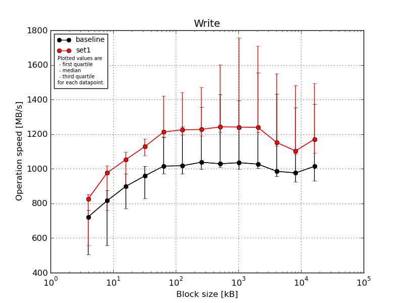
| Write |
Block size [kB] |
4 |
8 |
16 |
32 |
64 |
128 |
256 |
512 |
1024 |
2048 |
4096 |
8192 |
16384 |
|---|
| baseline | mean val. |
622.66 |
715.6 |
845.56 |
904.2 |
1113.99 |
1134.57 |
1198.75 |
1189.09 |
1220.62 |
1234.79 |
1147.76 |
1117.09 |
1143.26 |
| standard dev. |
220.06 |
220.52 |
188.72 |
194.58 |
306.87 |
312.56 |
300.9 |
320.48 |
315.82 |
322.81 |
244.97 |
215.99 |
223.19 |
| ci. min. 90% |
577.1 |
668.02 |
802.97 |
858.06 |
1058.63 |
1076.41 |
1140.87 |
1125.23 |
1155.24 |
1165.15 |
1092.49 |
1065.88 |
1087.36 |
| ci. max 90% |
668.21 |
763.17 |
888.15 |
950.33 |
1169.35 |
1192.73 |
1256.62 |
1252.96 |
1286.0 |
1304.43 |
1203.04 |
1168.3 |
1199.16 |
| geom. mean |
564.12 |
668.03 |
818.41 |
872.27 |
1071.78 |
1095.94 |
1166.09 |
1151.76 |
1184.9 |
1197.7 |
1124.15 |
1097.45 |
1122.39 |
| median |
722.26 |
815.77 |
899.13 |
958.86 |
1016.01 |
1017.76 |
1038.05 |
1029.26 |
1035.42 |
1027.3 |
985.77 |
976.31 |
1014.24 |
| first quartile |
504.88 |
557.56 |
771.79 |
828.63 |
971.47 |
970.59 |
998.77 |
1008.7 |
998.75 |
1002.95 |
955.89 |
925.22 |
930.19 |
| third quartile |
762.48 |
874.87 |
970.38 |
1015.63 |
1183.23 |
1242.26 |
1355.6 |
1428.28 |
1395.92 |
1554.03 |
1432.71 |
1353.84 |
1374.14 |
| minimum |
139.08 |
96.55 |
264.84 |
180.59 |
315.53 |
612.63 |
856.89 |
755.24 |
861.27 |
837.87 |
925.9 |
885.07 |
904.46 |
| maximum |
915.86 |
1028.21 |
1110.89 |
1187.65 |
1800.31 |
1785.83 |
1811.8 |
1835.59 |
1828.72 |
1810.79 |
1565.66 |
1457.42 |
1461.99 |
| set1 | mean val. |
698.04 |
872.03 |
996.26 |
1067.98 |
1331.88 |
1354.78 |
1362.35 |
1411.75 |
1449.84 |
1444.45 |
1327.21 |
1260.65 |
1285.8 |
| standard dev. |
248.07 |
243.34 |
171.97 |
209.75 |
323.59 |
328.36 |
339.31 |
332.78 |
340.04 |
319.29 |
242.72 |
210.96 |
212.59 |
| ci. min. 90% |
646.68 |
819.53 |
957.45 |
1018.25 |
1273.5 |
1293.67 |
1297.09 |
1345.43 |
1379.45 |
1375.57 |
1272.44 |
1210.63 |
1232.55 |
| ci. max 90% |
749.39 |
924.52 |
1035.06 |
1117.72 |
1390.25 |
1415.88 |
1427.62 |
1478.06 |
1520.23 |
1513.33 |
1381.98 |
1310.66 |
1339.05 |
| geom. mean |
623.78 |
813.03 |
979.38 |
1038.3 |
1290.96 |
1315.06 |
1323.97 |
1377.03 |
1414.74 |
1413.17 |
1306.78 |
1244.13 |
1269.04 |
| median |
826.78 |
976.36 |
1053.74 |
1128.11 |
1212.57 |
1225.53 |
1227.42 |
1242.14 |
1241.31 |
1239.46 |
1152.18 |
1103.26 |
1171.39 |
| first quartile |
556.31 |
762.01 |
891.34 |
1075.84 |
1181.41 |
1195.79 |
1191.17 |
1210.54 |
1228.2 |
1210.42 |
1132.79 |
1085.34 |
1091.81 |
| third quartile |
853.33 |
1017.8 |
1097.7 |
1172.47 |
1421.07 |
1441.8 |
1471.45 |
1601.38 |
1755.07 |
1708.33 |
1550.23 |
1481.02 |
1493.61 |
| minimum |
50.43 |
52.78 |
602.32 |
297.62 |
323.71 |
463.23 |
716.33 |
927.61 |
1073.56 |
1153.42 |
1106.18 |
1042.75 |
1060.02 |
| maximum |
992.12 |
1185.09 |
1268.22 |
1329.32 |
2030.52 |
2019.13 |
2090.31 |
2169.82 |
2158.5 |
2107.19 |
1773.13 |
1602.1 |
1595.07 |
| baseline set1 difference |
14.47 % |
19.69 % |
17.2 % |
17.65 % |
19.35 % |
20.41 % |
18.24 % |
20.68 % |
19.89 % |
20.65 % |
16.88 % |
13.0 % |
15.49 % |
| ttest p-value |
0.0692 |
0.0003 |
0.0 |
0.0001 |
0.0 |
0.0 |
0.0021 |
0.0001 |
0.0001 |
0.0005 |
0.0002 |
0.0011 |
0.0026 |
| ttest equality |
DIFF |
DIFF |
DIFF |
DIFF |
DIFF |
DIFF |
DIFF |
DIFF |
DIFF |
DIFF |
DIFF |
DIFF |
DIFF |
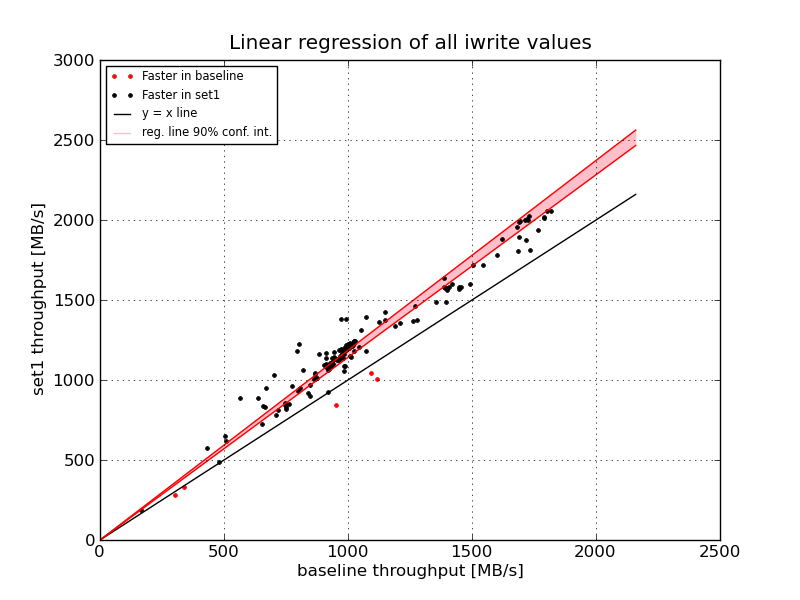
| Regression line |
|---|
| slope | 1.16375 |
| std. error | 0.01345 |
| ci. max 90% | 1.14151 |
| ci. min. 90% | 1.18599 |
Back on top
Re-write
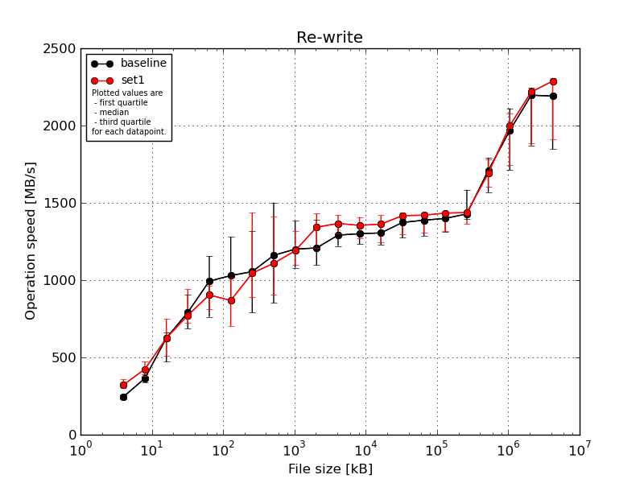
| Re-write |
File size [kB] |
4 |
8 |
16 |
32 |
64 |
128 |
256 |
512 |
1024 |
2048 |
4096 |
8192 |
16384 |
32768 |
65536 |
131072 |
262144 |
524288 |
1048576 |
2097152 |
4194304 |
|---|
| baseline | mean val. |
235.93 |
343.97 |
556.49 |
779.67 |
924.89 |
1022.33 |
1084.24 |
1177.75 |
1218.9 |
1223.35 |
1268.88 |
1277.93 |
1285.9 |
1346.94 |
1354.85 |
1389.84 |
1483.23 |
1699.06 |
1932.8 |
2082.5 |
2049.4 |
| standard dev. |
31.77 |
94.77 |
150.66 |
161.58 |
297.2 |
321.97 |
333.87 |
346.62 |
235.85 |
184.0 |
130.65 |
111.38 |
107.49 |
69.6 |
73.56 |
162.34 |
171.98 |
174.08 |
204.86 |
213.85 |
213.7 |
| ci. min. 90% |
205.64 |
289.04 |
487.97 |
717.2 |
823.2 |
922.45 |
988.81 |
1085.41 |
1159.82 |
1179.72 |
1239.39 |
1253.9 |
1263.65 |
1329.5 |
1336.42 |
1349.17 |
1440.15 |
1655.46 |
1881.49 |
2028.94 |
1995.88 |
| ci. max 90% |
266.22 |
398.91 |
625.0 |
842.15 |
1026.59 |
1122.21 |
1179.66 |
1270.09 |
1277.97 |
1266.97 |
1298.36 |
1301.96 |
1308.15 |
1364.37 |
1373.27 |
1430.5 |
1526.3 |
1742.66 |
1984.11 |
2136.07 |
2102.93 |
| geom. mean |
234.07 |
323.34 |
524.92 |
761.91 |
859.5 |
965.05 |
1034.07 |
1126.91 |
1195.73 |
1209.5 |
1261.84 |
1272.8 |
1281.15 |
1345.14 |
1352.84 |
1382.63 |
1474.02 |
1690.77 |
1922.03 |
2071.14 |
2037.82 |
| median |
245.25 |
365.06 |
625.31 |
791.55 |
993.7 |
1029.44 |
1055.11 |
1160.46 |
1200.5 |
1208.42 |
1291.17 |
1300.52 |
1305.8 |
1373.1 |
1388.01 |
1399.46 |
1428.48 |
1710.15 |
1967.33 |
2196.63 |
2191.02 |
| first quartile |
228.17 |
339.38 |
472.53 |
687.16 |
762.48 |
872.71 |
791.18 |
852.14 |
1079.95 |
1096.86 |
1221.29 |
1234.65 |
1229.53 |
1274.29 |
1286.98 |
1311.65 |
1394.52 |
1568.86 |
1712.16 |
1871.37 |
1849.14 |
| third quartile |
260.87 |
391.0 |
663.55 |
905.69 |
1155.81 |
1280.66 |
1319.76 |
1501.7 |
1386.64 |
1390.62 |
1353.35 |
1338.81 |
1362.87 |
1394.53 |
1410.56 |
1412.24 |
1584.69 |
1792.29 |
2111.76 |
2245.84 |
2202.76 |
| minimum |
184.49 |
97.87 |
134.62 |
440.13 |
295.94 |
469.87 |
567.16 |
678.29 |
719.46 |
859.5 |
948.52 |
990.48 |
983.4 |
1233.42 |
1216.89 |
1213.9 |
1232.88 |
1409.11 |
1605.72 |
1704.6 |
1683.02 |
| maximum |
260.87 |
432.26 |
706.16 |
1009.75 |
1298.99 |
1520.53 |
1644.04 |
1701.12 |
1714.9 |
1530.26 |
1511.08 |
1459.6 |
1435.12 |
1448.56 |
1437.17 |
2332.28 |
1931.86 |
2370.06 |
2444.29 |
2290.2 |
2225.35 |
| set1 | mean val. |
324.19 |
412.81 |
603.85 |
834.18 |
920.14 |
899.76 |
1107.39 |
1160.21 |
1226.62 |
1303.97 |
1363.81 |
1323.78 |
1318.03 |
1371.5 |
1380.98 |
1385.61 |
1412.41 |
1685.64 |
1939.14 |
2095.4 |
2136.54 |
| standard dev. |
34.32 |
123.77 |
185.39 |
172.8 |
224.12 |
324.2 |
331.99 |
315.41 |
197.72 |
176.92 |
251.44 |
126.84 |
124.86 |
86.1 |
81.15 |
80.78 |
84.34 |
129.7 |
188.15 |
217.3 |
245.08 |
| ci. min. 90% |
291.47 |
341.06 |
519.54 |
767.37 |
843.46 |
799.19 |
1012.5 |
1076.19 |
1177.1 |
1262.02 |
1307.07 |
1296.42 |
1292.19 |
1349.94 |
1360.66 |
1365.38 |
1391.28 |
1653.16 |
1892.02 |
2040.98 |
2075.15 |
| ci. max 90% |
356.91 |
484.56 |
688.16 |
900.99 |
996.83 |
1000.33 |
1202.28 |
1244.24 |
1276.15 |
1345.92 |
1420.55 |
1351.14 |
1343.88 |
1393.07 |
1401.31 |
1405.85 |
1433.53 |
1718.13 |
1986.27 |
2149.83 |
2197.92 |
| geom. mean |
322.72 |
387.42 |
555.67 |
818.2 |
890.36 |
844.24 |
1058.13 |
1117.88 |
1211.82 |
1290.3 |
1344.88 |
1317.17 |
1311.67 |
1368.76 |
1378.58 |
1383.24 |
1409.97 |
1680.69 |
1929.82 |
2083.76 |
2121.84 |
| median |
322.48 |
424.32 |
625.31 |
772.0 |
904.55 |
868.31 |
1045.64 |
1108.55 |
1190.28 |
1342.22 |
1367.02 |
1354.0 |
1362.51 |
1417.43 |
1420.14 |
1433.79 |
1437.09 |
1691.74 |
1998.94 |
2217.15 |
2288.5 |
| first quartile |
304.5 |
379.39 |
512.9 |
724.93 |
812.08 |
702.34 |
888.09 |
908.15 |
1097.75 |
1206.9 |
1303.31 |
1271.61 |
1242.44 |
1294.34 |
1307.94 |
1316.03 |
1363.73 |
1605.27 |
1745.42 |
1883.54 |
1909.7 |
| third quartile |
357.68 |
471.96 |
747.93 |
940.81 |
964.45 |
1016.44 |
1435.86 |
1409.56 |
1319.46 |
1429.89 |
1420.92 |
1407.7 |
1419.82 |
1437.1 |
1439.79 |
1443.34 |
1449.34 |
1779.42 |
2076.24 |
2240.96 |
2308.57 |
| minimum |
278.61 |
125.64 |
98.88 |
613.04 |
341.86 |
446.66 |
550.78 |
606.85 |
895.87 |
687.54 |
969.74 |
961.53 |
958.03 |
1176.81 |
1240.63 |
1243.45 |
1260.52 |
1427.43 |
1600.23 |
1718.92 |
1723.48 |
| maximum |
357.68 |
557.22 |
864.53 |
1161.93 |
1359.63 |
1561.28 |
1664.92 |
1688.79 |
1721.23 |
1544.63 |
2555.63 |
1472.73 |
1465.75 |
1455.74 |
1469.1 |
1463.01 |
1709.47 |
1914.86 |
2195.93 |
2331.65 |
2368.14 |
| baseline set1 difference |
31.49 % |
16.23 % |
0.0 % |
-2.47 % |
-8.97 % |
-15.65 % |
-0.9 % |
-4.47 % |
-0.85 % |
11.07 % |
5.87 % |
4.11 % |
4.34 % |
3.23 % |
2.31 % |
2.45 % |
0.6 % |
-1.08 % |
1.61 % |
0.93 % |
4.45 % |
| ttest p-value |
0.0029 |
0.1796 |
0.449 |
0.3094 |
0.9494 |
0.1471 |
0.772 |
0.8135 |
0.8666 |
0.0278 |
0.0145 |
0.0375 |
0.1183 |
0.1402 |
0.113 |
0.8762 |
0.015 |
0.6795 |
0.8787 |
0.7772 |
0.0757 |
| ttest equality |
DIFF |
SAME |
SAME |
SAME |
SAME |
SAME |
SAME |
SAME |
SAME |
DIFF |
DIFF |
DIFF |
SAME |
SAME |
SAME |
SAME |
DIFF |
SAME |
SAME |
SAME |
DIFF |
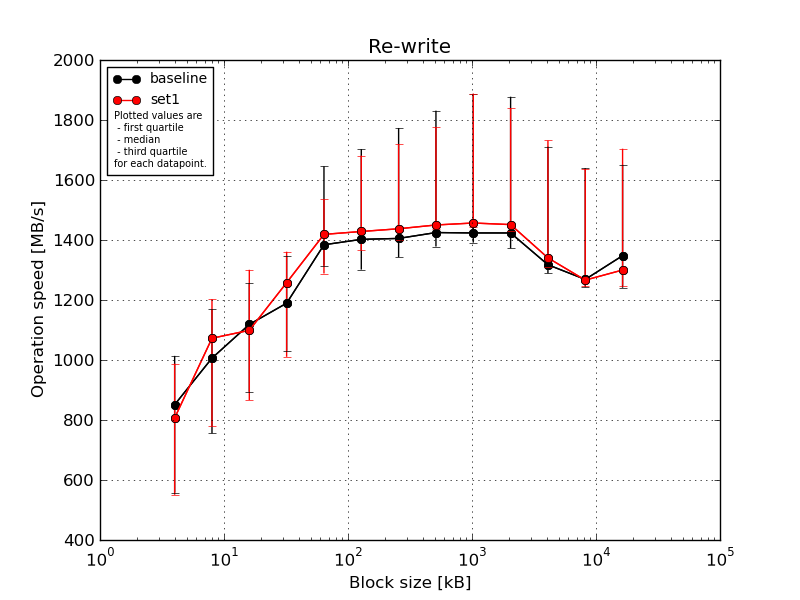
| Re-write |
Block size [kB] |
4 |
8 |
16 |
32 |
64 |
128 |
256 |
512 |
1024 |
2048 |
4096 |
8192 |
16384 |
|---|
| baseline | mean val. |
782.65 |
969.08 |
1052.15 |
1171.96 |
1462.58 |
1490.26 |
1542.26 |
1588.64 |
1603.71 |
1613.82 |
1475.77 |
1415.02 |
1440.61 |
| standard dev. |
315.1 |
294.73 |
282.1 |
237.85 |
424.61 |
422.81 |
389.2 |
361.33 |
347.57 |
338.49 |
241.8 |
206.94 |
213.55 |
| ci. min. 90% |
717.41 |
905.5 |
988.49 |
1115.57 |
1385.98 |
1411.58 |
1467.4 |
1516.64 |
1531.75 |
1540.79 |
1421.21 |
1365.95 |
1387.12 |
| ci. max 90% |
847.88 |
1032.66 |
1115.81 |
1228.36 |
1539.18 |
1568.93 |
1617.12 |
1660.64 |
1675.66 |
1686.84 |
1530.34 |
1464.09 |
1494.1 |
| geom. mean |
690.33 |
913.97 |
1005.07 |
1146.13 |
1390.2 |
1425.39 |
1494.1 |
1550.76 |
1570.15 |
1582.24 |
1457.56 |
1400.74 |
1425.49 |
| median |
851.15 |
1006.2 |
1118.6 |
1189.34 |
1384.07 |
1402.15 |
1405.26 |
1424.82 |
1423.53 |
1423.49 |
1317.48 |
1268.6 |
1347.77 |
| first quartile |
558.21 |
755.4 |
893.86 |
1030.78 |
1314.08 |
1301.35 |
1342.58 |
1378.24 |
1391.28 |
1372.39 |
1288.98 |
1242.85 |
1240.97 |
| third quartile |
1013.75 |
1168.56 |
1255.46 |
1346.95 |
1645.72 |
1702.95 |
1773.41 |
1831.11 |
1885.49 |
1877.64 |
1711.55 |
1639.19 |
1650.8 |
| minimum |
97.87 |
338.49 |
303.48 |
665.0 |
295.94 |
491.92 |
657.91 |
947.46 |
1144.17 |
1209.99 |
1218.53 |
1192.16 |
1213.9 |
| maximum |
1295.49 |
1497.1 |
1474.99 |
1660.71 |
2370.06 |
2332.28 |
2444.29 |
2285.0 |
2278.51 |
2290.2 |
1917.86 |
1772.09 |
1772.44 |
| set1 | mean val. |
754.25 |
977.8 |
1067.76 |
1191.4 |
1467.35 |
1528.94 |
1576.54 |
1623.92 |
1659.43 |
1659.33 |
1495.68 |
1415.72 |
1445.96 |
| standard dev. |
256.73 |
290.32 |
275.21 |
262.2 |
412.34 |
386.74 |
348.22 |
365.67 |
337.53 |
345.27 |
249.55 |
213.71 |
217.84 |
| ci. min. 90% |
701.11 |
915.16 |
1005.65 |
1129.23 |
1392.96 |
1456.98 |
1509.56 |
1551.05 |
1589.56 |
1584.84 |
1439.37 |
1365.05 |
1391.4 |
| ci. max 90% |
807.4 |
1040.43 |
1129.86 |
1253.56 |
1541.73 |
1600.91 |
1643.51 |
1696.79 |
1729.3 |
1733.82 |
1551.99 |
1466.39 |
1500.52 |
| geom. mean |
698.59 |
915.91 |
1025.98 |
1155.69 |
1408.48 |
1482.12 |
1541.26 |
1587.33 |
1629.38 |
1628.04 |
1476.65 |
1400.76 |
1430.31 |
| median |
806.72 |
1072.52 |
1098.9 |
1257.73 |
1418.73 |
1428.39 |
1437.44 |
1450.08 |
1456.63 |
1451.36 |
1340.34 |
1266.28 |
1299.98 |
| first quartile |
550.78 |
779.36 |
866.56 |
1010.58 |
1288.33 |
1365.76 |
1401.0 |
1437.43 |
1443.42 |
1428.48 |
1308.44 |
1247.73 |
1247.66 |
| third quartile |
987.84 |
1203.13 |
1300.75 |
1361.01 |
1535.02 |
1681.41 |
1719.03 |
1775.62 |
1888.2 |
1838.97 |
1731.7 |
1638.14 |
1704.32 |
| minimum |
125.64 |
98.88 |
446.66 |
341.86 |
491.92 |
793.89 |
862.03 |
1091.81 |
1336.02 |
1358.74 |
1255.69 |
1176.81 |
1217.0 |
| maximum |
1123.39 |
1470.85 |
1514.4 |
1650.25 |
2308.57 |
2323.0 |
2312.49 |
2555.63 |
2368.14 |
2336.58 |
1932.34 |
1772.37 |
1766.96 |
| baseline set1 difference |
-5.22 % |
6.59 % |
-1.76 % |
5.75 % |
2.5 % |
1.87 % |
2.29 % |
1.77 % |
2.32 % |
1.96 % |
1.74 % |
-0.18 % |
-3.55 % |
| ttest p-value |
0.5743 |
0.8706 |
0.7696 |
0.6988 |
0.9409 |
0.5468 |
0.5706 |
0.5667 |
0.3555 |
0.4674 |
0.6718 |
0.9868 |
0.9066 |
| ttest equality |
SAME |
SAME |
SAME |
SAME |
SAME |
SAME |
SAME |
SAME |
SAME |
SAME |
SAME |
SAME |
SAME |
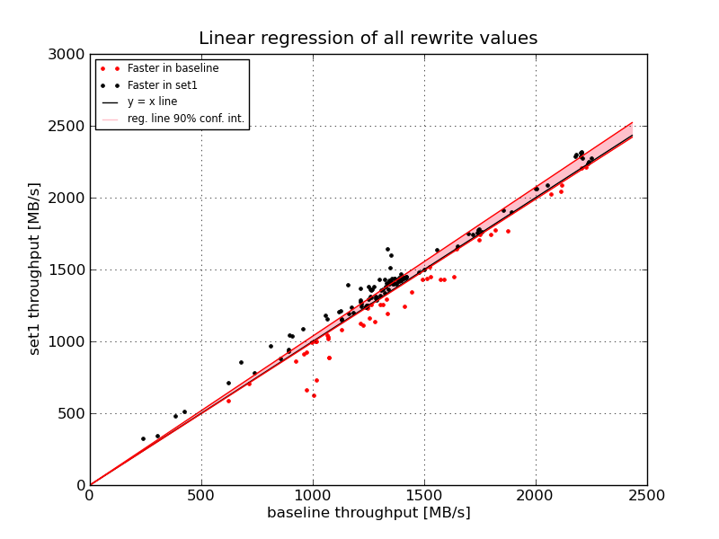
| Regression line |
|---|
| slope | 1.01568 |
| std. error | 0.01263 |
| ci. max 90% | 0.99478 |
| ci. min. 90% | 1.03657 |
Back on top
Read
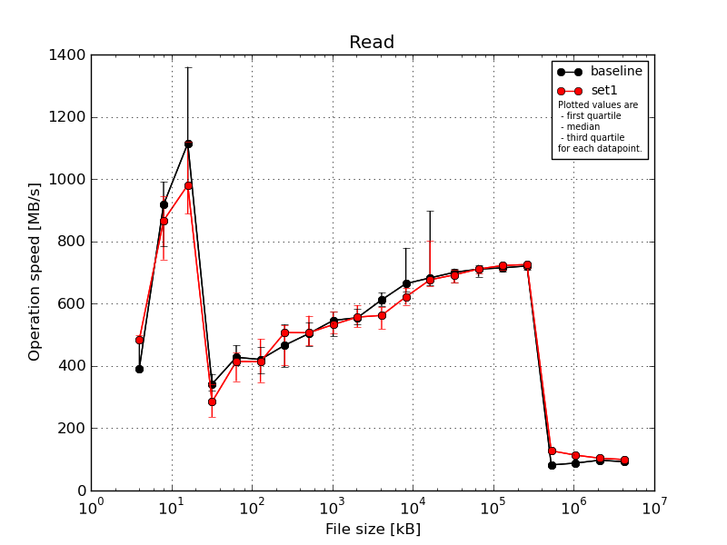
| Read |
File size [kB] |
4 |
8 |
16 |
32 |
64 |
128 |
256 |
512 |
1024 |
2048 |
4096 |
8192 |
16384 |
32768 |
65536 |
131072 |
262144 |
524288 |
1048576 |
2097152 |
4194304 |
|---|
| baseline | mean val. |
442.01 |
890.08 |
1102.37 |
321.39 |
414.66 |
411.1 |
470.64 |
497.96 |
538.93 |
555.62 |
604.74 |
682.88 |
733.68 |
711.85 |
736.84 |
749.27 |
757.72 |
80.27 |
87.42 |
94.65 |
93.47 |
| standard dev. |
72.36 |
135.07 |
334.67 |
82.77 |
64.26 |
70.47 |
86.11 |
66.05 |
62.33 |
42.34 |
55.86 |
108.62 |
153.74 |
124.94 |
119.8 |
121.7 |
120.36 |
5.66 |
2.1 |
3.62 |
1.58 |
| ci. min. 90% |
373.03 |
811.78 |
950.17 |
289.38 |
392.67 |
389.24 |
446.03 |
480.37 |
523.32 |
545.58 |
592.13 |
659.44 |
701.86 |
680.56 |
706.83 |
718.79 |
727.57 |
78.85 |
86.9 |
93.75 |
93.08 |
| ci. max 90% |
511.0 |
968.38 |
1254.57 |
353.39 |
436.65 |
432.96 |
495.25 |
515.56 |
554.54 |
565.66 |
617.34 |
706.31 |
765.51 |
743.15 |
766.85 |
779.75 |
787.87 |
81.69 |
87.95 |
95.56 |
93.87 |
| geom. mean |
437.54 |
880.74 |
987.92 |
306.66 |
408.89 |
404.69 |
462.6 |
493.48 |
535.43 |
554.02 |
601.99 |
673.61 |
717.13 |
702.51 |
728.97 |
741.46 |
750.19 |
80.07 |
87.4 |
94.59 |
93.46 |
| median |
391.91 |
918.03 |
1114.45 |
341.79 |
427.78 |
420.69 |
466.49 |
504.03 |
546.15 |
554.94 |
612.09 |
664.36 |
682.68 |
700.63 |
710.87 |
714.95 |
721.16 |
82.11 |
88.02 |
97.24 |
92.57 |
| first quartile |
391.91 |
783.82 |
973.76 |
320.64 |
403.42 |
375.86 |
397.14 |
463.53 |
494.8 |
534.67 |
592.43 |
638.45 |
657.95 |
668.5 |
686.33 |
701.54 |
708.89 |
75.04 |
87.08 |
90.63 |
92.41 |
| third quartile |
484.65 |
991.46 |
1360.34 |
374.74 |
466.61 |
459.58 |
532.73 |
540.29 |
573.71 |
583.3 |
635.88 |
779.12 |
897.71 |
712.28 |
724.38 |
724.66 |
727.92 |
83.51 |
88.73 |
97.73 |
95.53 |
| minimum |
391.91 |
715.37 |
106.42 |
132.96 |
248.05 |
265.89 |
264.87 |
354.62 |
429.0 |
459.13 |
451.11 |
437.25 |
441.49 |
540.64 |
617.42 |
661.51 |
685.0 |
63.77 |
81.54 |
88.67 |
92.14 |
| maximum |
549.69 |
1099.39 |
1430.74 |
390.32 |
481.17 |
508.13 |
628.34 |
652.75 |
703.17 |
663.56 |
722.54 |
863.38 |
969.99 |
1047.87 |
1072.76 |
1109.28 |
1095.26 |
93.13 |
90.5 |
99.32 |
96.37 |
| set1 | mean val. |
490.36 |
834.74 |
942.96 |
282.59 |
391.63 |
418.63 |
490.14 |
545.87 |
567.66 |
589.94 |
558.0 |
615.74 |
693.21 |
702.27 |
731.02 |
752.04 |
760.56 |
131.47 |
112.93 |
103.86 |
99.44 |
| standard dev. |
41.58 |
140.43 |
337.46 |
96.8 |
87.84 |
109.1 |
99.38 |
136.76 |
121.54 |
135.64 |
54.33 |
70.69 |
111.67 |
114.36 |
108.37 |
111.65 |
115.68 |
22.72 |
3.65 |
1.16 |
0.39 |
| ci. min. 90% |
450.72 |
753.33 |
789.49 |
245.17 |
361.57 |
384.78 |
461.74 |
509.44 |
537.22 |
557.78 |
545.74 |
600.49 |
670.09 |
673.62 |
703.87 |
724.07 |
731.58 |
125.78 |
112.01 |
103.57 |
99.35 |
| ci. max 90% |
530.0 |
916.14 |
1096.43 |
320.02 |
421.69 |
452.47 |
518.55 |
582.3 |
598.11 |
622.1 |
570.26 |
630.99 |
716.32 |
730.91 |
758.16 |
780.0 |
789.53 |
137.17 |
113.84 |
104.15 |
99.54 |
| geom. mean |
488.95 |
823.25 |
833.75 |
264.82 |
380.42 |
403.94 |
480.85 |
533.2 |
557.32 |
577.65 |
555.38 |
611.48 |
683.58 |
694.16 |
724.4 |
745.38 |
753.58 |
129.8 |
112.87 |
103.85 |
99.44 |
| median |
484.65 |
866.75 |
980.99 |
284.5 |
414.26 |
413.87 |
507.1 |
506.58 |
532.76 |
556.8 |
562.28 |
621.8 |
676.62 |
692.43 |
711.26 |
722.5 |
725.69 |
127.55 |
113.6 |
103.75 |
99.44 |
| first quartile |
484.65 |
741.75 |
888.6 |
236.25 |
351.02 |
347.74 |
401.94 |
465.23 |
504.56 |
524.14 |
518.88 |
596.38 |
656.73 |
666.72 |
697.13 |
707.9 |
713.63 |
124.01 |
111.82 |
103.15 |
99.23 |
| third quartile |
499.42 |
943.66 |
1119.63 |
340.71 |
442.96 |
486.79 |
529.65 |
561.21 |
573.4 |
595.09 |
588.02 |
651.03 |
801.65 |
708.61 |
717.47 |
730.31 |
730.93 |
131.01 |
114.41 |
104.44 |
99.67 |
| minimum |
433.37 |
597.89 |
126.08 |
124.03 |
199.08 |
188.54 |
349.2 |
415.62 |
429.58 |
421.94 |
439.66 |
439.53 |
439.79 |
537.8 |
618.64 |
672.21 |
693.8 |
103.25 |
102.58 |
100.33 |
98.57 |
| maximum |
549.69 |
998.85 |
1315.83 |
452.28 |
520.33 |
648.22 |
764.93 |
1000.17 |
929.42 |
1008.03 |
685.15 |
769.9 |
890.72 |
1008.35 |
1028.92 |
1067.19 |
1090.6 |
197.78 |
119.29 |
106.43 |
100.21 |
| baseline set1 difference |
23.66 % |
-5.59 % |
-11.97 % |
-16.76 % |
-3.16 % |
-1.62 % |
8.7 % |
0.51 % |
-2.45 % |
0.34 % |
-8.14 % |
-6.41 % |
-0.89 % |
-1.17 % |
0.05 % |
1.06 % |
0.63 % |
55.35 % |
29.06 % |
6.7 % |
7.42 % |
| ttest p-value |
0.2313 |
0.3809 |
0.2045 |
0.1811 |
0.2954 |
0.752 |
0.3833 |
0.0495 |
0.1617 |
0.0909 |
0.0 |
0.0001 |
0.0883 |
0.7051 |
0.8095 |
0.9108 |
0.9095 |
0.0 |
0.0 |
0.0 |
0.0 |
| ttest equality |
SAME |
SAME |
SAME |
SAME |
SAME |
SAME |
SAME |
DIFF |
SAME |
DIFF |
DIFF |
DIFF |
DIFF |
SAME |
SAME |
SAME |
SAME |
DIFF |
DIFF |
DIFF |
DIFF |
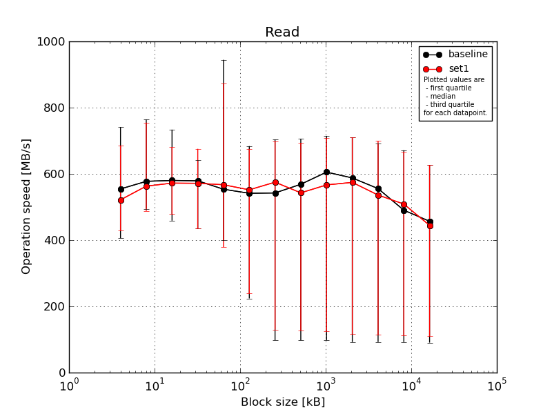
| Read |
Block size [kB] |
4 |
8 |
16 |
32 |
64 |
128 |
256 |
512 |
1024 |
2048 |
4096 |
8192 |
16384 |
|---|
| baseline | mean val. |
608.85 |
643.08 |
604.87 |
579.0 |
589.64 |
468.7 |
469.85 |
476.9 |
473.12 |
464.17 |
437.67 |
402.56 |
371.56 |
| standard dev. |
252.45 |
246.86 |
250.57 |
186.65 |
360.19 |
242.75 |
252.36 |
261.67 |
269.8 |
276.47 |
275.45 |
269.41 |
264.25 |
| ci. min. 90% |
556.59 |
589.83 |
548.33 |
534.74 |
524.66 |
423.53 |
421.31 |
424.76 |
417.26 |
404.53 |
375.51 |
338.68 |
305.37 |
| ci. max 90% |
661.11 |
696.34 |
661.42 |
623.25 |
654.61 |
513.87 |
518.39 |
529.04 |
528.97 |
523.82 |
499.83 |
466.44 |
437.75 |
| geom. mean |
565.56 |
600.22 |
546.68 |
549.0 |
429.7 |
363.77 |
358.26 |
357.42 |
347.55 |
332.87 |
308.35 |
279.32 |
254.0 |
| median |
554.48 |
577.47 |
580.21 |
579.04 |
553.66 |
541.43 |
542.43 |
568.63 |
605.33 |
587.72 |
555.63 |
490.34 |
456.91 |
| first quartile |
405.92 |
494.36 |
458.71 |
434.53 |
400.34 |
223.88 |
97.58 |
97.52 |
97.25 |
92.37 |
92.23 |
92.26 |
90.5 |
| third quartile |
741.42 |
764.01 |
733.63 |
641.19 |
944.51 |
683.88 |
703.39 |
705.91 |
714.67 |
709.49 |
691.02 |
671.34 |
626.94 |
| minimum |
264.87 |
154.06 |
106.42 |
248.05 |
70.56 |
70.92 |
72.46 |
73.44 |
75.04 |
74.17 |
73.55 |
63.77 |
73.46 |
| maximum |
1430.74 |
1430.74 |
1289.93 |
969.99 |
1109.28 |
725.76 |
729.17 |
731.75 |
733.01 |
734.15 |
722.43 |
712.68 |
698.17 |
| set1 | mean val. |
569.23 |
599.14 |
598.05 |
571.67 |
582.93 |
473.5 |
479.11 |
480.83 |
473.78 |
465.04 |
443.22 |
414.3 |
381.04 |
| standard dev. |
239.54 |
233.73 |
206.29 |
199.24 |
334.24 |
232.04 |
243.31 |
249.79 |
257.87 |
265.28 |
264.93 |
260.52 |
254.23 |
| ci. min. 90% |
519.64 |
548.71 |
551.5 |
524.43 |
522.63 |
430.32 |
432.31 |
431.05 |
420.4 |
407.81 |
383.44 |
352.52 |
317.36 |
| ci. max 90% |
618.81 |
649.56 |
644.6 |
618.91 |
643.22 |
516.68 |
525.91 |
530.6 |
527.17 |
522.27 |
503.0 |
476.07 |
444.72 |
| geom. mean |
522.29 |
549.33 |
560.91 |
532.36 |
453.24 |
383.91 |
382.21 |
378.44 |
366.64 |
353.28 |
332.65 |
307.14 |
279.76 |
| median |
521.63 |
563.03 |
572.11 |
571.54 |
567.2 |
551.84 |
574.96 |
542.79 |
566.72 |
574.3 |
536.12 |
508.9 |
444.57 |
| first quartile |
428.48 |
488.04 |
478.53 |
435.27 |
378.93 |
239.18 |
129.91 |
127.82 |
124.91 |
117.03 |
114.19 |
112.39 |
110.39 |
| third quartile |
684.98 |
754.87 |
680.4 |
675.68 |
872.58 |
674.55 |
698.51 |
693.71 |
707.95 |
710.38 |
699.69 |
666.09 |
627.03 |
| minimum |
126.08 |
127.03 |
130.83 |
124.03 |
99.57 |
99.23 |
99.37 |
99.15 |
98.93 |
98.57 |
98.69 |
99.32 |
98.66 |
| maximum |
1315.83 |
1315.83 |
1195.79 |
1000.17 |
1090.6 |
716.03 |
730.93 |
732.71 |
733.39 |
734.46 |
726.0 |
715.25 |
702.56 |
| baseline set1 difference |
-5.92 % |
-2.5 % |
-1.4 % |
-1.3 % |
2.45 % |
1.92 % |
6.0 % |
-4.55 % |
-6.38 % |
-2.28 % |
-3.51 % |
3.78 % |
-2.7 % |
| ttest p-value |
0.3604 |
0.3187 |
0.8764 |
0.8499 |
0.9 |
0.8984 |
0.8193 |
0.9278 |
0.9885 |
0.9861 |
0.9144 |
0.8252 |
0.8627 |
| ttest equality |
SAME |
SAME |
SAME |
SAME |
SAME |
SAME |
SAME |
SAME |
SAME |
SAME |
SAME |
SAME |
SAME |
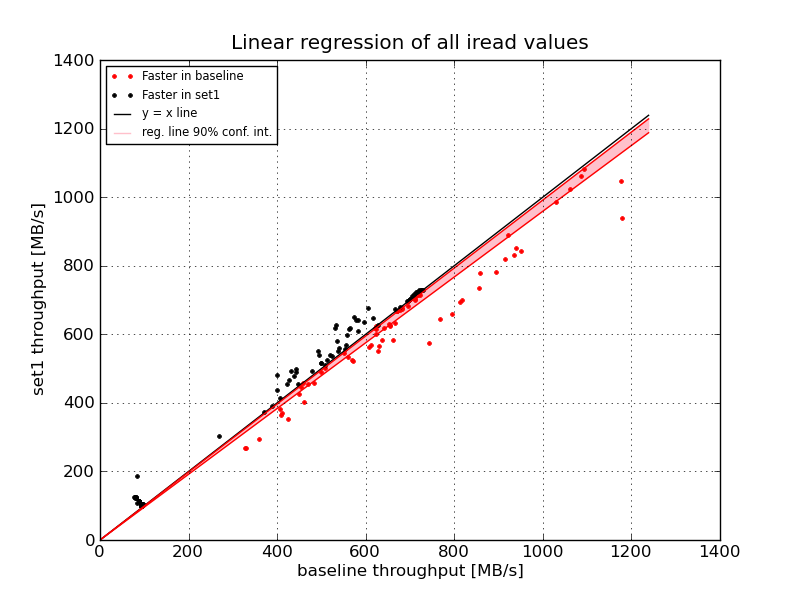
| Regression line |
|---|
| slope | 0.97525 |
| std. error | 0.00985 |
| ci. max 90% | 0.95895 |
| ci. min. 90% | 0.99154 |
Back on top
Re-read
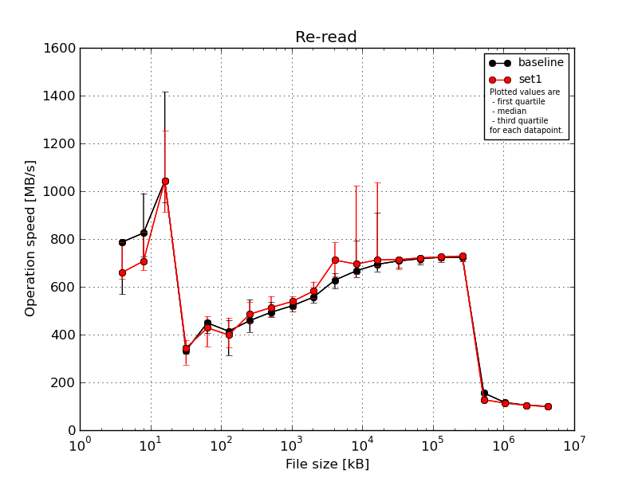
| Re-read |
File size [kB] |
4 |
8 |
16 |
32 |
64 |
128 |
256 |
512 |
1024 |
2048 |
4096 |
8192 |
16384 |
32768 |
65536 |
131072 |
262144 |
524288 |
1048576 |
2097152 |
4194304 |
|---|
| baseline | mean val. |
696.18 |
872.91 |
1124.36 |
328.74 |
419.88 |
389.55 |
471.34 |
505.41 |
529.43 |
560.23 |
614.44 |
690.84 |
742.42 |
717.67 |
744.25 |
756.71 |
756.42 |
154.42 |
115.39 |
104.85 |
99.9 |
| standard dev. |
125.2 |
156.95 |
229.42 |
50.18 |
88.04 |
83.48 |
82.89 |
54.77 |
48.4 |
42.09 |
58.54 |
113.45 |
155.74 |
123.39 |
122.08 |
120.62 |
120.99 |
24.63 |
2.47 |
0.78 |
0.31 |
| ci. min. 90% |
576.82 |
781.93 |
1020.03 |
309.34 |
389.76 |
363.65 |
447.65 |
490.82 |
517.31 |
550.25 |
601.23 |
666.36 |
710.18 |
686.76 |
713.67 |
726.5 |
726.12 |
148.25 |
114.77 |
104.66 |
99.82 |
| ci. max 90% |
815.54 |
963.89 |
1228.69 |
348.15 |
450.01 |
415.44 |
495.03 |
520.0 |
541.55 |
570.21 |
627.65 |
715.31 |
774.66 |
748.57 |
774.83 |
786.92 |
786.73 |
160.58 |
116.01 |
105.05 |
99.98 |
| geom. mean |
686.68 |
860.58 |
1103.42 |
323.3 |
406.47 |
379.97 |
464.21 |
502.64 |
527.39 |
558.67 |
611.44 |
680.96 |
725.68 |
708.6 |
736.16 |
749.03 |
748.74 |
152.6 |
115.36 |
104.85 |
99.9 |
| median |
787.48 |
825.28 |
1043.47 |
334.12 |
449.03 |
414.32 |
458.73 |
493.59 |
520.85 |
557.26 |
628.13 |
666.78 |
694.18 |
708.36 |
717.58 |
723.45 |
722.43 |
155.99 |
115.63 |
104.76 |
99.86 |
| first quartile |
568.78 |
727.9 |
953.28 |
321.22 |
405.92 |
313.29 |
410.83 |
473.11 |
497.5 |
533.11 |
593.85 |
640.58 |
664.31 |
678.35 |
693.88 |
703.37 |
708.09 |
141.49 |
114.34 |
104.33 |
99.74 |
| third quartile |
787.48 |
991.46 |
1415.45 |
356.37 |
459.25 |
458.38 |
546.9 |
535.42 |
544.38 |
590.28 |
656.18 |
793.43 |
908.94 |
722.15 |
730.99 |
734.83 |
728.73 |
160.24 |
116.76 |
105.4 |
100.0 |
| minimum |
549.69 |
715.37 |
821.19 |
139.62 |
130.69 |
221.24 |
342.47 |
403.24 |
451.06 |
478.34 |
448.23 |
434.52 |
457.53 |
547.63 |
618.84 |
658.2 |
617.34 |
115.01 |
107.45 |
103.52 |
99.23 |
| maximum |
787.48 |
1099.39 |
1430.74 |
381.24 |
529.79 |
502.28 |
599.59 |
648.51 |
682.13 |
649.38 |
713.02 |
866.08 |
971.88 |
1043.37 |
1084.96 |
1102.5 |
1095.54 |
221.65 |
119.71 |
107.19 |
100.73 |
| set1 | mean val. |
671.0 |
699.02 |
1011.76 |
327.91 |
407.92 |
416.19 |
510.13 |
536.07 |
569.27 |
612.21 |
697.5 |
794.09 |
801.26 |
725.88 |
744.05 |
758.28 |
763.59 |
131.7 |
113.44 |
104.1 |
99.55 |
| standard dev. |
125.77 |
258.04 |
343.34 |
63.28 |
86.07 |
103.66 |
102.4 |
108.33 |
127.83 |
129.69 |
116.03 |
211.27 |
212.81 |
144.54 |
129.49 |
123.33 |
119.84 |
23.69 |
3.33 |
1.07 |
0.3 |
| ci. min. 90% |
551.09 |
549.44 |
855.62 |
303.44 |
378.47 |
384.03 |
480.87 |
507.22 |
537.25 |
581.46 |
671.31 |
748.52 |
757.2 |
689.67 |
711.62 |
727.39 |
733.57 |
125.76 |
112.6 |
103.83 |
99.47 |
| ci. max 90% |
790.91 |
848.6 |
1167.9 |
352.37 |
437.37 |
448.34 |
539.4 |
564.93 |
601.28 |
642.96 |
723.68 |
839.67 |
845.31 |
762.08 |
776.49 |
789.17 |
793.6 |
137.63 |
114.27 |
104.37 |
99.62 |
| geom. mean |
660.84 |
581.56 |
926.48 |
321.87 |
398.04 |
404.4 |
501.45 |
527.3 |
558.19 |
601.34 |
687.11 |
765.8 |
772.94 |
713.97 |
735.05 |
750.36 |
756.16 |
129.89 |
113.39 |
104.1 |
99.55 |
| median |
660.49 |
707.73 |
1043.47 |
343.98 |
428.48 |
398.77 |
485.27 |
513.42 |
538.78 |
582.51 |
711.75 |
695.05 |
712.95 |
713.59 |
721.11 |
725.34 |
728.75 |
127.73 |
113.49 |
103.82 |
99.5 |
| first quartile |
634.9 |
668.46 |
912.68 |
274.8 |
349.15 |
347.31 |
451.63 |
475.3 |
507.67 |
554.06 |
643.66 |
652.52 |
685.46 |
673.61 |
700.82 |
710.63 |
715.65 |
124.18 |
112.22 |
103.39 |
99.32 |
| third quartile |
787.48 |
828.9 |
1253.97 |
376.85 |
476.79 |
470.3 |
535.89 |
560.61 |
560.53 |
621.49 |
785.09 |
1022.52 |
1035.54 |
721.36 |
725.36 |
732.53 |
733.03 |
130.72 |
114.83 |
104.76 |
99.78 |
| minimum |
484.65 |
51.06 |
285.18 |
231.66 |
228.79 |
259.83 |
359.25 |
395.26 |
431.43 |
451.68 |
432.38 |
433.53 |
452.24 |
539.08 |
610.59 |
666.25 |
692.07 |
100.97 |
103.22 |
102.02 |
98.91 |
| maximum |
787.48 |
969.3 |
1430.74 |
452.28 |
525.54 |
668.05 |
816.77 |
976.42 |
967.14 |
1007.54 |
884.98 |
1093.48 |
1107.96 |
1102.5 |
1097.6 |
1104.34 |
1105.64 |
202.38 |
119.82 |
106.16 |
100.3 |
| baseline set1 difference |
-16.13 % |
-14.24 % |
0.0 % |
2.95 % |
-4.58 % |
-3.75 % |
5.78 % |
4.02 % |
3.44 % |
4.53 % |
13.31 % |
4.24 % |
2.7 % |
0.74 % |
0.49 % |
0.26 % |
0.87 % |
-18.11 % |
-1.85 % |
-0.9 % |
-0.36 % |
| ttest p-value |
0.7591 |
0.0853 |
0.3 |
0.9632 |
0.6294 |
0.2775 |
0.086 |
0.1142 |
0.0537 |
0.0083 |
0.0 |
0.0011 |
0.0744 |
0.7726 |
0.9941 |
0.9515 |
0.7785 |
0.0 |
0.0022 |
0.0003 |
0.0 |
| ttest equality |
SAME |
DIFF |
SAME |
SAME |
SAME |
SAME |
DIFF |
SAME |
DIFF |
DIFF |
DIFF |
DIFF |
DIFF |
SAME |
SAME |
SAME |
SAME |
DIFF |
DIFF |
DIFF |
DIFF |
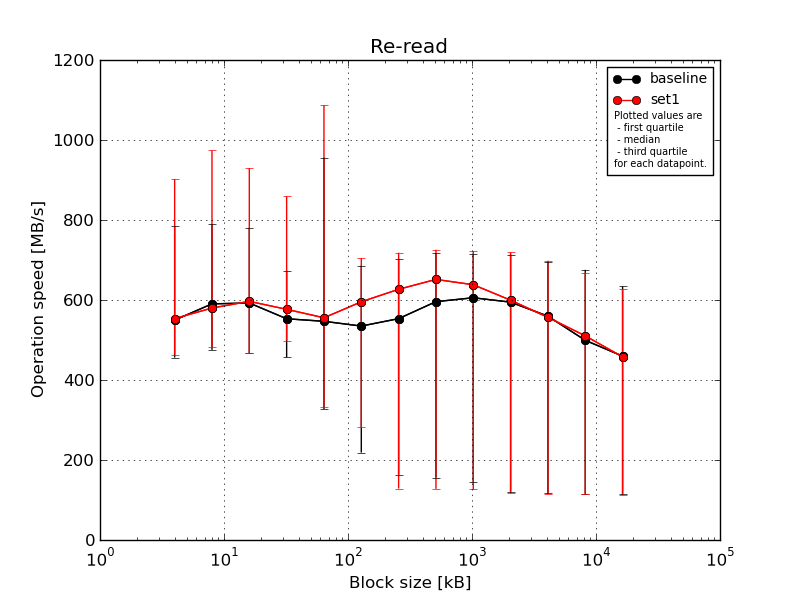
| Re-read |
Block size [kB] |
4 |
8 |
16 |
32 |
64 |
128 |
256 |
512 |
1024 |
2048 |
4096 |
8192 |
16384 |
|---|
| baseline | mean val. |
638.45 |
639.28 |
606.5 |
577.37 |
597.37 |
475.81 |
484.34 |
491.82 |
488.68 |
476.92 |
451.2 |
416.45 |
387.15 |
| standard dev. |
282.04 |
227.04 |
208.29 |
196.68 |
353.46 |
234.61 |
242.77 |
252.48 |
260.8 |
265.97 |
264.35 |
257.88 |
253.08 |
| ci. min. 90% |
580.06 |
590.3 |
559.5 |
530.74 |
533.6 |
432.16 |
437.65 |
441.51 |
434.69 |
419.54 |
391.54 |
355.31 |
323.76 |
| ci. max 90% |
696.84 |
688.26 |
653.51 |
624.01 |
661.13 |
519.47 |
531.03 |
542.14 |
542.67 |
534.3 |
510.85 |
477.59 |
450.54 |
| geom. mean |
585.21 |
603.34 |
567.12 |
543.66 |
460.62 |
387.1 |
389.82 |
389.64 |
380.97 |
365.94 |
342.18 |
312.63 |
287.63 |
| median |
549.69 |
590.33 |
592.48 |
553.1 |
546.75 |
534.84 |
553.38 |
595.85 |
605.61 |
594.65 |
559.51 |
499.26 |
459.64 |
| first quartile |
456.06 |
475.34 |
466.64 |
456.73 |
327.31 |
218.61 |
163.47 |
156.2 |
145.12 |
120.93 |
117.86 |
115.17 |
115.58 |
| third quartile |
783.82 |
789.66 |
780.64 |
672.71 |
956.08 |
686.02 |
702.9 |
716.37 |
716.08 |
713.42 |
694.06 |
675.45 |
634.19 |
| minimum |
130.69 |
322.2 |
139.62 |
221.24 |
99.93 |
99.75 |
99.72 |
99.49 |
99.84 |
99.67 |
99.66 |
99.32 |
99.23 |
| maximum |
1430.74 |
1400.17 |
980.99 |
970.99 |
1102.5 |
728.97 |
739.51 |
735.57 |
803.51 |
736.6 |
729.51 |
712.18 |
703.02 |
| set1 | mean val. |
647.72 |
665.61 |
681.82 |
669.91 |
647.2 |
490.44 |
504.16 |
499.46 |
495.58 |
474.09 |
445.57 |
415.38 |
382.54 |
| standard dev. |
279.19 |
276.05 |
276.11 |
266.05 |
389.17 |
242.68 |
254.11 |
263.07 |
269.24 |
269.85 |
266.0 |
260.87 |
254.63 |
| ci. min. 90% |
589.93 |
606.05 |
619.51 |
606.83 |
577.0 |
445.29 |
455.28 |
447.04 |
439.84 |
415.88 |
385.54 |
353.52 |
318.76 |
| ci. max 90% |
705.52 |
725.16 |
744.13 |
732.99 |
717.41 |
535.6 |
553.04 |
551.89 |
551.32 |
532.31 |
505.6 |
477.23 |
446.32 |
| geom. mean |
581.04 |
608.38 |
624.15 |
617.73 |
486.64 |
394.67 |
399.15 |
389.27 |
380.49 |
358.84 |
334.1 |
308.02 |
280.81 |
| median |
553.56 |
579.96 |
596.64 |
576.7 |
555.54 |
595.5 |
626.77 |
651.44 |
638.16 |
599.53 |
556.51 |
510.36 |
457.73 |
| first quartile |
463.37 |
481.35 |
466.87 |
498.61 |
332.75 |
281.36 |
128.6 |
127.9 |
126.42 |
116.67 |
114.41 |
114.12 |
111.81 |
| third quartile |
902.43 |
973.77 |
929.88 |
859.08 |
1087.31 |
704.9 |
718.11 |
725.56 |
721.6 |
719.37 |
698.31 |
668.33 |
627.13 |
| minimum |
51.06 |
228.79 |
233.3 |
231.66 |
99.65 |
99.12 |
99.25 |
99.11 |
99.3 |
98.91 |
99.1 |
99.38 |
99.39 |
| maximum |
1430.74 |
1315.83 |
1195.79 |
1107.96 |
1105.64 |
724.9 |
782.45 |
814.36 |
772.65 |
739.82 |
727.04 |
714.46 |
701.77 |
| baseline set1 difference |
0.7 % |
-1.76 % |
0.7 % |
4.27 % |
1.61 % |
11.34 % |
13.26 % |
9.33 % |
5.37 % |
0.82 % |
-0.54 % |
2.22 % |
-0.41 % |
| ttest p-value |
0.8509 |
0.5693 |
0.1092 |
0.0508 |
0.3834 |
0.6988 |
0.626 |
0.8611 |
0.8823 |
0.954 |
0.9116 |
0.9835 |
0.9315 |
| ttest equality |
SAME |
SAME |
SAME |
DIFF |
SAME |
SAME |
SAME |
SAME |
SAME |
SAME |
SAME |
SAME |
SAME |
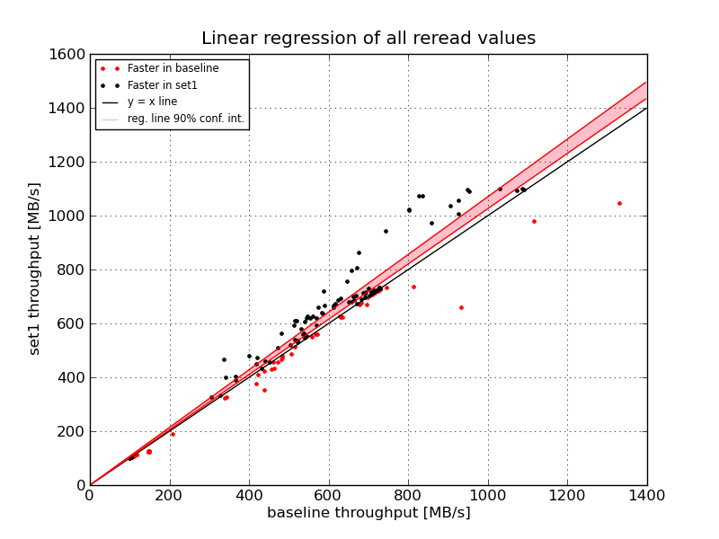
| Regression line |
|---|
| slope | 1.04802 |
| std. error | 0.01335 |
| ci. max 90% | 1.02594 |
| ci. min. 90% | 1.07011 |
Back on top
Random
read
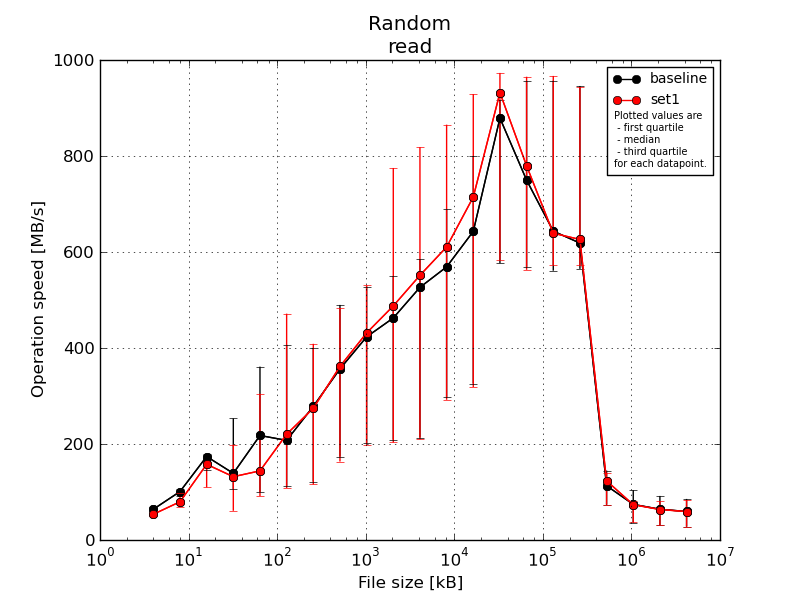
| Random
read |
File size [kB] |
4 |
8 |
16 |
32 |
64 |
128 |
256 |
512 |
1024 |
2048 |
4096 |
8192 |
16384 |
32768 |
65536 |
131072 |
262144 |
524288 |
1048576 |
2097152 |
4194304 |
|---|
| baseline | mean val. |
63.1 |
93.34 |
152.33 |
163.02 |
220.84 |
256.72 |
272.34 |
333.02 |
367.0 |
390.86 |
427.58 |
488.68 |
553.69 |
759.37 |
749.99 |
731.61 |
711.74 |
105.99 |
69.15 |
60.17 |
56.13 |
| standard dev. |
4.63 |
21.33 |
44.13 |
85.47 |
133.52 |
159.25 |
150.08 |
176.22 |
184.07 |
187.23 |
201.31 |
238.22 |
275.21 |
181.5 |
201.07 |
202.36 |
203.43 |
43.75 |
37.13 |
33.27 |
31.55 |
| ci. min. 90% |
58.68 |
80.97 |
132.26 |
129.98 |
175.15 |
207.32 |
229.44 |
286.08 |
320.9 |
346.47 |
382.16 |
437.29 |
496.71 |
713.91 |
699.62 |
680.92 |
660.78 |
95.03 |
59.85 |
51.84 |
48.23 |
| ci. max 90% |
67.51 |
105.7 |
172.4 |
196.07 |
266.53 |
306.12 |
315.24 |
379.97 |
413.11 |
435.26 |
473.01 |
540.08 |
610.66 |
804.83 |
800.35 |
782.3 |
762.69 |
116.95 |
78.45 |
68.5 |
64.04 |
| geom. mean |
62.96 |
89.99 |
141.9 |
139.54 |
176.66 |
206.47 |
227.27 |
274.36 |
305.05 |
327.11 |
358.2 |
401.79 |
450.01 |
735.59 |
722.31 |
703.95 |
684.02 |
93.76 |
55.96 |
48.0 |
44.4 |
| median |
64.05 |
100.89 |
173.92 |
138.88 |
217.76 |
207.51 |
278.45 |
356.51 |
423.21 |
462.54 |
526.38 |
568.97 |
642.98 |
879.03 |
749.69 |
643.48 |
618.55 |
113.02 |
74.24 |
64.07 |
59.43 |
| first quartile |
60.28 |
91.52 |
146.85 |
105.77 |
100.02 |
112.17 |
121.66 |
173.57 |
201.41 |
208.95 |
213.45 |
297.24 |
325.99 |
576.59 |
568.84 |
561.06 |
564.79 |
73.32 |
36.1 |
30.4 |
27.67 |
| third quartile |
66.12 |
105.48 |
178.43 |
253.41 |
361.18 |
406.49 |
400.1 |
489.75 |
528.0 |
549.83 |
584.71 |
688.83 |
799.8 |
916.07 |
956.16 |
956.78 |
945.87 |
144.62 |
103.88 |
91.8 |
85.55 |
| minimum |
56.73 |
37.54 |
35.99 |
50.47 |
52.61 |
59.3 |
78.55 |
76.78 |
80.22 |
80.73 |
77.93 |
80.23 |
78.85 |
446.32 |
445.71 |
445.73 |
444.04 |
21.97 |
13.17 |
10.74 |
9.69 |
| maximum |
68.32 |
110.03 |
190.62 |
284.44 |
419.56 |
557.87 |
592.48 |
585.5 |
645.99 |
625.56 |
743.22 |
815.48 |
869.79 |
943.76 |
984.0 |
1011.31 |
1020.38 |
162.72 |
117.24 |
102.71 |
96.51 |
| set1 | mean val. |
51.65 |
77.89 |
141.73 |
141.22 |
190.31 |
276.32 |
287.7 |
332.04 |
381.68 |
478.88 |
538.62 |
572.82 |
613.27 |
796.91 |
756.31 |
729.54 |
715.23 |
104.41 |
60.8 |
56.28 |
54.79 |
| standard dev. |
5.94 |
24.78 |
30.51 |
77.61 |
111.53 |
176.97 |
166.18 |
176.19 |
207.26 |
279.45 |
309.86 |
317.89 |
332.04 |
212.81 |
210.85 |
202.93 |
194.86 |
40.38 |
28.94 |
29.0 |
30.02 |
| ci. min. 90% |
45.98 |
63.52 |
127.86 |
111.22 |
152.15 |
221.42 |
240.21 |
285.11 |
329.77 |
412.62 |
468.7 |
504.24 |
544.53 |
743.61 |
703.5 |
678.71 |
666.42 |
94.3 |
53.55 |
49.02 |
47.27 |
| ci. max 90% |
57.31 |
92.25 |
155.61 |
171.23 |
228.47 |
331.22 |
335.2 |
378.98 |
433.59 |
545.14 |
608.55 |
641.4 |
682.01 |
850.22 |
809.12 |
780.37 |
764.04 |
114.53 |
68.05 |
63.54 |
62.31 |
| geom. mean |
51.35 |
73.62 |
138.37 |
120.3 |
157.97 |
215.71 |
234.68 |
273.88 |
310.43 |
373.28 |
416.74 |
446.8 |
478.95 |
765.4 |
725.72 |
701.72 |
689.88 |
93.49 |
51.6 |
46.12 |
43.77 |
| median |
53.58 |
79.63 |
157.61 |
131.88 |
144.05 |
220.42 |
274.44 |
361.63 |
431.39 |
487.61 |
551.41 |
610.47 |
714.54 |
931.96 |
779.48 |
639.13 |
626.13 |
123.23 |
73.52 |
63.54 |
59.16 |
| first quartile |
50.13 |
68.42 |
109.6 |
60.84 |
91.25 |
108.32 |
115.77 |
163.49 |
198.29 |
203.24 |
210.09 |
292.15 |
318.74 |
583.23 |
562.9 |
573.01 |
572.28 |
73.54 |
36.71 |
30.66 |
27.71 |
| third quartile |
55.76 |
98.83 |
163.51 |
198.74 |
304.89 |
471.56 |
408.76 |
483.41 |
530.27 |
775.07 |
818.59 |
865.29 |
928.99 |
973.09 |
965.17 |
966.81 |
943.26 |
139.0 |
80.21 |
80.51 |
82.84 |
| minimum |
42.03 |
34.87 |
94.19 |
47.07 |
66.35 |
70.91 |
74.25 |
77.34 |
81.53 |
79.54 |
78.82 |
79.29 |
77.7 |
450.7 |
441.94 |
451.56 |
457.71 |
21.71 |
13.22 |
10.75 |
9.68 |
| maximum |
56.73 |
108.21 |
179.65 |
298.02 |
383.36 |
545.67 |
568.08 |
624.19 |
846.0 |
875.29 |
1040.27 |
980.5 |
997.0 |
1019.75 |
1001.97 |
986.05 |
1002.66 |
146.15 |
114.13 |
101.97 |
92.88 |
| baseline set1 difference |
-16.35 % |
-21.08 % |
-9.38 % |
-5.04 % |
-33.85 % |
6.22 % |
-1.44 % |
1.44 % |
1.93 % |
5.42 % |
4.76 % |
7.29 % |
11.13 % |
6.02 % |
3.97 % |
-0.68 % |
1.23 % |
9.03 % |
-0.97 % |
-0.84 % |
-0.46 % |
| ttest p-value |
0.0094 |
0.1523 |
0.4506 |
0.4037 |
0.3847 |
0.6538 |
0.686 |
0.9802 |
0.7233 |
0.0673 |
0.0279 |
0.1035 |
0.2675 |
0.3703 |
0.8845 |
0.9615 |
0.9339 |
0.8594 |
0.2374 |
0.556 |
0.8366 |
| ttest equality |
DIFF |
SAME |
SAME |
SAME |
SAME |
SAME |
SAME |
SAME |
SAME |
DIFF |
DIFF |
SAME |
SAME |
SAME |
SAME |
SAME |
SAME |
SAME |
SAME |
SAME |
SAME |
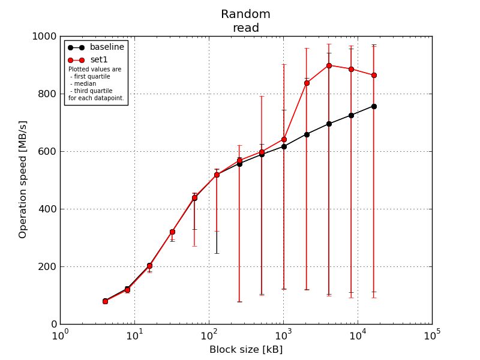
| Random
read |
Block size [kB] |
4 |
8 |
16 |
32 |
64 |
128 |
256 |
512 |
1024 |
2048 |
4096 |
8192 |
16384 |
|---|
| baseline | mean val. |
82.35 |
121.23 |
201.01 |
307.58 |
338.72 |
395.1 |
420.39 |
463.16 |
502.16 |
542.33 |
570.0 |
571.16 |
560.98 |
| standard dev. |
23.56 |
25.23 |
31.54 |
50.44 |
185.24 |
219.06 |
236.34 |
264.44 |
302.08 |
342.35 |
376.31 |
391.74 |
410.51 |
| ci. min. 90% |
77.47 |
115.79 |
193.89 |
295.62 |
305.3 |
354.33 |
374.93 |
410.47 |
439.62 |
468.47 |
485.08 |
478.28 |
458.16 |
| ci. max 90% |
87.23 |
126.68 |
208.13 |
319.54 |
372.14 |
435.86 |
465.84 |
515.86 |
564.7 |
616.18 |
654.92 |
664.04 |
663.8 |
| geom. mean |
79.84 |
117.79 |
198.49 |
302.57 |
193.84 |
241.78 |
272.52 |
313.76 |
347.51 |
374.57 |
385.47 |
378.23 |
360.41 |
| median |
81.05 |
123.0 |
204.54 |
320.31 |
437.12 |
518.96 |
557.18 |
588.58 |
617.11 |
659.17 |
695.06 |
725.47 |
757.04 |
| first quartile |
72.84 |
112.87 |
182.58 |
287.2 |
328.99 |
244.93 |
77.65 |
104.42 |
123.46 |
120.22 |
104.01 |
110.48 |
113.34 |
| third quartile |
82.54 |
130.91 |
211.41 |
327.01 |
454.38 |
538.24 |
580.13 |
624.79 |
742.85 |
854.79 |
941.72 |
956.63 |
969.8 |
| minimum |
50.47 |
35.99 |
112.72 |
138.88 |
9.69 |
17.56 |
27.65 |
42.23 |
59.28 |
74.68 |
85.3 |
91.89 |
95.98 |
| maximum |
179.15 |
190.62 |
283.82 |
419.56 |
557.87 |
594.27 |
652.74 |
765.7 |
905.7 |
944.59 |
984.0 |
989.7 |
1020.38 |
| set1 | mean val. |
79.09 |
115.05 |
188.58 |
305.23 |
338.81 |
403.07 |
447.24 |
510.78 |
579.51 |
635.18 |
635.17 |
604.55 |
572.07 |
| standard dev. |
20.68 |
22.47 |
35.59 |
44.39 |
187.28 |
219.11 |
256.73 |
308.09 |
359.18 |
392.27 |
413.83 |
418.27 |
427.29 |
| ci. min. 90% |
74.81 |
110.2 |
180.55 |
294.71 |
305.03 |
362.29 |
397.86 |
449.39 |
505.16 |
550.55 |
541.78 |
505.38 |
465.05 |
| ci. max 90% |
83.38 |
119.9 |
196.61 |
315.75 |
372.6 |
443.84 |
496.62 |
572.18 |
653.87 |
719.81 |
728.55 |
703.73 |
679.09 |
| geom. mean |
76.96 |
112.13 |
183.91 |
301.28 |
193.47 |
249.26 |
285.53 |
334.29 |
383.61 |
421.39 |
407.09 |
379.01 |
347.02 |
| median |
79.22 |
118.43 |
201.46 |
320.3 |
440.5 |
518.32 |
567.79 |
598.28 |
642.65 |
836.58 |
898.77 |
885.85 |
864.25 |
| first quartile |
71.02 |
108.1 |
178.31 |
293.71 |
271.71 |
322.43 |
78.53 |
100.86 |
120.11 |
117.72 |
97.4 |
91.96 |
91.61 |
| third quartile |
80.7 |
124.54 |
205.16 |
327.05 |
456.52 |
539.92 |
621.6 |
792.3 |
901.91 |
958.88 |
973.09 |
967.19 |
965.17 |
| minimum |
42.03 |
34.87 |
47.07 |
150.34 |
9.68 |
17.67 |
27.65 |
42.25 |
59.05 |
74.05 |
77.4 |
75.82 |
75.55 |
| maximum |
175.79 |
164.33 |
278.99 |
383.36 |
545.67 |
599.88 |
800.64 |
873.91 |
1040.27 |
1019.75 |
1017.52 |
977.13 |
1002.66 |
| baseline set1 difference |
-2.25 % |
-3.71 % |
-1.5 % |
-0.0 % |
0.77 % |
-0.12 % |
1.9 % |
1.65 % |
4.14 % |
26.91 % |
29.31 % |
22.11 % |
14.16 % |
| ttest p-value |
0.4041 |
0.1588 |
0.0551 |
0.8054 |
0.9975 |
0.8183 |
0.5061 |
0.3282 |
0.1863 |
0.1698 |
0.3895 |
0.6812 |
0.9003 |
| ttest equality |
SAME |
SAME |
DIFF |
SAME |
SAME |
SAME |
SAME |
SAME |
SAME |
SAME |
SAME |
SAME |
SAME |
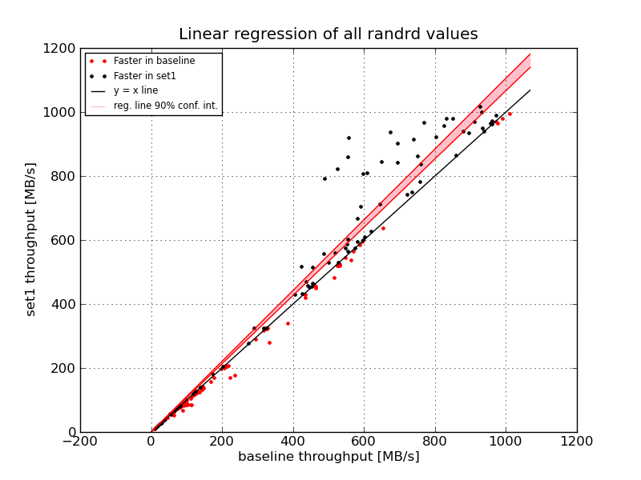
| Regression line |
|---|
| slope | 1.08616 |
| std. error | 0.01177 |
| ci. max 90% | 1.06669 |
| ci. min. 90% | 1.10563 |
Back on top
Random
write
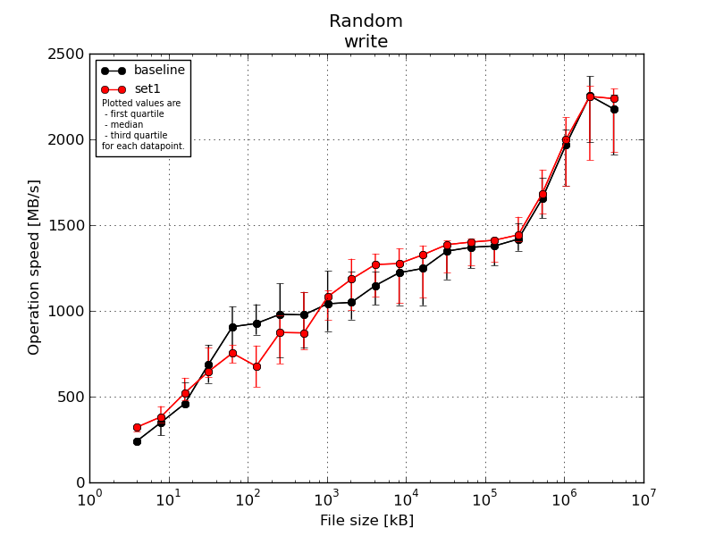
| Random
write |
File size [kB] |
4 |
8 |
16 |
32 |
64 |
128 |
256 |
512 |
1024 |
2048 |
4096 |
8192 |
16384 |
32768 |
65536 |
131072 |
262144 |
524288 |
1048576 |
2097152 |
4194304 |
|---|
| baseline | mean val. |
236.89 |
333.61 |
476.15 |
667.06 |
882.84 |
936.24 |
964.97 |
1010.81 |
1045.42 |
1083.42 |
1122.8 |
1157.34 |
1181.38 |
1281.87 |
1315.92 |
1344.13 |
1441.51 |
1667.28 |
1934.86 |
2165.61 |
2084.4 |
| standard dev. |
20.59 |
61.96 |
130.63 |
168.93 |
157.17 |
203.86 |
275.42 |
288.55 |
232.06 |
178.78 |
160.35 |
175.08 |
185.35 |
135.76 |
106.29 |
112.51 |
132.73 |
149.93 |
203.32 |
233.54 |
216.61 |
| ci. min. 90% |
217.26 |
297.69 |
416.75 |
601.75 |
829.06 |
872.99 |
886.25 |
933.94 |
987.29 |
1041.03 |
1086.61 |
1119.57 |
1143.01 |
1247.86 |
1289.3 |
1315.95 |
1408.26 |
1629.73 |
1883.94 |
2107.12 |
2030.14 |
| ci. max 90% |
256.52 |
369.52 |
535.56 |
732.38 |
936.62 |
999.48 |
1043.69 |
1087.67 |
1103.54 |
1125.81 |
1158.98 |
1195.11 |
1219.75 |
1315.87 |
1342.55 |
1372.31 |
1474.75 |
1704.84 |
1985.79 |
2224.1 |
2138.65 |
| geom. mean |
236.15 |
328.15 |
445.87 |
636.15 |
868.53 |
911.07 |
924.69 |
973.12 |
1020.34 |
1068.99 |
1110.95 |
1143.13 |
1165.72 |
1274.28 |
1311.49 |
1339.7 |
1435.73 |
1660.78 |
1924.37 |
2152.76 |
2072.83 |
| median |
241.63 |
349.12 |
458.92 |
689.1 |
907.68 |
926.67 |
980.16 |
976.65 |
1041.6 |
1049.49 |
1147.8 |
1222.35 |
1247.96 |
1348.27 |
1370.63 |
1378.42 |
1418.67 |
1653.84 |
1968.32 |
2254.44 |
2177.59 |
| first quartile |
231.39 |
273.51 |
440.49 |
580.41 |
762.48 |
861.53 |
729.31 |
786.32 |
881.93 |
949.81 |
1035.74 |
1033.59 |
1032.53 |
1183.74 |
1250.17 |
1265.55 |
1350.36 |
1540.4 |
1726.66 |
1983.39 |
1911.22 |
| third quartile |
245.25 |
383.09 |
580.96 |
801.4 |
1024.78 |
1038.89 |
1159.55 |
1110.65 |
1231.88 |
1227.89 |
1227.37 |
1275.38 |
1327.58 |
1377.12 |
1386.28 |
1401.59 |
1511.15 |
1776.0 |
2055.09 |
2367.2 |
2260.2 |
| minimum |
205.3 |
243.08 |
97.12 |
167.87 |
600.14 |
370.83 |
502.96 |
613.6 |
641.45 |
739.36 |
790.83 |
817.51 |
830.09 |
995.43 |
1098.86 |
1168.2 |
1204.18 |
1408.67 |
1616.94 |
1793.45 |
1714.79 |
| maximum |
260.87 |
410.6 |
602.32 |
869.14 |
1116.43 |
1314.64 |
1452.71 |
1592.61 |
1567.49 |
1428.62 |
1407.39 |
1399.34 |
1412.53 |
1429.66 |
1425.32 |
1806.94 |
1804.28 |
2015.42 |
2398.94 |
2422.88 |
2317.31 |
| set1 | mean val. |
306.75 |
372.05 |
549.72 |
671.29 |
773.66 |
723.2 |
891.93 |
929.67 |
1057.44 |
1144.83 |
1228.95 |
1200.45 |
1213.64 |
1305.16 |
1338.42 |
1360.32 |
1464.67 |
1686.77 |
1947.25 |
2132.41 |
2115.01 |
| standard dev. |
28.08 |
129.7 |
102.84 |
167.91 |
183.99 |
278.23 |
243.59 |
193.26 |
179.79 |
181.24 |
281.52 |
198.17 |
199.21 |
147.01 |
113.81 |
94.7 |
139.07 |
152.42 |
196.38 |
251.61 |
234.15 |
| ci. min. 90% |
279.97 |
296.87 |
502.95 |
606.36 |
710.7 |
636.89 |
822.31 |
878.19 |
1012.41 |
1101.86 |
1165.42 |
1157.69 |
1172.4 |
1268.34 |
1309.91 |
1336.6 |
1429.83 |
1648.59 |
1898.06 |
2069.39 |
2056.36 |
| ci. max 90% |
333.52 |
447.24 |
596.49 |
736.21 |
836.62 |
809.51 |
961.55 |
981.16 |
1102.48 |
1187.8 |
1292.48 |
1243.2 |
1254.88 |
1341.98 |
1366.92 |
1384.04 |
1499.5 |
1724.95 |
1996.44 |
2195.43 |
2173.66 |
| geom. mean |
305.66 |
325.82 |
541.36 |
643.58 |
751.0 |
675.94 |
861.53 |
910.65 |
1042.05 |
1129.93 |
1201.26 |
1182.57 |
1195.78 |
1296.33 |
1333.4 |
1356.96 |
1458.2 |
1679.99 |
1937.22 |
2117.05 |
2101.52 |
| median |
322.48 |
382.09 |
520.93 |
646.36 |
753.71 |
677.58 |
873.95 |
871.81 |
1082.18 |
1184.97 |
1270.63 |
1275.73 |
1327.26 |
1386.18 |
1401.01 |
1412.07 |
1443.3 |
1683.42 |
1999.46 |
2250.59 |
2237.69 |
| first quartile |
298.95 |
347.17 |
479.15 |
613.04 |
695.7 |
555.94 |
692.86 |
775.81 |
950.48 |
1005.66 |
1083.85 |
1045.87 |
1079.25 |
1223.1 |
1265.37 |
1287.56 |
1404.97 |
1567.85 |
1730.92 |
1878.4 |
1927.61 |
| third quartile |
322.48 |
444.84 |
609.74 |
785.86 |
802.14 |
797.59 |
972.88 |
1109.59 |
1119.73 |
1303.94 |
1333.77 |
1364.75 |
1381.07 |
1410.06 |
1420.01 |
1429.03 |
1548.38 |
1823.24 |
2128.5 |
2312.45 |
2295.49 |
| minimum |
260.87 |
47.37 |
434.57 |
191.68 |
314.02 |
324.67 |
577.47 |
632.09 |
644.3 |
767.78 |
825.58 |
824.84 |
835.07 |
1004.74 |
1112.81 |
1184.11 |
1222.21 |
1416.96 |
1611.09 |
1716.43 |
1718.34 |
| maximum |
328.96 |
521.74 |
746.38 |
917.83 |
1181.86 |
1327.96 |
1462.84 |
1377.16 |
1567.49 |
1433.51 |
2368.39 |
1406.49 |
1418.2 |
1434.9 |
1442.58 |
1452.73 |
1771.65 |
1943.92 |
2228.49 |
2474.34 |
2362.97 |
| baseline set1 difference |
33.46 % |
9.44 % |
13.51 % |
-6.2 % |
-16.96 % |
-26.88 % |
-10.84 % |
-10.73 % |
3.9 % |
12.91 % |
10.7 % |
4.37 % |
6.35 % |
2.81 % |
2.22 % |
2.44 % |
1.74 % |
1.79 % |
1.58 % |
-0.17 % |
2.76 % |
| ttest p-value |
0.002 |
0.4088 |
0.0976 |
0.9372 |
0.0287 |
0.0013 |
0.244 |
0.1436 |
0.7841 |
0.0912 |
0.0168 |
0.2092 |
0.3409 |
0.4371 |
0.3352 |
0.4621 |
0.4212 |
0.5425 |
0.7694 |
0.5182 |
0.5214 |
| ttest equality |
DIFF |
SAME |
DIFF |
SAME |
DIFF |
DIFF |
SAME |
SAME |
SAME |
DIFF |
DIFF |
SAME |
SAME |
SAME |
SAME |
SAME |
SAME |
SAME |
SAME |
SAME |
SAME |
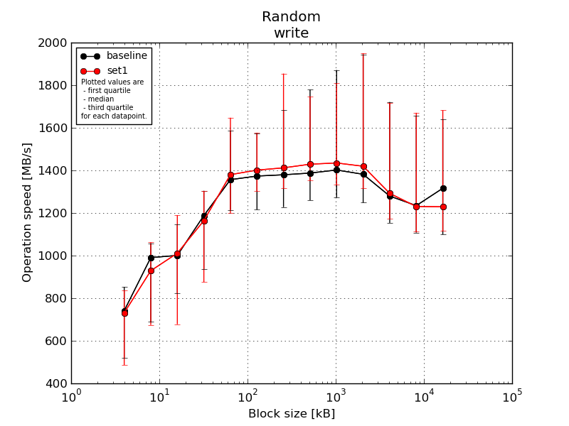
| Random
write |
Block size [kB] |
4 |
8 |
16 |
32 |
64 |
128 |
256 |
512 |
1024 |
2048 |
4096 |
8192 |
16384 |
|---|
| baseline | mean val. |
681.5 |
874.22 |
963.88 |
1117.78 |
1410.42 |
1449.52 |
1462.91 |
1512.24 |
1538.8 |
1541.52 |
1393.72 |
1344.08 |
1349.34 |
| standard dev. |
233.85 |
265.05 |
281.26 |
261.1 |
378.79 |
424.42 |
442.75 |
449.97 |
462.84 |
463.84 |
346.88 |
323.45 |
326.46 |
| ci. min. 90% |
633.09 |
817.04 |
900.41 |
1055.88 |
1342.09 |
1370.54 |
1377.75 |
1422.58 |
1442.99 |
1441.45 |
1315.44 |
1267.39 |
1267.57 |
| ci. max 90% |
729.91 |
931.4 |
1027.35 |
1179.69 |
1478.76 |
1528.5 |
1548.07 |
1601.91 |
1634.62 |
1641.58 |
1472.0 |
1420.77 |
1431.1 |
| geom. mean |
630.54 |
822.66 |
895.71 |
1083.53 |
1361.5 |
1390.92 |
1396.93 |
1449.1 |
1471.74 |
1476.8 |
1352.4 |
1305.03 |
1309.39 |
| median |
741.33 |
990.52 |
1000.93 |
1188.18 |
1356.68 |
1373.44 |
1379.5 |
1387.4 |
1401.97 |
1381.7 |
1279.54 |
1234.63 |
1316.19 |
| first quartile |
520.53 |
688.41 |
822.78 |
937.21 |
1214.17 |
1215.56 |
1227.37 |
1260.0 |
1273.47 |
1248.47 |
1153.68 |
1108.01 |
1099.45 |
| third quartile |
853.33 |
1056.51 |
1145.57 |
1304.34 |
1586.58 |
1573.65 |
1682.0 |
1779.22 |
1871.35 |
1942.49 |
1721.23 |
1655.87 |
1640.29 |
| minimum |
205.3 |
243.08 |
97.12 |
578.81 |
695.7 |
611.13 |
555.45 |
711.19 |
698.84 |
856.52 |
861.88 |
833.67 |
833.77 |
| maximum |
1080.0 |
1344.5 |
1465.71 |
1592.61 |
2171.39 |
2347.07 |
2382.83 |
2422.88 |
2406.75 |
2398.94 |
1994.3 |
1817.66 |
1816.98 |
| set1 | mean val. |
657.55 |
855.09 |
935.07 |
1080.4 |
1420.28 |
1450.69 |
1510.29 |
1571.28 |
1574.51 |
1564.82 |
1412.11 |
1335.38 |
1338.84 |
| standard dev. |
199.1 |
253.51 |
281.69 |
264.76 |
431.15 |
449.68 |
443.78 |
442.05 |
432.31 |
433.71 |
335.82 |
302.67 |
317.52 |
| ci. min. 90% |
616.34 |
800.4 |
871.51 |
1017.62 |
1342.5 |
1367.01 |
1424.93 |
1483.19 |
1485.01 |
1471.25 |
1336.33 |
1263.62 |
1259.32 |
| ci. max 90% |
698.77 |
909.78 |
998.64 |
1143.17 |
1498.05 |
1534.36 |
1595.64 |
1659.37 |
1664.0 |
1658.39 |
1487.89 |
1407.14 |
1418.37 |
| geom. mean |
621.97 |
794.93 |
882.91 |
1042.74 |
1348.67 |
1374.17 |
1446.71 |
1510.47 |
1519.33 |
1508.65 |
1373.27 |
1300.6 |
1300.9 |
| median |
731.32 |
928.95 |
1011.21 |
1164.24 |
1380.03 |
1401.4 |
1411.97 |
1429.1 |
1434.9 |
1419.51 |
1292.31 |
1230.44 |
1229.2 |
| first quartile |
486.15 |
674.24 |
677.58 |
875.06 |
1200.28 |
1302.97 |
1317.6 |
1353.08 |
1332.01 |
1316.81 |
1174.04 |
1111.68 |
1116.42 |
| third quartile |
836.15 |
1062.34 |
1190.02 |
1302.18 |
1647.44 |
1576.93 |
1854.72 |
1746.81 |
1808.95 |
1949.89 |
1717.11 |
1670.48 |
1682.89 |
| minimum |
260.87 |
47.37 |
191.68 |
404.6 |
443.26 |
324.67 |
720.47 |
648.51 |
924.3 |
887.23 |
881.81 |
841.66 |
835.07 |
| maximum |
941.78 |
1256.07 |
1322.75 |
1462.84 |
2216.68 |
2400.75 |
2381.65 |
2456.91 |
2474.34 |
2337.14 |
1971.68 |
1765.12 |
1823.28 |
| baseline set1 difference |
-1.35 % |
-6.22 % |
1.03 % |
-2.01 % |
1.72 % |
2.04 % |
2.35 % |
3.01 % |
2.35 % |
2.74 % |
1.0 % |
-0.34 % |
-6.61 % |
| ttest p-value |
0.5307 |
0.6869 |
0.5926 |
0.4788 |
0.8745 |
0.9866 |
0.5138 |
0.4349 |
0.6502 |
0.7767 |
0.7781 |
0.8899 |
0.8775 |
| ttest equality |
SAME |
SAME |
SAME |
SAME |
SAME |
SAME |
SAME |
SAME |
SAME |
SAME |
SAME |
SAME |
SAME |
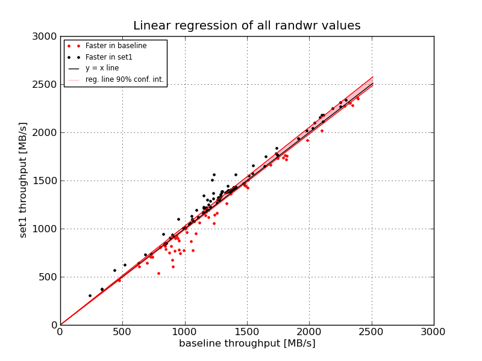
| Regression line |
|---|
| slope | 1.00898 |
| std. error | 0.01059 |
| ci. max 90% | 0.99146 |
| ci. min. 90% | 1.02651 |
Back on top
Backwards
read
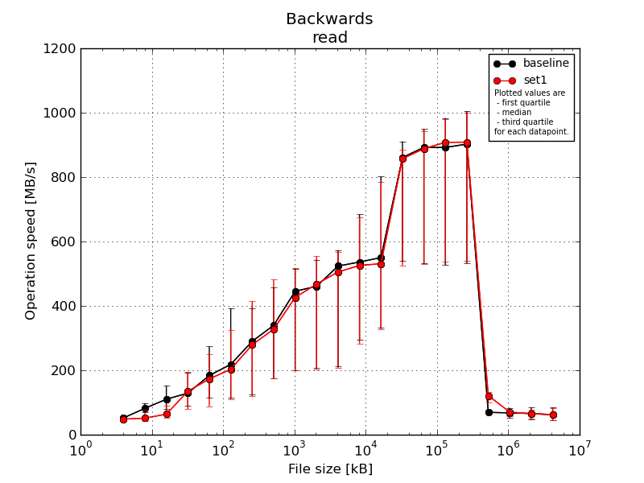
| Backwards
read |
File size [kB] |
4 |
8 |
16 |
32 |
64 |
128 |
256 |
512 |
1024 |
2048 |
4096 |
8192 |
16384 |
32768 |
65536 |
131072 |
262144 |
524288 |
1048576 |
2097152 |
4194304 |
|---|
| baseline | mean val. |
51.79 |
81.38 |
115.47 |
148.08 |
189.21 |
248.04 |
284.39 |
316.94 |
363.47 |
384.49 |
421.49 |
477.45 |
542.17 |
754.49 |
776.96 |
791.48 |
801.46 |
72.75 |
65.63 |
63.57 |
60.52 |
| standard dev. |
10.59 |
22.15 |
38.97 |
72.66 |
100.81 |
145.74 |
157.47 |
157.89 |
180.11 |
179.62 |
193.39 |
225.88 |
268.08 |
178.87 |
203.62 |
215.81 |
223.04 |
11.4 |
19.86 |
22.7 |
22.59 |
| ci. min. 90% |
41.69 |
68.54 |
97.75 |
119.99 |
154.72 |
202.83 |
239.39 |
274.88 |
318.36 |
341.9 |
377.84 |
428.72 |
486.67 |
709.69 |
725.95 |
737.42 |
745.6 |
69.89 |
60.65 |
57.89 |
54.86 |
| ci. max 90% |
61.88 |
94.22 |
133.19 |
176.18 |
223.71 |
293.25 |
329.4 |
359.01 |
408.59 |
427.08 |
465.13 |
526.18 |
597.66 |
799.29 |
827.96 |
845.53 |
857.33 |
75.6 |
70.6 |
69.26 |
66.18 |
| geom. mean |
50.92 |
78.02 |
109.47 |
131.04 |
162.64 |
203.16 |
234.7 |
265.97 |
301.81 |
324.34 |
355.41 |
398.25 |
444.06 |
731.23 |
747.43 |
758.95 |
767.18 |
71.94 |
62.41 |
59.14 |
55.91 |
| median |
52.04 |
81.91 |
110.18 |
129.1 |
183.86 |
218.37 |
290.0 |
339.7 |
445.41 |
460.89 |
523.77 |
536.25 |
550.19 |
860.93 |
892.36 |
891.97 |
902.66 |
69.4 |
67.82 |
65.82 |
61.95 |
| first quartile |
43.95 |
70.5 |
79.12 |
90.43 |
114.48 |
114.56 |
126.05 |
174.15 |
199.48 |
206.62 |
211.3 |
295.14 |
332.31 |
539.13 |
531.42 |
527.33 |
532.65 |
66.77 |
51.52 |
47.91 |
44.77 |
| third quartile |
57.33 |
98.17 |
152.66 |
191.96 |
273.98 |
392.97 |
392.79 |
457.34 |
513.89 |
543.67 |
573.14 |
684.05 |
802.2 |
910.8 |
949.83 |
983.28 |
1005.19 |
77.54 |
83.22 |
85.57 |
84.1 |
| minimum |
39.5 |
35.86 |
72.35 |
51.91 |
68.02 |
69.83 |
57.13 |
74.89 |
77.79 |
80.44 |
78.97 |
80.92 |
80.75 |
453.86 |
457.08 |
454.8 |
457.82 |
52.75 |
32.81 |
27.44 |
25.51 |
| maximum |
66.12 |
110.03 |
175.79 |
276.64 |
381.13 |
503.73 |
578.75 |
529.61 |
590.26 |
580.57 |
651.45 |
739.1 |
856.21 |
933.62 |
981.67 |
1030.38 |
1026.82 |
107.27 |
104.41 |
97.42 |
90.24 |
| set1 | mean val. |
42.78 |
59.38 |
83.39 |
142.82 |
170.14 |
232.11 |
284.93 |
320.95 |
364.5 |
403.72 |
422.09 |
474.64 |
534.69 |
741.44 |
772.42 |
792.73 |
803.2 |
114.76 |
65.82 |
62.06 |
61.1 |
| standard dev. |
14.4 |
23.52 |
46.7 |
67.36 |
94.83 |
135.54 |
156.09 |
167.84 |
189.49 |
205.96 |
200.05 |
228.14 |
264.65 |
176.11 |
200.26 |
211.06 |
217.18 |
24.33 |
18.9 |
20.64 |
22.59 |
| ci. min. 90% |
29.05 |
45.75 |
62.15 |
116.77 |
137.69 |
190.07 |
240.32 |
276.23 |
317.04 |
354.88 |
376.95 |
425.42 |
479.91 |
697.33 |
722.26 |
739.86 |
748.8 |
108.66 |
61.09 |
56.89 |
55.44 |
| ci. max 90% |
56.51 |
73.02 |
104.63 |
168.86 |
202.59 |
274.16 |
329.54 |
365.66 |
411.96 |
452.55 |
467.24 |
523.86 |
589.48 |
785.55 |
822.58 |
845.59 |
857.59 |
120.85 |
70.56 |
67.23 |
66.75 |
| geom. mean |
39.84 |
55.28 |
74.08 |
128.1 |
145.64 |
192.92 |
235.55 |
266.52 |
299.8 |
332.75 |
353.38 |
392.37 |
436.85 |
718.39 |
743.67 |
761.65 |
770.81 |
111.91 |
62.99 |
58.28 |
56.49 |
| median |
48.21 |
51.41 |
63.76 |
134.82 |
173.17 |
202.99 |
279.34 |
327.62 |
426.08 |
467.83 |
505.43 |
525.52 |
531.21 |
857.13 |
888.37 |
907.99 |
908.61 |
121.22 |
70.35 |
64.94 |
62.74 |
| first quartile |
47.65 |
42.83 |
53.71 |
79.23 |
88.03 |
110.02 |
119.65 |
173.81 |
200.52 |
203.2 |
206.91 |
283.28 |
327.9 |
525.43 |
530.62 |
538.04 |
540.08 |
98.84 |
57.47 |
49.69 |
45.54 |
| third quartile |
48.79 |
78.66 |
90.44 |
195.39 |
249.94 |
323.79 |
414.74 |
481.38 |
517.89 |
553.97 |
567.81 |
675.36 |
784.47 |
883.91 |
943.03 |
980.68 |
1001.02 |
131.77 |
75.71 |
78.73 |
83.11 |
| minimum |
17.2 |
28.3 |
42.23 |
66.51 |
65.59 |
69.02 |
66.84 |
75.69 |
78.58 |
79.61 |
79.67 |
79.42 |
79.18 |
453.66 |
455.82 |
460.37 |
466.88 |
54.16 |
32.34 |
27.45 |
25.35 |
| maximum |
52.04 |
101.51 |
173.92 |
283.82 |
402.8 |
498.46 |
542.51 |
623.45 |
748.47 |
827.13 |
771.16 |
740.54 |
857.16 |
916.46 |
964.68 |
992.84 |
1011.31 |
148.16 |
111.79 |
101.87 |
93.07 |
| baseline set1 difference |
-7.36 % |
-37.24 % |
-42.13 % |
4.43 % |
-5.81 % |
-7.04 % |
-3.68 % |
-3.55 % |
-4.34 % |
1.5 % |
-3.5 % |
-2.0 % |
-3.45 % |
-0.44 % |
-0.45 % |
1.8 % |
0.66 % |
74.68 % |
3.74 % |
-1.35 % |
1.27 % |
| ttest p-value |
0.2926 |
0.0451 |
0.0506 |
0.8134 |
0.4942 |
0.6628 |
0.9886 |
0.9128 |
0.979 |
0.6199 |
0.9871 |
0.946 |
0.8731 |
0.728 |
0.9154 |
0.9779 |
0.9703 |
0.0 |
0.9621 |
0.7417 |
0.9038 |
| ttest equality |
SAME |
DIFF |
DIFF |
SAME |
SAME |
SAME |
SAME |
SAME |
SAME |
SAME |
SAME |
SAME |
SAME |
SAME |
SAME |
SAME |
SAME |
DIFF |
SAME |
SAME |
SAME |
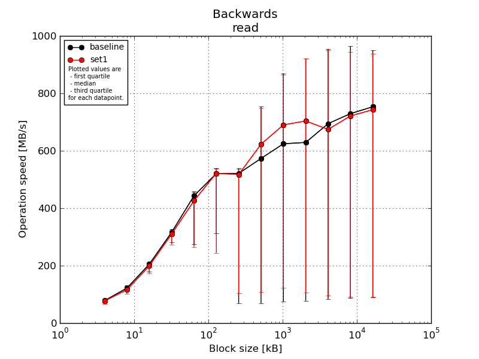
| Backwards
read |
Block size [kB] |
4 |
8 |
16 |
32 |
64 |
128 |
256 |
512 |
1024 |
2048 |
4096 |
8192 |
16384 |
|---|
| baseline | mean val. |
74.35 |
119.72 |
194.89 |
298.17 |
338.89 |
404.61 |
398.58 |
486.37 |
538.97 |
557.84 |
568.43 |
567.93 |
549.05 |
| standard dev. |
11.04 |
15.19 |
20.79 |
44.22 |
174.02 |
210.72 |
212.52 |
292.09 |
340.91 |
374.1 |
395.7 |
410.8 |
423.42 |
| ci. min. 90% |
72.06 |
116.44 |
190.2 |
287.68 |
307.5 |
365.4 |
357.71 |
428.17 |
468.4 |
477.14 |
479.13 |
470.52 |
442.99 |
| ci. max 90% |
76.63 |
123.0 |
199.59 |
308.65 |
370.28 |
443.82 |
439.46 |
544.58 |
609.54 |
638.55 |
657.72 |
665.33 |
655.11 |
| geom. mean |
73.33 |
118.69 |
193.69 |
293.67 |
237.42 |
284.92 |
282.72 |
316.26 |
353.12 |
357.43 |
354.9 |
343.71 |
321.51 |
| median |
78.41 |
121.91 |
205.21 |
316.13 |
443.12 |
520.96 |
521.04 |
573.25 |
624.41 |
629.01 |
694.44 |
729.37 |
753.29 |
| first quartile |
71.73 |
111.51 |
180.18 |
281.63 |
273.98 |
312.58 |
69.1 |
69.01 |
75.2 |
77.74 |
83.73 |
86.93 |
90.1 |
| third quartile |
81.03 |
130.77 |
210.16 |
326.3 |
458.6 |
539.34 |
538.81 |
753.54 |
868.35 |
920.49 |
954.63 |
964.51 |
949.83 |
| minimum |
35.86 |
74.32 |
133.28 |
105.63 |
25.51 |
35.45 |
44.64 |
44.88 |
61.84 |
66.77 |
66.86 |
66.9 |
65.93 |
| maximum |
84.56 |
142.12 |
219.27 |
339.52 |
486.02 |
599.43 |
604.33 |
802.63 |
918.39 |
984.61 |
1015.78 |
1024.0 |
1030.38 |
| set1 | mean val. |
70.17 |
108.71 |
186.43 |
289.77 |
334.14 |
402.47 |
402.77 |
498.42 |
551.52 |
570.01 |
566.79 |
564.57 |
546.97 |
| standard dev. |
13.89 |
24.19 |
32.2 |
44.61 |
172.19 |
208.63 |
208.67 |
290.4 |
339.63 |
371.7 |
385.36 |
396.51 |
410.72 |
| ci. min. 90% |
67.3 |
103.49 |
179.16 |
279.19 |
303.08 |
363.65 |
362.63 |
440.55 |
481.22 |
489.82 |
479.83 |
470.56 |
444.1 |
| ci. max 90% |
73.05 |
113.93 |
193.69 |
300.34 |
365.2 |
441.29 |
442.9 |
556.29 |
621.83 |
650.2 |
653.75 |
658.59 |
649.84 |
| geom. mean |
68.2 |
105.08 |
182.34 |
285.83 |
235.38 |
287.2 |
295.07 |
335.79 |
371.83 |
375.21 |
368.9 |
358.89 |
335.42 |
| median |
77.11 |
115.93 |
198.97 |
310.1 |
426.17 |
521.66 |
517.54 |
622.91 |
690.08 |
703.83 |
674.53 |
721.1 |
743.25 |
| first quartile |
66.84 |
101.32 |
173.69 |
273.56 |
265.35 |
244.43 |
104.98 |
109.03 |
123.8 |
105.22 |
96.85 |
91.37 |
91.69 |
| third quartile |
79.73 |
121.94 |
204.59 |
323.45 |
456.39 |
537.63 |
535.5 |
748.88 |
864.42 |
920.21 |
951.01 |
944.47 |
937.96 |
| minimum |
17.2 |
38.88 |
63.76 |
173.17 |
25.35 |
35.67 |
45.54 |
45.33 |
60.27 |
70.38 |
70.67 |
72.81 |
75.71 |
| maximum |
82.18 |
142.98 |
228.12 |
330.25 |
480.87 |
610.54 |
651.45 |
775.51 |
918.33 |
983.48 |
1007.81 |
1008.0 |
1011.31 |
| baseline set1 difference |
-1.65 % |
-4.9 % |
-3.04 % |
-1.91 % |
-3.82 % |
0.14 % |
-0.67 % |
8.66 % |
10.52 % |
11.89 % |
-2.87 % |
-1.13 % |
-1.33 % |
| ttest p-value |
0.06 |
0.0034 |
0.1041 |
0.3465 |
0.8582 |
0.9486 |
0.9034 |
0.807 |
0.8337 |
0.8585 |
0.9825 |
0.967 |
0.9812 |
| ttest equality |
DIFF |
DIFF |
SAME |
SAME |
SAME |
SAME |
SAME |
SAME |
SAME |
SAME |
SAME |
SAME |
SAME |
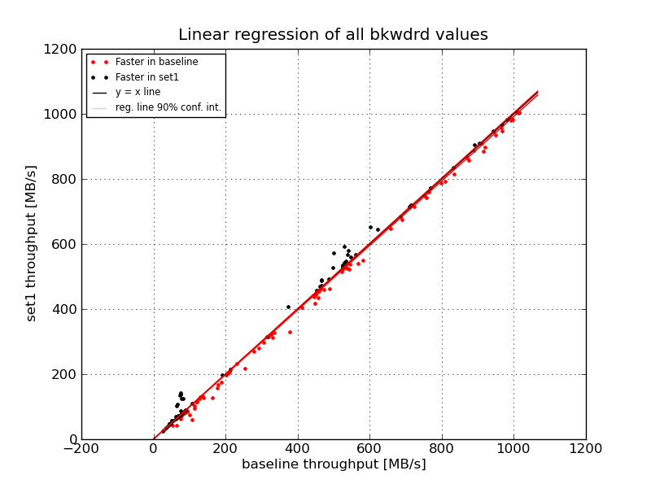
| Regression line |
|---|
| slope | 0.99798 |
| std. error | 0.00343 |
| ci. max 90% | 0.99231 |
| ci. min. 90% | 1.00366 |
Back on top
Record
rewrite
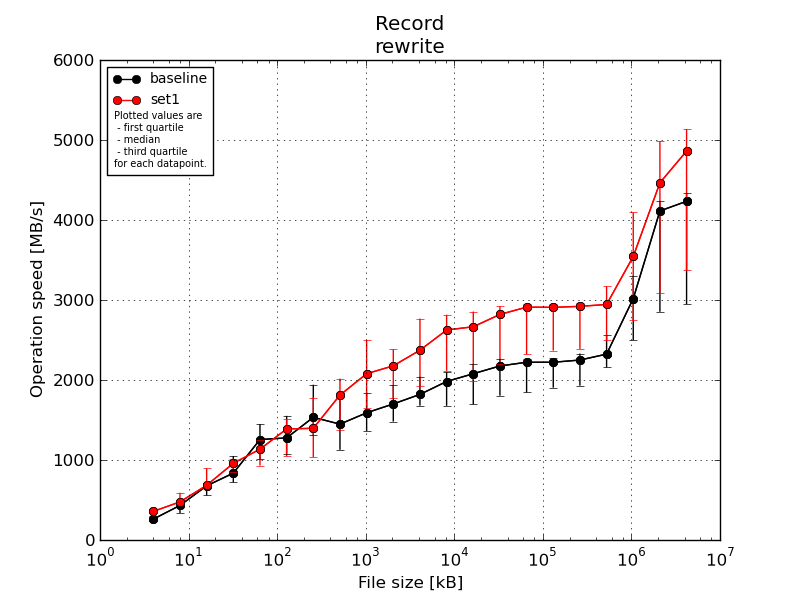
| Record
rewrite |
File size [kB] |
4 |
8 |
16 |
32 |
64 |
128 |
256 |
512 |
1024 |
2048 |
4096 |
8192 |
16384 |
32768 |
65536 |
131072 |
262144 |
524288 |
1048576 |
2097152 |
4194304 |
|---|
| baseline | mean val. |
266.36 |
405.16 |
594.22 |
862.22 |
1174.18 |
1301.56 |
1584.49 |
1511.62 |
1689.31 |
1741.25 |
1827.62 |
1894.88 |
1944.58 |
2042.37 |
2086.69 |
2106.49 |
2152.28 |
2323.28 |
2966.36 |
3608.5 |
3705.26 |
| standard dev. |
31.58 |
66.2 |
204.45 |
234.18 |
324.55 |
401.86 |
431.36 |
469.46 |
477.85 |
326.45 |
323.08 |
330.57 |
372.01 |
339.68 |
302.71 |
280.93 |
279.34 |
294.24 |
648.65 |
866.74 |
917.18 |
| ci. min. 90% |
236.25 |
366.79 |
501.24 |
771.68 |
1063.13 |
1176.9 |
1461.2 |
1386.55 |
1569.62 |
1663.85 |
1754.71 |
1823.57 |
1867.56 |
1957.29 |
2010.87 |
2036.12 |
2082.31 |
2249.58 |
2803.88 |
3391.41 |
3475.53 |
| ci. max 90% |
296.46 |
443.54 |
687.19 |
952.77 |
1285.24 |
1426.22 |
1707.78 |
1636.68 |
1809.0 |
1818.65 |
1900.52 |
1966.2 |
2021.59 |
2127.45 |
2162.51 |
2176.85 |
2222.25 |
2396.98 |
3128.83 |
3825.6 |
3934.99 |
| geom. mean |
264.86 |
400.06 |
529.89 |
816.01 |
1106.6 |
1229.79 |
1521.66 |
1442.79 |
1628.7 |
1712.61 |
1798.66 |
1863.61 |
1905.49 |
2011.82 |
2063.5 |
2086.88 |
2133.53 |
2304.52 |
2895.24 |
3489.7 |
3573.91 |
| median |
260.87 |
432.26 |
676.98 |
836.02 |
1255.44 |
1276.36 |
1533.44 |
1448.24 |
1590.07 |
1700.76 |
1819.89 |
1981.21 |
2078.46 |
2175.69 |
2221.67 |
2221.68 |
2249.54 |
2323.38 |
3017.75 |
4113.4 |
4233.82 |
| first quartile |
241.63 |
337.09 |
556.31 |
721.01 |
1009.0 |
1079.13 |
1308.58 |
1127.62 |
1362.31 |
1480.12 |
1678.66 |
1677.3 |
1695.28 |
1804.03 |
1843.96 |
1903.97 |
1928.95 |
2158.13 |
2498.25 |
2852.55 |
2947.03 |
| third quartile |
298.95 |
456.6 |
713.86 |
1050.41 |
1449.87 |
1552.2 |
1941.19 |
1829.81 |
1841.38 |
1937.31 |
2041.82 |
2100.59 |
2200.81 |
2264.67 |
2268.63 |
2269.5 |
2330.6 |
2559.79 |
3304.26 |
4239.39 |
4334.63 |
| minimum |
231.39 |
309.7 |
90.29 |
190.57 |
295.94 |
466.53 |
704.31 |
842.97 |
1069.48 |
1200.46 |
1177.53 |
1210.09 |
1218.39 |
1407.77 |
1545.7 |
1629.45 |
1672.59 |
1778.15 |
1984.32 |
2200.18 |
2210.9 |
| maximum |
298.95 |
490.5 |
782.0 |
1151.72 |
1525.82 |
1950.43 |
2295.45 |
2485.35 |
2716.86 |
2621.6 |
2520.69 |
2438.23 |
2553.04 |
2483.91 |
2504.98 |
2466.38 |
2644.6 |
2795.58 |
4323.92 |
4569.69 |
4650.82 |
| set1 | mean val. |
355.56 |
475.21 |
764.39 |
931.62 |
1025.05 |
1261.79 |
1449.73 |
1721.62 |
2067.5 |
2110.01 |
2390.72 |
2434.14 |
2437.68 |
2566.73 |
2667.77 |
2703.38 |
2738.62 |
2818.55 |
3426.2 |
4152.81 |
4349.9 |
| standard dev. |
46.29 |
167.61 |
127.85 |
306.32 |
415.68 |
358.97 |
554.88 |
412.49 |
538.45 |
409.62 |
719.13 |
585.83 |
606.12 |
566.18 |
511.87 |
464.23 |
428.97 |
431.82 |
769.21 |
1156.16 |
1205.33 |
| ci. min. 90% |
311.42 |
378.05 |
706.24 |
813.19 |
882.81 |
1150.43 |
1291.13 |
1611.73 |
1932.63 |
2012.89 |
2228.44 |
2307.75 |
2312.21 |
2424.92 |
2539.56 |
2587.1 |
2631.17 |
2710.39 |
3233.54 |
3863.22 |
4047.99 |
| ci. max 90% |
399.7 |
572.37 |
822.53 |
1050.06 |
1167.29 |
1373.15 |
1608.32 |
1831.51 |
2202.36 |
2207.13 |
2553.0 |
2560.53 |
2563.16 |
2708.54 |
2795.98 |
2819.66 |
2846.06 |
2926.71 |
3618.87 |
4442.4 |
4651.8 |
| geom. mean |
352.92 |
411.12 |
755.03 |
847.59 |
912.83 |
1197.98 |
1347.56 |
1668.04 |
1998.85 |
2067.5 |
2291.46 |
2351.89 |
2348.8 |
2495.49 |
2613.58 |
2660.29 |
2702.92 |
2783.73 |
3334.96 |
3971.74 |
4155.1 |
| median |
357.68 |
476.64 |
684.05 |
958.29 |
1135.78 |
1387.72 |
1396.6 |
1811.34 |
2078.65 |
2177.27 |
2372.41 |
2624.76 |
2665.71 |
2819.36 |
2910.82 |
2908.36 |
2920.67 |
2943.98 |
3544.3 |
4465.22 |
4861.99 |
| first quartile |
357.68 |
439.89 |
676.98 |
845.33 |
930.23 |
1044.33 |
1037.38 |
1378.14 |
1647.53 |
1773.82 |
1919.51 |
2113.83 |
1990.54 |
2200.51 |
2319.6 |
2367.48 |
2388.24 |
2495.12 |
2743.87 |
3092.54 |
3371.06 |
| third quartile |
391.91 |
590.14 |
895.05 |
1017.78 |
1249.46 |
1507.42 |
1780.87 |
2017.36 |
2499.87 |
2385.82 |
2767.38 |
2816.2 |
2856.08 |
2920.46 |
2944.41 |
2951.68 |
2956.53 |
3170.95 |
4094.11 |
4987.74 |
5137.58 |
| minimum |
278.61 |
52.78 |
650.12 |
184.92 |
309.2 |
461.19 |
663.32 |
740.83 |
1270.69 |
1323.58 |
1282.09 |
1234.35 |
1227.75 |
1498.2 |
1745.39 |
1894.5 |
2007.67 |
2051.66 |
2250.3 |
2340.71 |
2402.23 |
| maximum |
391.91 |
644.97 |
980.99 |
1368.1 |
1785.65 |
1957.72 |
2775.44 |
2703.19 |
3424.46 |
2797.32 |
4926.06 |
3406.95 |
3278.75 |
3245.44 |
3265.29 |
3321.67 |
3284.7 |
3595.96 |
4582.09 |
5864.04 |
5864.95 |
| baseline set1 difference |
37.11 % |
10.27 % |
1.04 % |
14.63 % |
-9.53 % |
8.72 % |
-8.92 % |
25.07 % |
30.73 % |
28.02 % |
30.36 % |
32.48 % |
28.25 % |
29.58 % |
31.02 % |
30.91 % |
29.83 % |
26.71 % |
17.45 % |
8.55 % |
14.84 % |
| ttest p-value |
0.0074 |
0.2348 |
0.0107 |
0.4259 |
0.1638 |
0.6875 |
0.2606 |
0.0367 |
0.0007 |
0.0 |
0.0 |
0.0 |
0.0 |
0.0 |
0.0 |
0.0 |
0.0 |
0.0 |
0.0029 |
0.0133 |
0.0054 |
| ttest equality |
DIFF |
SAME |
DIFF |
SAME |
SAME |
SAME |
SAME |
DIFF |
DIFF |
DIFF |
DIFF |
DIFF |
DIFF |
DIFF |
DIFF |
DIFF |
DIFF |
DIFF |
DIFF |
DIFF |
DIFF |
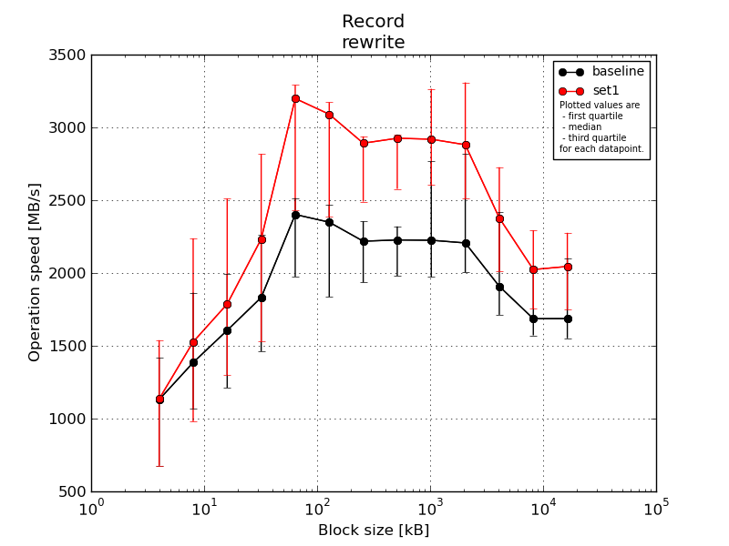
| Record
rewrite |
Block size [kB] |
4 |
8 |
16 |
32 |
64 |
128 |
256 |
512 |
1024 |
2048 |
4096 |
8192 |
16384 |
|---|
| baseline | mean val. |
1020.18 |
1384.31 |
1555.69 |
1787.25 |
2483.85 |
2387.83 |
2355.16 |
2440.74 |
2450.98 |
2492.42 |
2057.83 |
1767.4 |
1773.58 |
| standard dev. |
441.87 |
551.76 |
555.42 |
521.01 |
900.09 |
916.55 |
877.08 |
918.37 |
891.22 |
885.84 |
520.66 |
319.58 |
333.64 |
| ci. min. 90% |
928.71 |
1265.28 |
1430.35 |
1663.72 |
2321.48 |
2217.28 |
2186.46 |
2257.74 |
2266.48 |
2301.31 |
1940.34 |
1691.63 |
1690.01 |
| ci. max 90% |
1111.66 |
1503.35 |
1681.02 |
1910.79 |
2646.23 |
2558.39 |
2523.86 |
2623.75 |
2635.48 |
2683.53 |
2175.32 |
1843.17 |
1857.15 |
| geom. mean |
887.42 |
1233.26 |
1400.97 |
1701.36 |
2333.03 |
2214.47 |
2205.53 |
2287.38 |
2309.95 |
2358.35 |
1995.61 |
1738.55 |
1742.24 |
| median |
1130.66 |
1385.17 |
1606.15 |
1831.94 |
2401.95 |
2349.05 |
2218.37 |
2226.95 |
2225.15 |
2206.44 |
1908.4 |
1686.08 |
1686.49 |
| first quartile |
676.98 |
1069.36 |
1212.28 |
1462.17 |
1975.23 |
1837.2 |
1935.34 |
1980.56 |
1972.12 |
2003.58 |
1713.13 |
1571.78 |
1551.14 |
| third quartile |
1417.96 |
1865.38 |
1993.65 |
2260.31 |
2514.12 |
2466.37 |
2355.33 |
2320.05 |
2766.3 |
2819.69 |
2416.2 |
2042.23 |
2102.65 |
| minimum |
190.57 |
186.28 |
90.29 |
709.24 |
933.54 |
560.25 |
746.42 |
881.97 |
1108.49 |
1379.29 |
1177.53 |
1210.09 |
1218.39 |
| maximum |
1683.37 |
2252.81 |
2468.97 |
2621.6 |
4650.82 |
4569.69 |
4341.88 |
4323.92 |
4334.63 |
4271.37 |
2979.32 |
2240.65 |
2239.92 |
| set1 | mean val. |
1085.13 |
1567.18 |
1784.47 |
2114.56 |
3031.85 |
3018.03 |
3000.75 |
3038.64 |
3003.98 |
2977.72 |
2394.21 |
1980.82 |
1962.76 |
| standard dev. |
498.44 |
695.3 |
746.36 |
755.86 |
1233.31 |
1141.61 |
953.72 |
1060.8 |
969.42 |
967.71 |
584.04 |
370.67 |
379.31 |
| ci. min. 90% |
981.94 |
1417.18 |
1616.05 |
1935.35 |
2809.36 |
2805.59 |
2817.31 |
2827.25 |
2803.29 |
2768.95 |
2262.42 |
1892.94 |
1867.76 |
| ci. max 90% |
1188.31 |
1717.18 |
1952.9 |
2293.77 |
3254.34 |
3230.46 |
3184.19 |
3250.03 |
3204.66 |
3186.49 |
2526.01 |
2068.71 |
2057.77 |
| geom. mean |
921.73 |
1385.95 |
1586.01 |
1923.51 |
2739.72 |
2790.12 |
2861.67 |
2861.73 |
2852.14 |
2824.66 |
2319.8 |
1943.18 |
1923.03 |
| median |
1135.3 |
1526.93 |
1786.92 |
2233.57 |
3198.72 |
3090.28 |
2891.52 |
2925.64 |
2918.89 |
2880.95 |
2378.03 |
2023.73 |
2045.02 |
| first quartile |
676.98 |
980.64 |
1301.04 |
1529.44 |
2433.03 |
2386.61 |
2490.56 |
2577.61 |
2603.38 |
2512.58 |
2011.94 |
1756.52 |
1751.75 |
| third quartile |
1538.68 |
2237.99 |
2511.27 |
2818.49 |
3291.25 |
3172.35 |
2938.16 |
2951.09 |
3265.16 |
3308.97 |
2726.62 |
2293.31 |
2276.15 |
| minimum |
52.78 |
330.65 |
345.47 |
200.47 |
801.17 |
822.02 |
1219.55 |
1070.63 |
1287.07 |
1323.58 |
1334.62 |
1234.35 |
1227.75 |
| maximum |
1755.74 |
2631.8 |
2985.68 |
3111.56 |
5788.95 |
5864.95 |
5555.34 |
5534.19 |
5583.14 |
5327.57 |
3437.34 |
2496.97 |
2462.42 |
| baseline set1 difference |
0.41 % |
10.23 % |
11.26 % |
21.92 % |
33.17 % |
31.55 % |
30.34 % |
31.37 % |
31.18 % |
30.57 % |
24.61 % |
20.03 % |
21.26 % |
| ttest p-value |
0.4333 |
0.1132 |
0.071 |
0.0133 |
0.0011 |
0.0002 |
0.0 |
0.0005 |
0.0009 |
0.0049 |
0.0019 |
0.0027 |
0.0138 |
| ttest equality |
SAME |
SAME |
DIFF |
DIFF |
DIFF |
DIFF |
DIFF |
DIFF |
DIFF |
DIFF |
DIFF |
DIFF |
DIFF |
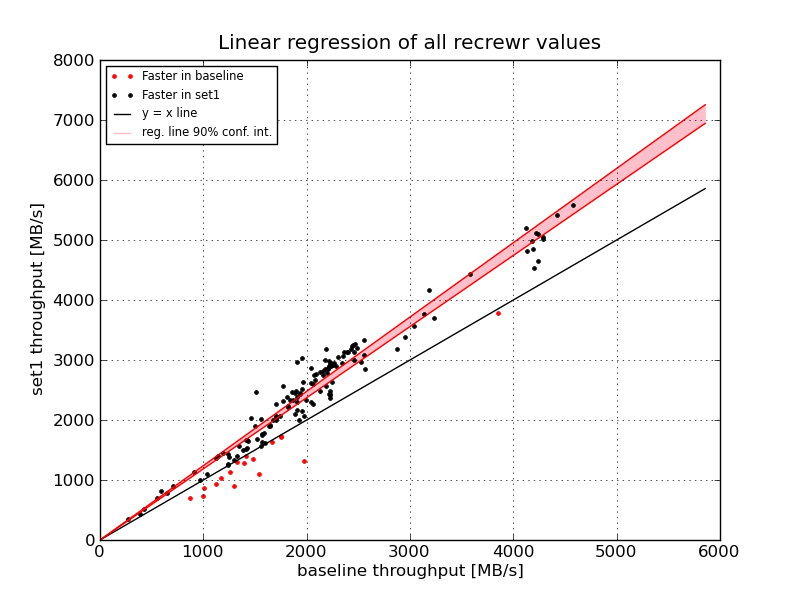
| Regression line |
|---|
| slope | 1.21219 |
| std. error | 0.01599 |
| ci. max 90% | 1.18574 |
| ci. min. 90% | 1.23863 |
Back on top
Strided
Read

| Strided
Read |
File size [kB] |
4 |
8 |
16 |
32 |
64 |
128 |
256 |
512 |
1024 |
2048 |
4096 |
8192 |
16384 |
32768 |
65536 |
131072 |
262144 |
524288 |
1048576 |
2097152 |
4194304 |
|---|
| baseline | mean val. |
60.98 |
97.53 |
146.09 |
270.06 |
449.48 |
558.56 |
557.78 |
630.39 |
715.47 |
769.29 |
792.08 |
804.39 |
812.46 |
1132.96 |
1095.74 |
1022.27 |
970.87 |
112.71 |
72.76 |
62.98 |
59.43 |
| standard dev. |
7.93 |
6.32 |
49.3 |
70.5 |
118.4 |
287.14 |
393.2 |
491.04 |
602.47 |
684.95 |
722.29 |
707.59 |
690.16 |
654.73 |
615.72 |
570.52 |
523.59 |
41.06 |
33.97 |
29.8 |
28.44 |
| ci. min. 90% |
53.42 |
93.86 |
123.67 |
242.8 |
408.96 |
469.48 |
445.39 |
499.58 |
564.56 |
606.89 |
629.08 |
651.73 |
669.58 |
968.97 |
941.52 |
879.37 |
839.73 |
102.42 |
64.25 |
55.52 |
52.31 |
| ci. max 90% |
68.54 |
101.19 |
168.51 |
297.31 |
489.99 |
647.64 |
670.16 |
761.2 |
866.37 |
931.69 |
955.07 |
957.04 |
955.33 |
1296.95 |
1249.96 |
1165.17 |
1102.02 |
122.99 |
81.27 |
70.45 |
66.56 |
| geom. mean |
60.55 |
97.35 |
133.86 |
256.33 |
432.7 |
450.29 |
397.01 |
422.6 |
456.89 |
481.38 |
501.36 |
527.03 |
548.41 |
970.92 |
944.22 |
894.88 |
871.86 |
103.9 |
63.85 |
55.07 |
51.87 |
| median |
62.11 |
96.44 |
164.74 |
275.19 |
449.03 |
526.78 |
537.78 |
562.36 |
515.73 |
475.48 |
503.66 |
609.07 |
592.22 |
987.47 |
929.68 |
896.63 |
967.79 |
119.04 |
75.42 |
64.66 |
59.62 |
| first quartile |
57.53 |
94.21 |
138.92 |
246.0 |
365.71 |
434.57 |
131.68 |
193.16 |
211.69 |
208.84 |
213.21 |
291.75 |
331.85 |
622.88 |
621.25 |
627.76 |
634.41 |
74.98 |
38.74 |
33.12 |
30.56 |
| third quartile |
66.12 |
100.19 |
179.65 |
321.46 |
559.17 |
773.53 |
780.99 |
968.22 |
1207.76 |
1327.96 |
1304.26 |
1023.56 |
1030.59 |
1478.94 |
1584.82 |
1009.47 |
1004.85 |
148.58 |
105.22 |
91.95 |
86.94 |
| minimum |
49.38 |
88.85 |
35.68 |
68.85 |
211.95 |
80.96 |
80.49 |
76.12 |
79.96 |
79.43 |
81.07 |
82.27 |
82.61 |
460.93 |
451.17 |
450.98 |
451.81 |
43.33 |
28.78 |
24.63 |
23.42 |
| maximum |
69.78 |
111.53 |
190.62 |
367.35 |
620.01 |
1097.28 |
1405.96 |
1917.3 |
2320.11 |
2224.62 |
2599.18 |
2493.86 |
2481.4 |
2551.43 |
2276.62 |
2162.46 |
2513.01 |
165.83 |
118.87 |
103.3 |
96.89 |
| set1 | mean val. |
52.21 |
76.88 |
147.37 |
285.35 |
419.97 |
478.07 |
554.32 |
686.35 |
748.76 |
800.53 |
851.56 |
808.52 |
818.21 |
1122.56 |
1073.73 |
1003.69 |
962.21 |
110.22 |
61.0 |
57.93 |
57.63 |
| standard dev. |
7.3 |
28.52 |
37.92 |
48.19 |
122.03 |
257.66 |
365.93 |
544.4 |
657.42 |
718.49 |
866.57 |
730.05 |
710.34 |
667.27 |
596.76 |
539.09 |
506.5 |
36.6 |
23.5 |
24.98 |
26.7 |
| ci. min. 90% |
45.24 |
60.35 |
130.12 |
266.72 |
378.22 |
398.14 |
449.73 |
541.32 |
584.09 |
630.17 |
656.01 |
651.02 |
671.16 |
955.42 |
924.25 |
868.67 |
835.35 |
101.05 |
55.12 |
51.67 |
50.94 |
| ci. max 90% |
59.17 |
93.41 |
164.61 |
303.98 |
461.73 |
558.0 |
658.91 |
831.38 |
913.43 |
970.88 |
1047.11 |
966.02 |
965.27 |
1289.69 |
1223.2 |
1138.72 |
1089.07 |
119.38 |
66.89 |
64.18 |
64.31 |
| geom. mean |
51.8 |
70.81 |
141.07 |
280.36 |
400.78 |
390.16 |
397.19 |
444.22 |
462.65 |
489.91 |
510.64 |
522.32 |
547.83 |
956.25 |
929.53 |
884.92 |
866.27 |
102.64 |
56.19 |
51.94 |
50.71 |
| median |
54.29 |
91.46 |
162.7 |
290.49 |
416.23 |
465.51 |
503.2 |
635.54 |
459.76 |
483.97 |
525.75 |
599.55 |
640.57 |
964.06 |
889.41 |
915.83 |
942.84 |
130.55 |
65.9 |
60.52 |
58.7 |
| first quartile |
45.92 |
48.32 |
152.48 |
261.85 |
314.02 |
347.95 |
131.17 |
194.01 |
205.94 |
208.14 |
209.4 |
296.35 |
328.78 |
626.58 |
628.11 |
630.16 |
632.96 |
78.31 |
38.5 |
33.04 |
30.73 |
| third quartile |
55.02 |
96.15 |
164.56 |
303.54 |
516.23 |
595.74 |
912.8 |
1020.52 |
1190.61 |
1287.12 |
1338.93 |
987.86 |
1001.63 |
1417.25 |
1519.32 |
1002.62 |
991.82 |
135.87 |
75.63 |
80.17 |
84.12 |
| minimum |
43.95 |
35.66 |
65.68 |
131.23 |
184.37 |
82.5 |
80.49 |
81.07 |
79.65 |
74.85 |
76.8 |
80.7 |
80.84 |
460.37 |
454.34 |
456.55 |
462.99 |
41.57 |
28.58 |
24.76 |
23.26 |
| maximum |
61.87 |
105.77 |
185.76 |
350.64 |
638.12 |
1088.17 |
1106.32 |
1823.92 |
2314.99 |
2424.59 |
3941.27 |
2616.17 |
2615.23 |
2561.22 |
2273.86 |
2048.2 |
2379.63 |
155.13 |
112.5 |
101.18 |
92.81 |
| baseline set1 difference |
-12.59 % |
-5.17 % |
-1.24 % |
5.56 % |
-7.3 % |
-11.63 % |
-6.43 % |
13.01 % |
-10.85 % |
1.79 % |
4.39 % |
-1.56 % |
8.16 % |
-2.37 % |
-4.33 % |
2.14 % |
-2.58 % |
9.67 % |
-12.62 % |
-6.4 % |
-1.56 % |
| ttest p-value |
0.1063 |
0.0383 |
0.9374 |
0.4281 |
0.3899 |
0.2578 |
0.9697 |
0.6306 |
0.8028 |
0.8244 |
0.6965 |
0.9749 |
0.9627 |
0.9407 |
0.8637 |
0.8742 |
0.9366 |
0.7619 |
0.0595 |
0.3856 |
0.7564 |
| ttest equality |
SAME |
DIFF |
SAME |
SAME |
SAME |
SAME |
SAME |
SAME |
SAME |
SAME |
SAME |
SAME |
SAME |
SAME |
SAME |
SAME |
SAME |
SAME |
DIFF |
SAME |
SAME |
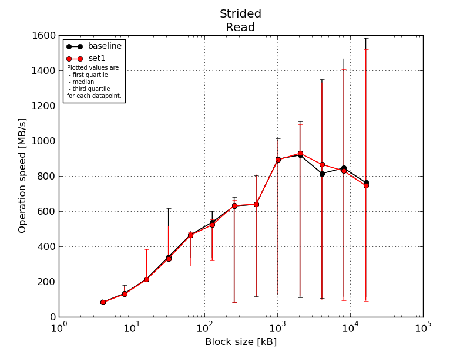
| Strided
Read |
Block size [kB] |
4 |
8 |
16 |
32 |
64 |
128 |
256 |
512 |
1024 |
2048 |
4096 |
8192 |
16384 |
|---|
| baseline | mean val. |
138.67 |
246.59 |
361.7 |
520.52 |
494.93 |
570.77 |
706.62 |
742.23 |
857.44 |
875.23 |
837.84 |
861.99 |
908.89 |
| standard dev. |
130.28 |
253.01 |
308.29 |
382.86 |
443.6 |
501.08 |
651.16 |
668.66 |
713.97 |
747.32 |
718.92 |
733.45 |
829.77 |
| ci. min. 90% |
111.7 |
192.0 |
292.13 |
429.74 |
414.9 |
477.53 |
581.37 |
608.98 |
709.64 |
714.0 |
675.61 |
688.09 |
701.06 |
| ci. max 90% |
165.64 |
301.17 |
431.27 |
611.29 |
574.95 |
664.01 |
831.86 |
875.47 |
1005.24 |
1036.45 |
1000.07 |
1035.9 |
1116.73 |
| geom. mean |
108.69 |
179.58 |
284.87 |
434.88 |
280.94 |
312.9 |
368.58 |
409.21 |
482.56 |
494.5 |
477.4 |
476.58 |
465.24 |
| median |
83.14 |
132.84 |
214.64 |
339.48 |
464.87 |
537.5 |
629.67 |
638.69 |
896.63 |
918.87 |
814.41 |
845.4 |
762.59 |
| first quartile |
81.41 |
124.01 |
210.25 |
331.29 |
336.17 |
336.77 |
81.73 |
117.5 |
126.67 |
111.32 |
105.33 |
114.1 |
112.43 |
| third quartile |
98.13 |
179.28 |
351.88 |
615.55 |
489.75 |
600.12 |
679.79 |
804.3 |
1012.18 |
1110.57 |
1348.67 |
1467.05 |
1584.82 |
| minimum |
49.38 |
68.57 |
35.68 |
128.65 |
23.42 |
23.57 |
30.55 |
45.35 |
59.5 |
75.74 |
86.12 |
92.63 |
96.19 |
| maximum |
620.01 |
1097.28 |
1405.96 |
1917.3 |
2320.11 |
2224.62 |
2599.18 |
2493.86 |
2481.4 |
2551.43 |
2276.62 |
2162.46 |
2513.01 |
| set1 | mean val. |
136.09 |
227.27 |
333.58 |
507.97 |
530.45 |
583.45 |
722.27 |
779.47 |
867.36 |
886.94 |
834.56 |
828.47 |
876.75 |
| standard dev. |
129.32 |
227.9 |
244.69 |
390.03 |
518.33 |
538.26 |
730.14 |
737.35 |
729.88 |
761.5 |
716.36 |
705.7 |
809.21 |
| ci. min. 90% |
109.32 |
178.1 |
278.36 |
415.5 |
436.94 |
483.29 |
581.84 |
632.54 |
716.27 |
722.65 |
672.9 |
661.15 |
674.06 |
| ci. max 90% |
162.87 |
276.43 |
388.8 |
600.45 |
623.95 |
683.61 |
862.71 |
926.41 |
1018.46 |
1051.22 |
996.22 |
995.8 |
1079.44 |
| geom. mean |
105.72 |
166.77 |
277.8 |
421.89 |
286.05 |
314.4 |
369.18 |
419.07 |
479.18 |
487.54 |
461.03 |
444.52 |
428.23 |
| median |
81.9 |
129.22 |
212.18 |
330.27 |
462.43 |
522.91 |
631.67 |
640.58 |
891.84 |
929.03 |
865.88 |
828.77 |
745.75 |
| first quartile |
80.49 |
121.19 |
205.88 |
321.63 |
289.4 |
319.25 |
84.33 |
112.62 |
128.25 |
120.74 |
97.88 |
91.83 |
91.59 |
| third quartile |
95.31 |
171.25 |
384.81 |
515.47 |
478.63 |
551.86 |
661.7 |
807.87 |
1007.04 |
1094.52 |
1330.9 |
1406.99 |
1519.32 |
| minimum |
43.95 |
35.66 |
65.68 |
201.06 |
23.26 |
23.45 |
30.66 |
44.96 |
58.37 |
70.91 |
74.94 |
74.2 |
75.28 |
| maximum |
589.34 |
1088.17 |
1106.32 |
1823.92 |
2314.99 |
2424.59 |
3941.27 |
3007.31 |
2615.23 |
2561.22 |
2273.86 |
2048.2 |
2379.63 |
| baseline set1 difference |
-1.49 % |
-2.73 % |
-1.15 % |
-2.71 % |
-0.53 % |
-2.71 % |
0.32 % |
0.3 % |
-0.53 % |
1.11 % |
6.32 % |
-1.97 % |
-2.21 % |
| ttest p-value |
0.9101 |
0.6611 |
0.5973 |
0.8714 |
0.6318 |
0.8777 |
0.89 |
0.7547 |
0.9377 |
0.9324 |
0.9809 |
0.8164 |
0.8528 |
| ttest equality |
SAME |
SAME |
SAME |
SAME |
SAME |
SAME |
SAME |
SAME |
SAME |
SAME |
SAME |
SAME |
SAME |
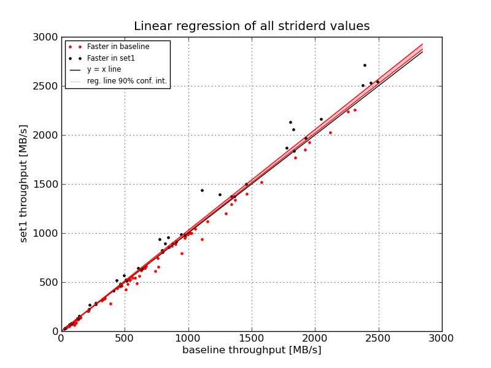
| Regression line |
|---|
| slope | 1.0184 |
| std. error | 0.00566 |
| ci. max 90% | 1.00904 |
| ci. min. 90% | 1.02776 |
Back on top
Fwrite
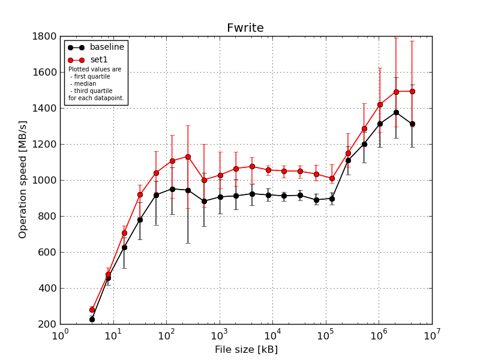
| Fwrite |
File size [kB] |
4 |
8 |
16 |
32 |
64 |
128 |
256 |
512 |
1024 |
2048 |
4096 |
8192 |
16384 |
32768 |
65536 |
131072 |
262144 |
524288 |
1048576 |
2097152 |
4194304 |
|---|
| baseline | mean val. |
225.78 |
435.34 |
585.66 |
739.03 |
838.52 |
909.51 |
898.55 |
904.54 |
912.03 |
920.95 |
921.15 |
914.54 |
906.54 |
929.64 |
897.01 |
902.5 |
1116.13 |
1193.63 |
1312.7 |
1395.45 |
1346.35 |
| standard dev. |
31.42 |
61.47 |
117.26 |
204.47 |
250.44 |
218.42 |
286.24 |
201.42 |
163.25 |
137.96 |
123.71 |
100.34 |
84.97 |
66.66 |
36.69 |
51.74 |
121.19 |
109.31 |
141.59 |
154.6 |
153.42 |
| ci. min. 90% |
195.82 |
399.7 |
532.34 |
659.98 |
752.83 |
841.76 |
816.73 |
850.88 |
871.14 |
888.24 |
893.24 |
892.9 |
888.95 |
912.95 |
887.82 |
889.54 |
1085.78 |
1166.25 |
1277.24 |
1356.73 |
1307.93 |
| ci. max 90% |
255.73 |
470.97 |
638.99 |
818.09 |
924.22 |
977.27 |
980.36 |
958.2 |
952.92 |
953.66 |
949.07 |
936.19 |
924.13 |
946.34 |
906.21 |
915.46 |
1146.48 |
1221.0 |
1348.16 |
1434.18 |
1384.78 |
| geom. mean |
223.93 |
430.97 |
573.77 |
698.94 |
785.42 |
879.34 |
850.64 |
883.73 |
897.83 |
910.85 |
913.04 |
909.06 |
902.54 |
927.48 |
896.29 |
901.09 |
1109.78 |
1188.8 |
1305.34 |
1387.15 |
1337.9 |
| median |
228.17 |
456.34 |
625.31 |
781.54 |
917.21 |
951.01 |
943.98 |
882.58 |
906.52 |
911.78 |
924.42 |
917.07 |
912.87 |
915.18 |
889.98 |
898.22 |
1108.51 |
1200.57 |
1313.08 |
1375.65 |
1311.74 |
| first quartile |
216.13 |
417.46 |
510.97 |
669.6 |
751.55 |
809.35 |
650.98 |
743.92 |
812.41 |
835.33 |
858.9 |
883.03 |
883.73 |
887.63 |
862.96 |
864.87 |
1030.7 |
1097.01 |
1183.04 |
1233.91 |
1183.64 |
| third quartile |
245.25 |
456.34 |
680.52 |
875.06 |
993.7 |
1070.52 |
1116.53 |
1038.45 |
1002.99 |
1003.54 |
977.05 |
953.42 |
933.21 |
944.84 |
924.98 |
931.38 |
1185.23 |
1265.66 |
1427.95 |
1570.09 |
1531.4 |
| minimum |
178.46 |
301.16 |
381.45 |
187.03 |
265.92 |
425.28 |
381.74 |
623.45 |
575.37 |
658.56 |
689.77 |
682.64 |
695.02 |
868.74 |
842.24 |
831.85 |
921.63 |
1021.99 |
1118.86 |
1201.98 |
1166.4 |
| maximum |
260.87 |
521.74 |
746.38 |
979.57 |
1155.81 |
1288.79 |
1460.81 |
1437.58 |
1394.94 |
1266.62 |
1235.0 |
1159.42 |
1127.71 |
1117.59 |
971.96 |
1029.44 |
1380.17 |
1410.13 |
1602.47 |
1644.89 |
1565.93 |
| set1 | mean val. |
287.86 |
478.04 |
691.13 |
877.93 |
1009.03 |
1061.23 |
1072.61 |
1034.1 |
1032.4 |
1051.17 |
1076.76 |
1039.92 |
1030.09 |
1057.55 |
1037.63 |
1027.15 |
1158.52 |
1318.94 |
1443.85 |
1539.13 |
1521.11 |
| standard dev. |
12.81 |
48.59 |
60.84 |
106.54 |
223.52 |
296.45 |
291.41 |
239.0 |
141.33 |
176.59 |
210.6 |
109.41 |
98.46 |
58.36 |
44.35 |
54.02 |
102.29 |
144.55 |
182.13 |
229.23 |
210.93 |
| ci. min. 90% |
275.64 |
449.88 |
663.46 |
836.74 |
932.55 |
969.26 |
989.32 |
970.43 |
997.0 |
1009.3 |
1029.23 |
1016.32 |
1009.71 |
1042.93 |
1026.53 |
1013.62 |
1132.9 |
1282.73 |
1398.23 |
1481.71 |
1468.28 |
| ci. max 90% |
300.07 |
506.21 |
718.8 |
919.12 |
1085.52 |
1153.19 |
1155.9 |
1097.77 |
1067.8 |
1093.04 |
1124.28 |
1063.53 |
1050.47 |
1072.16 |
1048.74 |
1040.68 |
1184.14 |
1355.15 |
1489.46 |
1596.54 |
1573.94 |
| geom. mean |
287.63 |
475.78 |
688.57 |
871.51 |
971.94 |
1007.78 |
1029.48 |
1007.05 |
1022.25 |
1035.93 |
1059.18 |
1033.79 |
1024.99 |
1056.03 |
1036.7 |
1025.77 |
1154.13 |
1311.37 |
1432.81 |
1522.66 |
1506.91 |
| median |
278.61 |
476.64 |
706.16 |
918.55 |
1041.06 |
1106.55 |
1131.39 |
1000.91 |
1027.81 |
1064.64 |
1075.27 |
1056.46 |
1050.83 |
1049.04 |
1033.61 |
1009.73 |
1150.58 |
1285.78 |
1419.97 |
1491.56 |
1493.2 |
| first quartile |
278.61 |
456.34 |
637.71 |
793.43 |
933.54 |
901.46 |
843.04 |
849.73 |
952.43 |
965.17 |
981.87 |
1027.24 |
1012.34 |
1011.48 |
995.89 |
982.83 |
1074.39 |
1185.63 |
1266.7 |
1297.05 |
1296.62 |
| third quartile |
298.95 |
513.93 |
746.38 |
974.12 |
1160.93 |
1248.88 |
1302.92 |
1199.72 |
1156.15 |
1156.06 |
1126.61 |
1079.45 |
1080.5 |
1080.87 |
1084.56 |
1088.03 |
1259.13 |
1425.69 |
1621.7 |
1788.67 |
1774.39 |
| minimum |
278.61 |
391.0 |
602.32 |
709.24 |
259.34 |
360.38 |
520.69 |
564.39 |
700.71 |
681.68 |
710.84 |
747.03 |
765.15 |
984.49 |
963.14 |
948.4 |
994.97 |
1125.95 |
1216.96 |
1272.06 |
1260.42 |
| maximum |
304.5 |
557.22 |
782.0 |
1002.04 |
1249.46 |
1453.1 |
1551.59 |
1538.85 |
1269.15 |
1392.81 |
1962.75 |
1265.02 |
1198.14 |
1207.64 |
1095.93 |
1107.68 |
1373.54 |
1583.46 |
1742.72 |
1912.01 |
1803.66 |
| baseline set1 difference |
22.11 % |
4.45 % |
12.93 % |
17.53 % |
13.5 % |
16.35 % |
19.85 % |
13.41 % |
13.38 % |
16.76 % |
16.32 % |
15.2 % |
15.11 % |
14.63 % |
16.14 % |
12.41 % |
3.8 % |
7.1 % |
8.14 % |
8.43 % |
13.83 % |
| ttest p-value |
0.0035 |
0.1019 |
0.0045 |
0.0104 |
0.0144 |
0.0278 |
0.014 |
0.0105 |
0.0003 |
0.0001 |
0.0 |
0.0 |
0.0 |
0.0 |
0.0 |
0.0 |
0.0764 |
0.0 |
0.0003 |
0.0008 |
0.0 |
| ttest equality |
DIFF |
SAME |
DIFF |
DIFF |
DIFF |
DIFF |
DIFF |
DIFF |
DIFF |
DIFF |
DIFF |
DIFF |
DIFF |
DIFF |
DIFF |
DIFF |
DIFF |
DIFF |
DIFF |
DIFF |
DIFF |
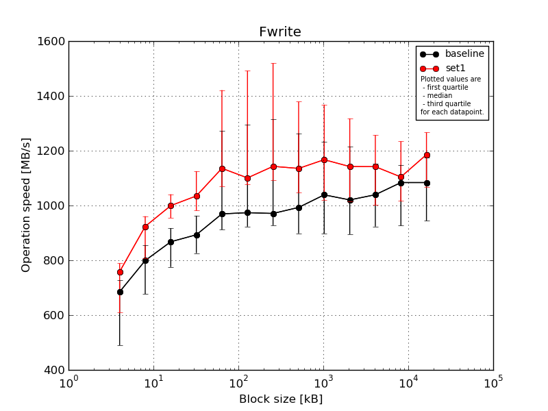
| Fwrite |
Block size [kB] |
4 |
8 |
16 |
32 |
64 |
128 |
256 |
512 |
1024 |
2048 |
4096 |
8192 |
16384 |
|---|
| baseline | mean val. |
613.5 |
752.13 |
839.46 |
887.38 |
1082.4 |
1108.15 |
1115.14 |
1091.49 |
1072.08 |
1054.89 |
1036.71 |
1037.98 |
1056.54 |
| standard dev. |
174.1 |
165.91 |
125.83 |
187.35 |
264.36 |
253.74 |
267.6 |
210.73 |
179.82 |
160.68 |
131.86 |
128.21 |
121.43 |
| ci. min. 90% |
577.46 |
716.34 |
811.06 |
842.96 |
1034.71 |
1060.93 |
1063.67 |
1049.49 |
1034.86 |
1020.23 |
1006.95 |
1007.58 |
1026.13 |
| ci. max 90% |
649.54 |
787.92 |
867.85 |
931.8 |
1130.09 |
1155.36 |
1166.61 |
1133.48 |
1109.31 |
1089.56 |
1066.46 |
1068.38 |
1086.96 |
| geom. mean |
580.76 |
729.16 |
829.29 |
858.17 |
1048.63 |
1081.3 |
1085.59 |
1072.17 |
1057.65 |
1042.98 |
1028.36 |
1030.13 |
1049.62 |
| median |
684.92 |
799.16 |
867.68 |
893.16 |
969.47 |
973.79 |
970.99 |
992.95 |
1038.93 |
1020.42 |
1039.32 |
1083.75 |
1083.73 |
| first quartile |
490.03 |
676.98 |
775.59 |
826.02 |
912.18 |
923.01 |
927.74 |
898.34 |
897.97 |
895.21 |
923.28 |
926.38 |
944.26 |
| third quartile |
726.55 |
855.07 |
917.52 |
962.69 |
1271.84 |
1295.39 |
1314.17 |
1263.58 |
1232.6 |
1215.12 |
1152.73 |
1147.96 |
1174.87 |
| minimum |
178.46 |
301.16 |
501.02 |
187.03 |
282.85 |
627.96 |
654.62 |
755.51 |
858.69 |
845.32 |
831.85 |
840.52 |
866.04 |
| maximum |
894.38 |
992.21 |
1041.49 |
1155.81 |
1607.43 |
1595.76 |
1644.89 |
1469.77 |
1392.69 |
1334.64 |
1241.5 |
1233.91 |
1233.62 |
| set1 | mean val. |
694.87 |
858.76 |
968.95 |
1025.12 |
1256.58 |
1256.15 |
1295.01 |
1234.49 |
1208.98 |
1176.42 |
1132.84 |
1125.19 |
1168.01 |
| standard dev. |
162.18 |
185.99 |
132.05 |
166.94 |
277.1 |
281.82 |
303.17 |
220.89 |
181.16 |
158.06 |
131.79 |
116.3 |
104.56 |
| ci. min. 90% |
661.3 |
818.64 |
939.15 |
985.54 |
1206.59 |
1203.71 |
1236.7 |
1190.48 |
1171.48 |
1142.32 |
1103.1 |
1097.62 |
1141.82 |
| ci. max 90% |
728.44 |
898.89 |
998.74 |
1064.7 |
1306.57 |
1308.59 |
1353.32 |
1278.51 |
1246.48 |
1210.52 |
1162.58 |
1152.76 |
1194.2 |
| geom. mean |
669.68 |
830.73 |
958.52 |
1008.9 |
1228.49 |
1227.35 |
1262.27 |
1216.31 |
1195.89 |
1166.11 |
1125.12 |
1119.29 |
1163.32 |
| median |
758.49 |
923.7 |
999.5 |
1034.98 |
1135.78 |
1100.7 |
1142.92 |
1135.31 |
1167.21 |
1142.09 |
1141.71 |
1104.16 |
1185.71 |
| first quartile |
610.06 |
806.87 |
954.71 |
981.48 |
1069.95 |
1076.67 |
1093.5 |
1047.93 |
1021.18 |
1014.68 |
1001.82 |
1016.34 |
1068.25 |
| third quartile |
788.94 |
960.94 |
1041.06 |
1125.08 |
1421.24 |
1491.99 |
1519.67 |
1378.77 |
1368.05 |
1317.56 |
1256.97 |
1234.17 |
1266.7 |
| minimum |
278.61 |
259.34 |
520.69 |
503.73 |
681.68 |
759.89 |
694.51 |
948.59 |
994.68 |
978.15 |
819.0 |
959.27 |
992.55 |
| maximum |
907.54 |
1086.83 |
1157.62 |
1249.46 |
1837.44 |
1838.23 |
1962.75 |
1813.2 |
1508.64 |
1436.5 |
1334.5 |
1289.42 |
1304.94 |
| baseline set1 difference |
10.74 % |
15.58 % |
15.19 % |
15.88 % |
17.15 % |
13.03 % |
17.71 % |
14.34 % |
12.35 % |
11.92 % |
9.85 % |
1.88 % |
9.41 % |
| ttest p-value |
0.0067 |
0.0012 |
0.0 |
0.0002 |
0.0 |
0.0006 |
0.0002 |
0.0001 |
0.0 |
0.0001 |
0.0002 |
0.0006 |
0.0 |
| ttest equality |
DIFF |
DIFF |
DIFF |
DIFF |
DIFF |
DIFF |
DIFF |
DIFF |
DIFF |
DIFF |
DIFF |
DIFF |
DIFF |
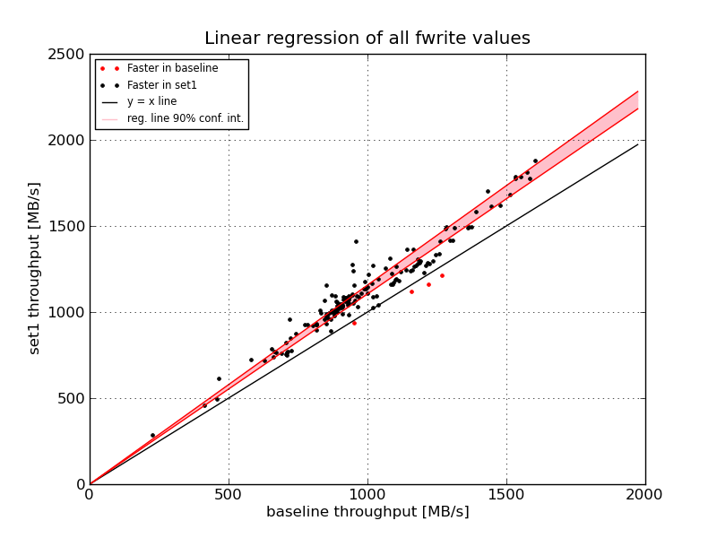
| Regression line |
|---|
| slope | 1.1307 |
| std. error | 0.01539 |
| ci. max 90% | 1.10524 |
| ci. min. 90% | 1.15616 |
Back on top
Frewrite
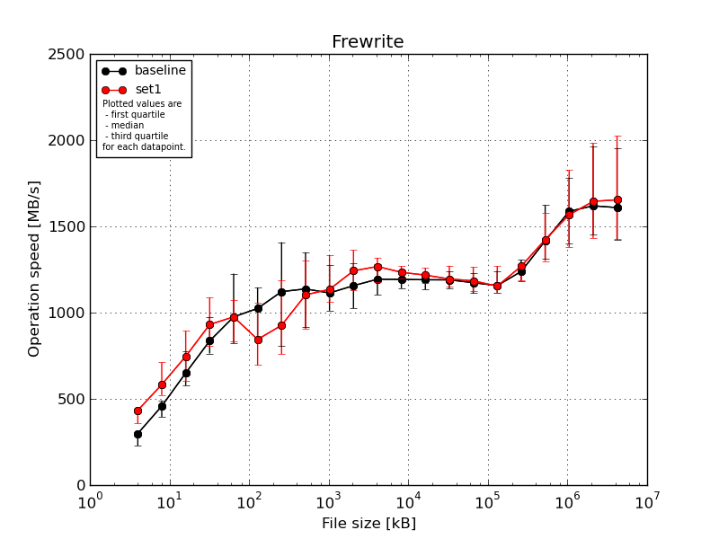
| Frewrite |
File size [kB] |
4 |
8 |
16 |
32 |
64 |
128 |
256 |
512 |
1024 |
2048 |
4096 |
8192 |
16384 |
32768 |
65536 |
131072 |
262144 |
524288 |
1048576 |
2097152 |
4194304 |
|---|
| baseline | mean val. |
271.75 |
446.75 |
649.69 |
830.35 |
991.6 |
1001.44 |
1140.99 |
1151.47 |
1136.38 |
1162.64 |
1184.85 |
1182.88 |
1176.8 |
1201.08 |
1171.36 |
1201.21 |
1247.64 |
1457.08 |
1591.01 |
1695.63 |
1666.29 |
| standard dev. |
39.84 |
62.49 |
135.11 |
218.96 |
306.91 |
310.23 |
363.54 |
318.97 |
230.18 |
191.94 |
145.2 |
116.56 |
95.54 |
74.47 |
59.25 |
139.92 |
108.16 |
166.79 |
195.57 |
239.89 |
235.97 |
| ci. min. 90% |
233.76 |
410.52 |
588.25 |
745.69 |
886.58 |
905.21 |
1037.09 |
1066.5 |
1078.73 |
1117.13 |
1152.08 |
1157.74 |
1157.02 |
1182.43 |
1156.51 |
1166.17 |
1220.55 |
1415.3 |
1542.02 |
1635.55 |
1607.18 |
| ci. max 90% |
309.73 |
482.98 |
711.14 |
915.01 |
1096.62 |
1097.68 |
1244.9 |
1236.45 |
1194.03 |
1208.15 |
1217.62 |
1208.03 |
1196.58 |
1219.73 |
1186.2 |
1236.26 |
1274.74 |
1498.85 |
1639.99 |
1755.72 |
1725.39 |
| geom. mean |
269.31 |
442.72 |
633.97 |
788.3 |
929.31 |
949.51 |
1080.73 |
1109.04 |
1114.09 |
1146.94 |
1175.8 |
1177.05 |
1172.81 |
1198.89 |
1169.89 |
1194.28 |
1243.41 |
1447.99 |
1579.47 |
1679.33 |
1650.19 |
| median |
298.95 |
457.76 |
650.12 |
836.02 |
975.22 |
1024.39 |
1121.7 |
1137.48 |
1113.79 |
1156.3 |
1193.7 |
1192.63 |
1190.49 |
1190.09 |
1173.69 |
1156.75 |
1238.63 |
1415.85 |
1587.07 |
1619.35 |
1608.95 |
| first quartile |
228.17 |
395.9 |
578.41 |
762.91 |
822.27 |
836.85 |
805.34 |
914.51 |
1012.19 |
1025.31 |
1102.37 |
1140.9 |
1134.02 |
1140.05 |
1112.04 |
1115.8 |
1183.16 |
1312.32 |
1402.64 |
1452.48 |
1422.01 |
| third quartile |
298.95 |
490.5 |
777.39 |
974.12 |
1226.08 |
1145.04 |
1407.94 |
1349.65 |
1275.33 |
1284.19 |
1282.04 |
1243.08 |
1223.81 |
1240.27 |
1229.92 |
1241.15 |
1306.12 |
1624.13 |
1782.61 |
1964.12 |
1954.18 |
| minimum |
228.17 |
356.93 |
319.99 |
193.95 |
276.58 |
394.26 |
505.14 |
650.32 |
688.74 |
785.54 |
867.14 |
879.04 |
918.38 |
1107.54 |
1082.67 |
1064.87 |
1067.56 |
1233.54 |
1351.17 |
1418.67 |
1390.76 |
| maximum |
304.5 |
521.74 |
821.19 |
1112.61 |
1426.2 |
1665.43 |
1811.62 |
1872.78 |
1815.08 |
1595.15 |
1485.39 |
1439.87 |
1385.29 |
1373.45 |
1267.4 |
1704.25 |
1723.71 |
1744.46 |
1942.18 |
2049.78 |
1992.89 |
| set1 | mean val. |
396.06 |
602.97 |
697.4 |
947.61 |
937.68 |
894.99 |
1015.81 |
1148.73 |
1170.53 |
1224.59 |
1265.33 |
1218.82 |
1204.84 |
1218.79 |
1186.86 |
1176.89 |
1241.48 |
1449.89 |
1603.01 |
1697.29 |
1712.11 |
| standard dev. |
52.59 |
99.8 |
281.92 |
215.86 |
318.12 |
328.67 |
348.68 |
304.88 |
216.61 |
175.83 |
220.56 |
115.02 |
95.55 |
74.91 |
67.09 |
76.34 |
81.51 |
162.49 |
217.59 |
249.36 |
265.7 |
| ci. min. 90% |
345.92 |
545.11 |
569.19 |
864.15 |
828.83 |
793.03 |
916.15 |
1067.51 |
1116.28 |
1182.91 |
1215.56 |
1194.0 |
1185.06 |
1200.03 |
1170.06 |
1157.77 |
1221.07 |
1409.19 |
1548.51 |
1634.83 |
1645.56 |
| ci. max 90% |
446.2 |
660.82 |
825.61 |
1031.07 |
1046.54 |
996.95 |
1115.47 |
1229.95 |
1224.79 |
1266.28 |
1315.11 |
1243.63 |
1224.62 |
1237.56 |
1203.67 |
1196.01 |
1261.9 |
1490.59 |
1657.51 |
1759.75 |
1778.66 |
| geom. mean |
393.11 |
595.54 |
592.61 |
924.25 |
860.07 |
836.03 |
962.66 |
1109.36 |
1149.93 |
1211.89 |
1248.45 |
1213.09 |
1200.82 |
1216.58 |
1185.02 |
1174.49 |
1238.91 |
1441.16 |
1588.7 |
1679.59 |
1692.11 |
| median |
433.37 |
583.12 |
746.38 |
931.06 |
975.22 |
844.56 |
926.46 |
1102.72 |
1135.19 |
1242.24 |
1267.47 |
1233.54 |
1217.66 |
1195.01 |
1184.62 |
1153.65 |
1268.88 |
1423.15 |
1566.89 |
1644.98 |
1654.2 |
| first quartile |
357.68 |
521.74 |
602.32 |
805.87 |
832.72 |
695.44 |
760.06 |
905.5 |
1064.06 |
1129.74 |
1177.91 |
1198.59 |
1173.97 |
1151.86 |
1123.97 |
1115.62 |
1187.19 |
1298.89 |
1378.47 |
1432.78 |
1429.48 |
| third quartile |
433.37 |
711.55 |
893.86 |
1087.59 |
1075.22 |
1056.93 |
1189.83 |
1303.34 |
1331.61 |
1362.62 |
1318.24 |
1269.87 |
1259.84 |
1271.81 |
1264.89 |
1269.34 |
1282.15 |
1576.0 |
1825.52 |
1983.42 |
2024.76 |
| minimum |
322.48 |
483.26 |
102.91 |
624.73 |
241.21 |
360.14 |
534.22 |
516.56 |
678.38 |
852.52 |
868.44 |
905.19 |
943.56 |
1118.03 |
1091.42 |
1082.0 |
1097.03 |
1231.31 |
1327.16 |
1396.18 |
1388.93 |
| maximum |
433.37 |
715.37 |
1043.47 |
1313.27 |
1525.82 |
1714.45 |
1771.82 |
1866.12 |
1633.42 |
1606.46 |
2196.6 |
1457.76 |
1372.32 |
1375.04 |
1280.2 |
1292.46 |
1509.0 |
1792.28 |
1969.28 |
2070.49 |
2082.78 |
| baseline set1 difference |
44.97 % |
27.38 % |
14.81 % |
11.37 % |
0.0 % |
-17.55 % |
-17.41 % |
-3.06 % |
1.92 % |
7.43 % |
6.18 % |
3.43 % |
2.28 % |
0.41 % |
0.93 % |
-0.27 % |
2.44 % |
0.52 % |
-1.27 % |
1.58 % |
2.81 % |
| ttest p-value |
0.0029 |
0.0005 |
0.5592 |
0.0963 |
0.5448 |
0.2021 |
0.1461 |
0.9687 |
0.4705 |
0.0956 |
0.0258 |
0.0918 |
0.0968 |
0.2636 |
0.2483 |
0.3088 |
0.7609 |
0.8364 |
0.7837 |
0.9745 |
0.3894 |
| ttest equality |
DIFF |
DIFF |
SAME |
DIFF |
SAME |
SAME |
SAME |
SAME |
SAME |
DIFF |
DIFF |
DIFF |
DIFF |
SAME |
SAME |
SAME |
SAME |
SAME |
SAME |
SAME |
SAME |
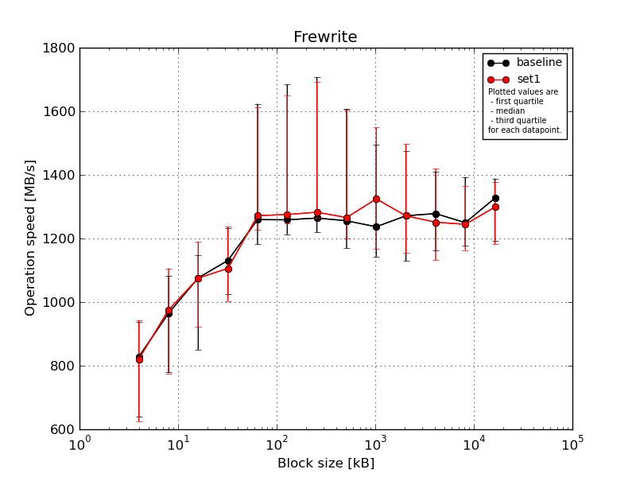
| Frewrite |
Block size [kB] |
4 |
8 |
16 |
32 |
64 |
128 |
256 |
512 |
1024 |
2048 |
4096 |
8192 |
16384 |
|---|
| baseline | mean val. |
757.21 |
903.35 |
1020.29 |
1123.88 |
1358.29 |
1403.49 |
1415.66 |
1359.49 |
1315.1 |
1307.14 |
1271.21 |
1269.55 |
1293.51 |
| standard dev. |
249.25 |
262.37 |
224.98 |
184.3 |
343.14 |
314.77 |
334.62 |
238.23 |
193.63 |
170.56 |
130.53 |
122.12 |
111.69 |
| ci. min. 90% |
705.61 |
846.75 |
969.52 |
1080.18 |
1296.39 |
1344.92 |
1351.3 |
1312.02 |
1275.02 |
1270.35 |
1241.76 |
1240.59 |
1265.54 |
| ci. max 90% |
808.81 |
959.96 |
1071.06 |
1167.57 |
1420.19 |
1462.06 |
1480.02 |
1406.97 |
1355.19 |
1343.94 |
1300.67 |
1298.5 |
1321.49 |
| geom. mean |
704.83 |
853.73 |
990.72 |
1107.05 |
1314.05 |
1371.3 |
1377.25 |
1339.95 |
1301.68 |
1296.28 |
1264.55 |
1263.73 |
1288.69 |
| median |
828.52 |
964.58 |
1076.07 |
1130.95 |
1259.29 |
1258.75 |
1264.45 |
1255.71 |
1236.93 |
1271.51 |
1278.41 |
1249.69 |
1326.97 |
| first quartile |
639.98 |
779.69 |
850.19 |
1024.49 |
1182.03 |
1212.97 |
1219.55 |
1169.12 |
1143.14 |
1128.91 |
1162.81 |
1177.7 |
1193.32 |
| third quartile |
937.86 |
1082.38 |
1148.66 |
1232.11 |
1623.67 |
1684.26 |
1707.98 |
1607.72 |
1496.23 |
1473.78 |
1410.44 |
1393.28 |
1388.53 |
| minimum |
228.17 |
193.95 |
319.99 |
536.19 |
536.74 |
880.12 |
682.75 |
946.88 |
1075.24 |
1100.38 |
1064.87 |
1067.56 |
1089.59 |
| maximum |
1178.97 |
1408.61 |
1470.85 |
1537.72 |
2041.17 |
1992.89 |
2049.78 |
1815.08 |
1703.81 |
1571.24 |
1458.29 |
1441.22 |
1453.07 |
| set1 | mean val. |
760.85 |
912.34 |
1033.08 |
1101.86 |
1394.96 |
1391.19 |
1459.11 |
1392.52 |
1362.45 |
1328.07 |
1278.42 |
1258.74 |
1281.47 |
| standard dev. |
222.36 |
241.19 |
236.74 |
170.59 |
324.26 |
341.74 |
329.46 |
237.1 |
190.65 |
178.38 |
136.47 |
116.46 |
110.26 |
| ci. min. 90% |
714.82 |
860.31 |
979.66 |
1061.42 |
1336.46 |
1327.6 |
1395.74 |
1345.27 |
1322.98 |
1289.58 |
1247.62 |
1231.12 |
1253.85 |
| ci. max 90% |
806.88 |
964.37 |
1086.5 |
1142.31 |
1453.45 |
1454.78 |
1522.47 |
1439.76 |
1401.91 |
1366.55 |
1309.22 |
1286.35 |
1309.08 |
| geom. mean |
719.57 |
865.03 |
986.25 |
1087.54 |
1360.92 |
1347.54 |
1423.96 |
1373.79 |
1349.63 |
1316.46 |
1271.18 |
1253.4 |
1276.74 |
| median |
821.16 |
975.46 |
1075.22 |
1106.17 |
1272.01 |
1275.44 |
1282.57 |
1265.9 |
1324.5 |
1271.28 |
1251.24 |
1244.56 |
1298.89 |
| first quartile |
624.73 |
776.04 |
923.45 |
1003.15 |
1228.48 |
1247.25 |
1264.11 |
1199.54 |
1168.31 |
1155.39 |
1131.51 |
1163.48 |
1182.08 |
| third quartile |
943.56 |
1106.18 |
1189.76 |
1237.26 |
1612.92 |
1648.98 |
1692.9 |
1606.13 |
1548.84 |
1497.11 |
1419.89 |
1366.09 |
1378.47 |
| minimum |
241.21 |
105.57 |
102.91 |
584.62 |
778.56 |
439.91 |
679.21 |
1084.47 |
1143.33 |
1116.37 |
1083.62 |
1082.0 |
1097.03 |
| maximum |
1136.29 |
1231.59 |
1444.51 |
1525.82 |
2082.78 |
2056.59 |
2196.6 |
1956.11 |
1672.28 |
1602.32 |
1457.76 |
1420.55 |
1425.93 |
| baseline set1 difference |
-0.89 % |
1.13 % |
-0.08 % |
-2.19 % |
1.01 % |
1.33 % |
1.43 % |
0.81 % |
7.08 % |
-0.02 % |
-2.13 % |
-0.41 % |
-2.12 % |
| ttest p-value |
0.93 |
0.8455 |
0.7721 |
0.5368 |
0.475 |
0.8131 |
0.4243 |
0.4125 |
0.1625 |
0.5126 |
0.7777 |
0.6515 |
0.6079 |
| ttest equality |
SAME |
SAME |
SAME |
SAME |
SAME |
SAME |
SAME |
SAME |
SAME |
SAME |
SAME |
SAME |
SAME |
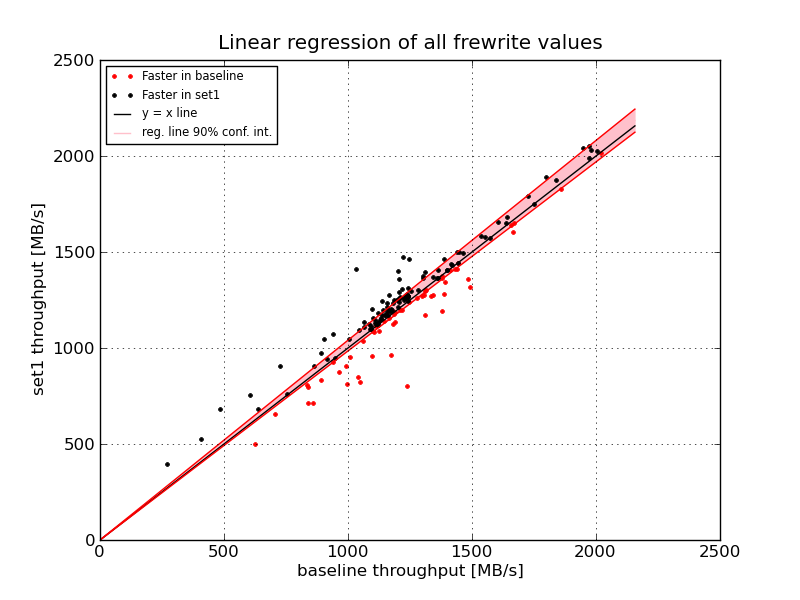
| Regression line |
|---|
| slope | 1.01258 |
| std. error | 0.01684 |
| ci. max 90% | 0.98473 |
| ci. min. 90% | 1.04044 |
Back on top
Fread
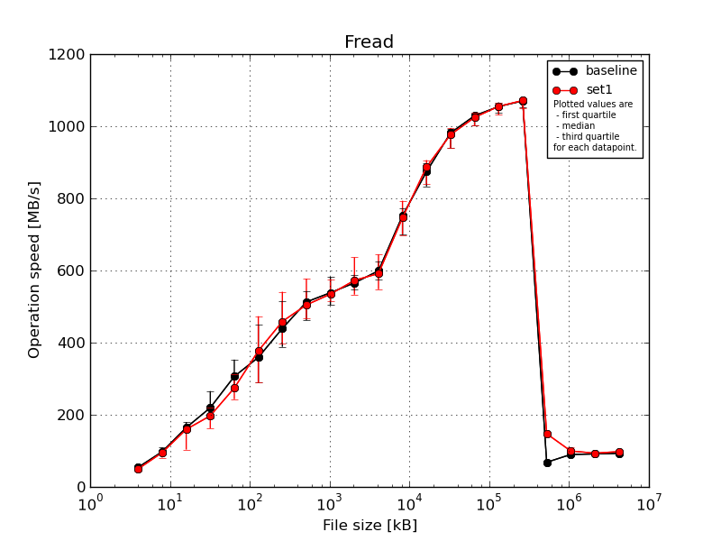
| Fread |
File size [kB] |
4 |
8 |
16 |
32 |
64 |
128 |
256 |
512 |
1024 |
2048 |
4096 |
8192 |
16384 |
32768 |
65536 |
131072 |
262144 |
524288 |
1048576 |
2097152 |
4194304 |
|---|
| baseline | mean val. |
53.83 |
102.86 |
162.88 |
225.3 |
307.83 |
364.66 |
453.0 |
502.52 |
539.42 |
565.63 |
594.65 |
738.71 |
860.79 |
962.85 |
1017.06 |
1052.62 |
1066.44 |
69.87 |
89.68 |
91.76 |
93.08 |
| standard dev. |
9.22 |
12.24 |
28.72 |
45.11 |
64.13 |
102.07 |
90.8 |
69.04 |
55.3 |
36.59 |
49.28 |
53.84 |
51.25 |
44.42 |
30.32 |
25.5 |
22.47 |
5.65 |
1.74 |
2.03 |
0.45 |
| ci. min. 90% |
45.04 |
95.77 |
149.82 |
207.86 |
285.89 |
333.0 |
427.05 |
484.13 |
525.57 |
556.96 |
583.52 |
727.1 |
850.19 |
951.72 |
1009.46 |
1046.24 |
1060.81 |
68.45 |
89.25 |
91.25 |
92.96 |
| ci. max 90% |
62.63 |
109.95 |
175.95 |
242.74 |
329.78 |
396.33 |
478.95 |
520.91 |
553.27 |
574.31 |
605.77 |
750.33 |
871.4 |
973.98 |
1024.65 |
1059.01 |
1072.07 |
71.28 |
90.12 |
92.27 |
93.19 |
| geom. mean |
53.15 |
102.23 |
159.3 |
220.92 |
300.46 |
350.06 |
444.13 |
497.34 |
536.6 |
564.45 |
592.55 |
736.72 |
859.24 |
961.81 |
1016.61 |
1052.32 |
1066.21 |
69.66 |
89.67 |
91.74 |
93.08 |
| median |
54.29 |
97.74 |
164.33 |
219.55 |
306.31 |
359.15 |
439.32 |
512.78 |
538.5 |
565.68 |
599.15 |
752.03 |
874.03 |
981.45 |
1029.19 |
1054.63 |
1070.15 |
68.27 |
89.86 |
91.41 |
92.93 |
| first quartile |
53.58 |
95.59 |
158.01 |
190.02 |
276.58 |
288.91 |
388.26 |
462.13 |
503.77 |
548.54 |
575.98 |
699.25 |
833.29 |
939.41 |
1003.05 |
1038.44 |
1053.43 |
66.05 |
88.65 |
90.79 |
92.82 |
| third quartile |
56.73 |
109.31 |
179.67 |
265.66 |
352.91 |
449.27 |
515.45 |
542.98 |
582.07 |
588.25 |
625.79 |
773.25 |
896.92 |
993.7 |
1038.47 |
1065.8 |
1078.43 |
71.26 |
90.89 |
91.88 |
93.19 |
| minimum |
39.5 |
88.85 |
68.49 |
153.88 |
153.86 |
172.19 |
273.51 |
289.35 |
413.2 |
486.25 |
454.5 |
619.73 |
731.53 |
858.39 |
954.9 |
993.81 |
1021.06 |
64.91 |
82.32 |
89.28 |
92.42 |
| maximum |
65.07 |
126.13 |
185.76 |
286.93 |
422.26 |
565.69 |
624.97 |
662.23 |
639.0 |
630.3 |
695.52 |
840.61 |
946.92 |
1011.89 |
1054.94 |
1113.53 |
1119.77 |
89.86 |
91.95 |
99.0 |
94.69 |
| set1 | mean val. |
42.8 |
87.97 |
136.92 |
194.28 |
276.92 |
373.83 |
467.25 |
535.61 |
576.75 |
624.4 |
603.52 |
746.54 |
872.67 |
961.58 |
1013.79 |
1045.78 |
1059.55 |
145.33 |
100.33 |
94.96 |
97.42 |
| standard dev. |
16.15 |
19.78 |
42.05 |
59.18 |
66.14 |
100.88 |
81.53 |
98.42 |
113.9 |
145.26 |
65.8 |
54.49 |
54.55 |
47.32 |
31.35 |
26.06 |
27.44 |
14.63 |
11.25 |
6.68 |
1.7 |
| ci. min. 90% |
27.4 |
76.5 |
117.8 |
171.4 |
254.29 |
342.54 |
443.94 |
509.39 |
548.22 |
589.96 |
588.67 |
734.79 |
861.38 |
949.73 |
1005.94 |
1039.25 |
1052.68 |
141.66 |
97.51 |
93.29 |
96.99 |
| ci. max 90% |
58.2 |
99.43 |
156.05 |
217.16 |
299.56 |
405.13 |
490.55 |
561.83 |
605.28 |
658.84 |
618.37 |
758.3 |
883.96 |
973.44 |
1021.65 |
1052.31 |
1066.42 |
148.99 |
103.14 |
96.64 |
97.84 |
| geom. mean |
39.07 |
85.2 |
129.41 |
185.29 |
268.95 |
359.86 |
460.33 |
527.81 |
567.36 |
610.3 |
600.12 |
744.58 |
870.93 |
960.41 |
1013.31 |
1045.46 |
1059.19 |
144.47 |
99.7 |
94.74 |
97.4 |
| median |
49.98 |
95.17 |
159.53 |
197.16 |
274.26 |
377.17 |
458.73 |
504.58 |
534.52 |
572.71 |
591.54 |
746.34 |
887.22 |
976.74 |
1024.43 |
1055.11 |
1071.36 |
147.37 |
99.63 |
93.53 |
97.8 |
| first quartile |
41.6 |
81.21 |
103.49 |
162.51 |
242.99 |
290.01 |
398.74 |
466.96 |
513.89 |
533.2 |
547.87 |
698.63 |
840.83 |
939.33 |
1001.86 |
1031.52 |
1051.02 |
142.64 |
94.09 |
91.07 |
96.72 |
| third quartile |
53.58 |
96.15 |
163.72 |
218.84 |
312.52 |
473.27 |
541.11 |
577.5 |
575.37 |
636.48 |
644.8 |
793.43 |
906.16 |
995.11 |
1036.25 |
1065.56 |
1077.61 |
152.74 |
110.34 |
97.17 |
98.58 |
| minimum |
15.26 |
39.44 |
63.27 |
99.54 |
155.5 |
205.94 |
346.77 |
405.18 |
456.66 |
483.8 |
508.77 |
656.81 |
730.92 |
863.56 |
937.51 |
989.59 |
960.88 |
91.17 |
77.36 |
81.98 |
93.48 |
| maximum |
53.58 |
108.57 |
190.62 |
303.54 |
427.78 |
524.91 |
622.0 |
868.1 |
924.91 |
969.92 |
760.15 |
846.74 |
953.4 |
1027.91 |
1045.58 |
1077.74 |
1087.03 |
175.57 |
123.86 |
107.3 |
99.91 |
| baseline set1 difference |
-7.93 % |
-2.63 % |
-2.92 % |
-10.2 % |
-10.46 % |
5.02 % |
4.42 % |
-1.6 % |
-0.74 % |
1.24 % |
-1.27 % |
-0.76 % |
1.51 % |
-0.48 % |
-0.46 % |
0.05 % |
0.11 % |
115.86 % |
10.88 % |
2.32 % |
5.24 % |
| ttest p-value |
0.2214 |
0.058 |
0.0583 |
0.07 |
0.0999 |
0.7275 |
0.4921 |
0.0857 |
0.0511 |
0.0066 |
0.4253 |
0.4302 |
0.2032 |
0.8962 |
0.6169 |
0.2114 |
0.1959 |
0.0 |
0.0 |
0.0028 |
0.0 |
| ttest equality |
SAME |
DIFF |
DIFF |
DIFF |
DIFF |
SAME |
SAME |
DIFF |
DIFF |
DIFF |
SAME |
SAME |
SAME |
SAME |
SAME |
SAME |
SAME |
DIFF |
DIFF |
DIFF |
DIFF |
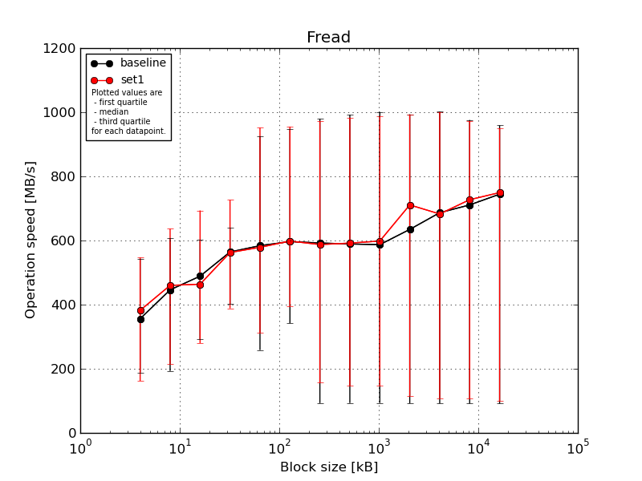
| Fread |
Block size [kB] |
4 |
8 |
16 |
32 |
64 |
128 |
256 |
512 |
1024 |
2048 |
4096 |
8192 |
16384 |
|---|
| baseline | mean val. |
384.81 |
441.29 |
485.2 |
558.06 |
575.93 |
590.68 |
594.92 |
597.71 |
595.43 |
592.52 |
581.31 |
570.08 |
552.21 |
| standard dev. |
232.29 |
243.05 |
221.22 |
191.43 |
356.69 |
356.08 |
364.04 |
379.83 |
390.24 |
404.61 |
409.87 |
415.24 |
429.67 |
| ci. min. 90% |
336.72 |
388.86 |
435.27 |
512.67 |
511.58 |
524.42 |
524.9 |
522.02 |
514.64 |
505.23 |
488.82 |
471.63 |
444.59 |
| ci. max 90% |
432.89 |
493.73 |
535.12 |
603.45 |
640.27 |
656.94 |
664.94 |
673.4 |
676.21 |
679.81 |
673.8 |
668.53 |
659.83 |
| geom. mean |
302.36 |
362.97 |
433.02 |
524.07 |
417.06 |
423.95 |
417.81 |
408.68 |
398.86 |
383.06 |
364.71 |
345.42 |
319.27 |
| median |
356.08 |
446.06 |
488.75 |
564.22 |
583.9 |
596.67 |
592.15 |
589.24 |
587.03 |
634.57 |
686.69 |
710.92 |
744.42 |
| first quartile |
188.37 |
193.1 |
291.25 |
402.21 |
258.32 |
342.09 |
92.85 |
93.14 |
93.3 |
92.52 |
92.13 |
91.72 |
91.44 |
| third quartile |
542.88 |
606.44 |
601.51 |
639.83 |
925.17 |
947.97 |
979.48 |
991.97 |
1000.87 |
993.67 |
1001.53 |
975.92 |
958.81 |
| minimum |
39.5 |
68.49 |
153.86 |
234.56 |
70.98 |
67.34 |
64.91 |
65.31 |
66.12 |
65.0 |
66.05 |
65.63 |
65.38 |
| maximum |
857.62 |
879.75 |
928.88 |
946.92 |
1113.53 |
1093.74 |
1103.02 |
1104.9 |
1108.83 |
1119.77 |
1077.69 |
1052.33 |
1062.83 |
| set1 | mean val. |
388.03 |
450.19 |
499.3 |
566.74 |
598.17 |
609.75 |
601.96 |
605.63 |
610.46 |
609.73 |
592.82 |
581.21 |
556.67 |
| standard dev. |
256.38 |
263.24 |
252.54 |
215.89 |
353.6 |
348.33 |
358.08 |
370.16 |
383.48 |
397.62 |
399.27 |
402.06 |
410.01 |
| ci. min. 90% |
334.95 |
393.4 |
442.31 |
515.55 |
534.38 |
544.93 |
533.09 |
531.86 |
531.07 |
523.95 |
502.72 |
485.89 |
453.97 |
| ci. max 90% |
441.1 |
506.98 |
556.29 |
617.92 |
661.96 |
674.56 |
670.83 |
679.39 |
689.85 |
695.51 |
682.92 |
676.54 |
659.36 |
| geom. mean |
278.14 |
358.93 |
431.3 |
521.42 |
450.79 |
460.24 |
443.13 |
439.35 |
430.91 |
418.8 |
397.27 |
380.98 |
353.15 |
| median |
382.19 |
460.08 |
463.62 |
562.5 |
578.69 |
598.28 |
587.36 |
591.89 |
598.25 |
710.99 |
682.77 |
727.27 |
749.48 |
| first quartile |
162.06 |
215.48 |
280.1 |
388.27 |
312.52 |
394.25 |
156.38 |
147.24 |
147.46 |
115.68 |
108.32 |
107.1 |
99.66 |
| third quartile |
547.04 |
636.51 |
693.73 |
726.31 |
951.81 |
955.14 |
971.35 |
983.14 |
987.8 |
992.19 |
1000.91 |
972.88 |
949.34 |
| minimum |
15.26 |
63.27 |
104.22 |
196.57 |
84.04 |
87.17 |
78.98 |
87.67 |
77.36 |
89.92 |
82.64 |
84.02 |
84.9 |
| maximum |
886.11 |
910.43 |
953.27 |
953.4 |
1086.13 |
1080.69 |
1071.23 |
1083.74 |
1087.03 |
1083.47 |
1058.71 |
1027.95 |
1028.05 |
| baseline set1 difference |
7.33 % |
3.14 % |
-5.14 % |
-0.3 % |
-0.89 % |
0.27 % |
-0.81 % |
0.45 % |
1.91 % |
12.04 % |
-0.57 % |
2.3 % |
0.68 % |
| ttest p-value |
0.9403 |
0.8478 |
0.7559 |
0.8321 |
0.6836 |
0.7325 |
0.9051 |
0.9008 |
0.825 |
0.8147 |
0.8817 |
0.8919 |
0.96 |
| ttest equality |
SAME |
SAME |
SAME |
SAME |
SAME |
SAME |
SAME |
SAME |
SAME |
SAME |
SAME |
SAME |
SAME |
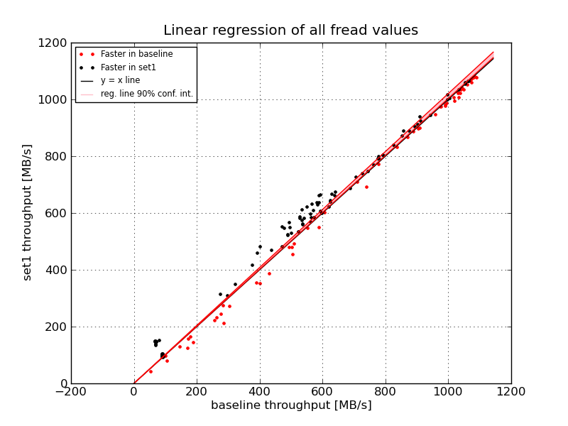
| Regression line |
|---|
| slope | 1.01211 |
| std. error | 0.00516 |
| ci. max 90% | 1.00358 |
| ci. min. 90% | 1.02064 |
Back on top
Freread
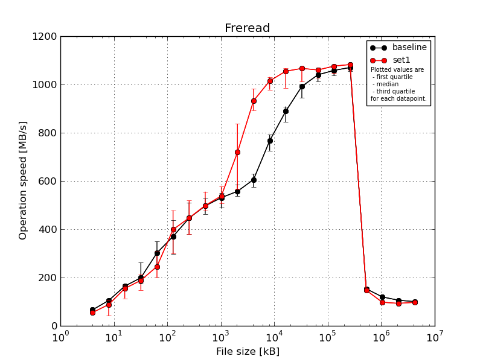
| Freread |
File size [kB] |
4 |
8 |
16 |
32 |
64 |
128 |
256 |
512 |
1024 |
2048 |
4096 |
8192 |
16384 |
32768 |
65536 |
131072 |
262144 |
524288 |
1048576 |
2097152 |
4194304 |
|---|
| baseline | mean val. |
56.51 |
103.0 |
157.43 |
210.81 |
280.08 |
378.32 |
448.2 |
496.59 |
522.68 |
558.33 |
599.58 |
756.1 |
872.17 |
971.66 |
1028.41 |
1053.18 |
1064.14 |
148.53 |
119.52 |
105.89 |
100.33 |
| standard dev. |
23.1 |
11.94 |
29.38 |
60.21 |
88.36 |
92.38 |
74.57 |
58.44 |
47.72 |
39.6 |
48.05 |
51.81 |
52.55 |
46.79 |
32.75 |
24.69 |
18.36 |
19.66 |
2.22 |
0.85 |
0.31 |
| ci. min. 90% |
34.48 |
96.08 |
144.06 |
187.53 |
249.85 |
349.66 |
426.89 |
481.02 |
510.73 |
548.94 |
588.74 |
744.92 |
861.3 |
959.94 |
1020.21 |
1047.0 |
1059.54 |
143.61 |
118.97 |
105.68 |
100.26 |
| ci. max 90% |
78.53 |
109.93 |
170.79 |
234.09 |
310.32 |
406.98 |
469.51 |
512.15 |
534.63 |
567.72 |
610.43 |
767.27 |
883.05 |
983.38 |
1036.61 |
1059.37 |
1068.74 |
153.45 |
120.08 |
106.11 |
100.41 |
| geom. mean |
49.84 |
102.39 |
153.63 |
200.44 |
263.56 |
367.72 |
442.25 |
493.16 |
520.53 |
556.93 |
597.65 |
754.28 |
870.55 |
970.52 |
1027.89 |
1052.89 |
1063.98 |
147.16 |
119.5 |
105.89 |
100.33 |
| median |
66.38 |
104.76 |
164.33 |
199.1 |
302.08 |
370.31 |
446.43 |
497.04 |
531.07 |
557.2 |
606.05 |
766.66 |
888.93 |
992.16 |
1040.02 |
1058.44 |
1070.34 |
153.48 |
119.69 |
106.02 |
100.32 |
| first quartile |
62.11 |
92.58 |
154.64 |
174.57 |
238.57 |
298.32 |
380.22 |
463.13 |
489.26 |
537.11 |
574.92 |
725.46 |
844.86 |
943.84 |
1012.95 |
1036.32 |
1055.31 |
144.93 |
117.7 |
105.3 |
100.1 |
| third quartile |
67.48 |
105.77 |
173.69 |
262.27 |
349.15 |
436.9 |
510.68 |
526.52 |
550.38 |
584.2 |
629.66 |
791.34 |
908.63 |
1000.34 |
1051.32 |
1069.36 |
1075.59 |
159.44 |
121.21 |
106.43 |
100.53 |
| minimum |
15.58 |
88.85 |
65.09 |
70.06 |
90.84 |
253.06 |
325.06 |
372.57 |
429.4 |
466.09 |
491.87 |
633.01 |
732.87 |
859.2 |
945.05 |
1000.8 |
1024.47 |
109.4 |
115.72 |
103.9 |
99.81 |
| maximum |
70.99 |
124.21 |
190.62 |
289.47 |
414.26 |
548.53 |
614.35 |
628.3 |
619.19 |
637.34 |
709.46 |
862.43 |
956.42 |
1050.46 |
1072.19 |
1091.27 |
1089.76 |
190.09 |
123.66 |
107.83 |
100.98 |
| set1 | mean val. |
54.65 |
76.08 |
138.97 |
192.33 |
256.54 |
388.79 |
451.77 |
524.13 |
585.66 |
712.87 |
934.33 |
995.56 |
1023.26 |
1038.29 |
1043.48 |
1062.8 |
1070.7 |
148.42 |
98.15 |
95.15 |
97.24 |
| standard dev. |
6.55 |
31.15 |
44.99 |
58.45 |
67.38 |
91.51 |
85.4 |
78.74 |
128.02 |
156.74 |
59.92 |
59.71 |
65.29 |
51.38 |
37.79 |
29.73 |
26.69 |
8.62 |
13.24 |
6.43 |
1.72 |
| ci. min. 90% |
48.4 |
58.02 |
118.51 |
169.73 |
233.49 |
360.41 |
427.36 |
503.16 |
553.6 |
675.71 |
920.81 |
982.68 |
1009.74 |
1025.42 |
1034.02 |
1055.36 |
1064.02 |
146.26 |
94.83 |
93.54 |
96.81 |
| ci. max 90% |
60.89 |
94.13 |
159.43 |
214.93 |
279.6 |
417.18 |
476.18 |
545.11 |
617.73 |
750.04 |
947.85 |
1008.44 |
1036.78 |
1051.16 |
1052.94 |
1070.25 |
1077.39 |
150.58 |
101.46 |
96.77 |
97.67 |
| geom. mean |
54.31 |
69.51 |
129.9 |
183.51 |
247.94 |
377.98 |
444.14 |
518.88 |
573.94 |
695.72 |
932.43 |
993.69 |
1021.08 |
1037.0 |
1042.79 |
1062.39 |
1070.37 |
148.18 |
97.29 |
94.95 |
97.22 |
| median |
55.02 |
88.08 |
154.64 |
188.24 |
245.96 |
398.84 |
447.19 |
498.51 |
538.16 |
718.77 |
932.39 |
1014.72 |
1054.91 |
1066.56 |
1060.15 |
1076.18 |
1082.67 |
147.32 |
97.52 |
92.99 |
97.14 |
| first quartile |
53.58 |
42.07 |
113.44 |
148.31 |
198.92 |
299.46 |
379.41 |
477.71 |
508.17 |
564.88 |
892.87 |
978.43 |
985.69 |
1011.92 |
1028.58 |
1048.44 |
1057.67 |
143.33 |
88.79 |
90.65 |
96.27 |
| third quartile |
58.35 |
104.76 |
168.9 |
211.94 |
307.75 |
478.45 |
518.8 |
555.68 |
576.31 |
837.2 |
982.32 |
1030.75 |
1066.87 |
1072.35 |
1068.98 |
1082.82 |
1090.73 |
152.75 |
104.81 |
97.01 |
98.59 |
| minimum |
44.42 |
36.87 |
52.94 |
88.28 |
150.93 |
249.92 |
313.21 |
404.87 |
430.5 |
472.26 |
823.39 |
833.51 |
852.65 |
922.7 |
964.94 |
1000.84 |
1021.05 |
131.18 |
77.11 |
83.79 |
92.56 |
| maximum |
61.87 |
108.57 |
190.62 |
306.38 |
381.13 |
545.67 |
617.24 |
725.71 |
892.06 |
1002.49 |
1049.31 |
1063.81 |
1099.27 |
1090.07 |
1084.78 |
1095.45 |
1099.63 |
177.09 |
124.26 |
107.74 |
99.97 |
| baseline set1 difference |
-17.12 % |
-15.92 % |
-5.9 % |
-5.46 % |
-18.58 % |
7.7 % |
0.17 % |
0.3 % |
1.33 % |
29.0 % |
53.85 % |
32.36 % |
18.67 % |
7.5 % |
1.93 % |
1.68 % |
1.15 % |
-4.01 % |
-18.52 % |
-12.29 % |
-3.16 % |
| ttest p-value |
0.8668 |
0.02 |
0.1941 |
0.3308 |
0.2948 |
0.6608 |
0.8527 |
0.0795 |
0.0027 |
0.0 |
0.0 |
0.0 |
0.0 |
0.0 |
0.0462 |
0.0984 |
0.1775 |
0.9726 |
0.0 |
0.0 |
0.0 |
| ttest equality |
SAME |
DIFF |
SAME |
SAME |
SAME |
SAME |
SAME |
DIFF |
DIFF |
DIFF |
DIFF |
DIFF |
DIFF |
DIFF |
DIFF |
DIFF |
SAME |
SAME |
DIFF |
DIFF |
DIFF |
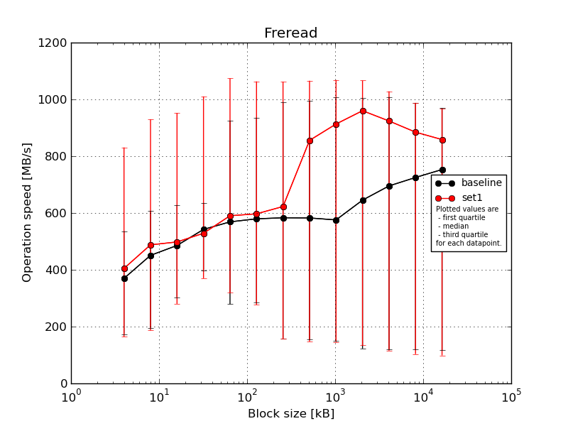
| Freread |
Block size [kB] |
4 |
8 |
16 |
32 |
64 |
128 |
256 |
512 |
1024 |
2048 |
4096 |
8192 |
16384 |
|---|
| baseline | mean val. |
389.52 |
437.46 |
492.12 |
542.11 |
585.67 |
597.83 |
601.16 |
605.44 |
610.87 |
609.25 |
598.43 |
587.99 |
566.66 |
| standard dev. |
234.26 |
243.29 |
232.13 |
210.99 |
351.5 |
346.48 |
356.51 |
371.11 |
382.71 |
392.3 |
397.53 |
402.23 |
414.07 |
| ci. min. 90% |
341.02 |
384.97 |
439.74 |
492.09 |
522.26 |
533.36 |
532.59 |
531.49 |
531.64 |
524.61 |
508.72 |
492.63 |
462.94 |
| ci. max 90% |
438.01 |
489.95 |
544.51 |
592.14 |
649.08 |
662.3 |
669.73 |
679.39 |
690.09 |
693.88 |
688.14 |
683.36 |
670.37 |
| geom. mean |
302.72 |
362.11 |
427.74 |
493.03 |
445.42 |
457.54 |
451.78 |
445.5 |
440.43 |
430.15 |
412.25 |
395.33 |
366.21 |
| median |
369.79 |
450.84 |
485.69 |
542.2 |
568.8 |
579.53 |
583.17 |
582.6 |
575.61 |
645.33 |
695.34 |
725.09 |
753.08 |
| first quartile |
173.65 |
195.97 |
303.26 |
398.45 |
278.93 |
284.86 |
158.68 |
154.15 |
148.82 |
122.92 |
119.75 |
119.67 |
116.31 |
| third quartile |
536.19 |
606.62 |
628.1 |
635.82 |
925.17 |
935.74 |
988.87 |
993.85 |
1007.43 |
1004.82 |
1008.64 |
987.56 |
969.53 |
| minimum |
15.58 |
88.85 |
65.09 |
70.06 |
100.04 |
99.88 |
100.01 |
100.03 |
100.13 |
100.03 |
100.13 |
99.81 |
100.01 |
| maximum |
879.51 |
916.01 |
952.14 |
956.42 |
1091.27 |
1083.71 |
1074.67 |
1084.49 |
1082.32 |
1089.76 |
1063.33 |
1048.96 |
1043.05 |
| set1 | mean val. |
460.87 |
529.03 |
583.66 |
638.19 |
655.95 |
660.87 |
661.47 |
675.31 |
683.57 |
688.45 |
667.13 |
621.96 |
581.07 |
| standard dev. |
337.62 |
347.65 |
337.37 |
317.69 |
392.71 |
392.37 |
400.34 |
412.16 |
425.3 |
437.11 |
429.92 |
424.94 |
429.74 |
| ci. min. 90% |
390.97 |
454.02 |
507.53 |
562.87 |
585.1 |
587.86 |
584.47 |
593.18 |
595.53 |
594.15 |
570.11 |
521.21 |
473.43 |
| ci. max 90% |
530.76 |
604.03 |
659.79 |
713.51 |
726.79 |
733.88 |
738.47 |
757.44 |
771.61 |
782.75 |
764.14 |
722.71 |
688.71 |
| geom. mean |
311.26 |
394.18 |
472.0 |
553.48 |
483.15 |
481.24 |
474.95 |
476.66 |
471.21 |
461.55 |
439.76 |
401.08 |
360.19 |
| median |
404.87 |
487.93 |
498.04 |
528.66 |
590.28 |
597.1 |
622.86 |
855.66 |
913.25 |
960.18 |
924.01 |
884.72 |
858.56 |
| first quartile |
164.33 |
186.96 |
280.29 |
370.03 |
318.99 |
277.26 |
157.22 |
147.9 |
145.75 |
134.5 |
115.5 |
103.16 |
98.59 |
| third quartile |
830.9 |
929.95 |
952.32 |
1010.39 |
1074.11 |
1063.29 |
1062.61 |
1065.68 |
1068.38 |
1066.56 |
1028.49 |
987.82 |
966.93 |
| minimum |
40.02 |
36.87 |
100.08 |
192.78 |
80.43 |
77.52 |
77.11 |
87.39 |
80.35 |
80.73 |
85.74 |
87.72 |
82.51 |
| maximum |
981.77 |
1044.38 |
1076.34 |
1099.27 |
1099.63 |
1088.79 |
1081.72 |
1093.42 |
1094.33 |
1096.58 |
1071.93 |
1033.8 |
1033.48 |
| baseline set1 difference |
9.49 % |
8.23 % |
2.54 % |
-2.5 % |
3.78 % |
3.03 % |
6.81 % |
46.87 % |
58.66 % |
48.79 % |
32.89 % |
22.02 % |
14.01 % |
| ttest p-value |
0.164 |
0.0973 |
0.1003 |
0.0779 |
0.2206 |
0.2831 |
0.3315 |
0.2937 |
0.3075 |
0.2984 |
0.3862 |
0.6824 |
0.8717 |
| ttest equality |
SAME |
DIFF |
SAME |
DIFF |
SAME |
SAME |
SAME |
SAME |
SAME |
SAME |
SAME |
SAME |
SAME |
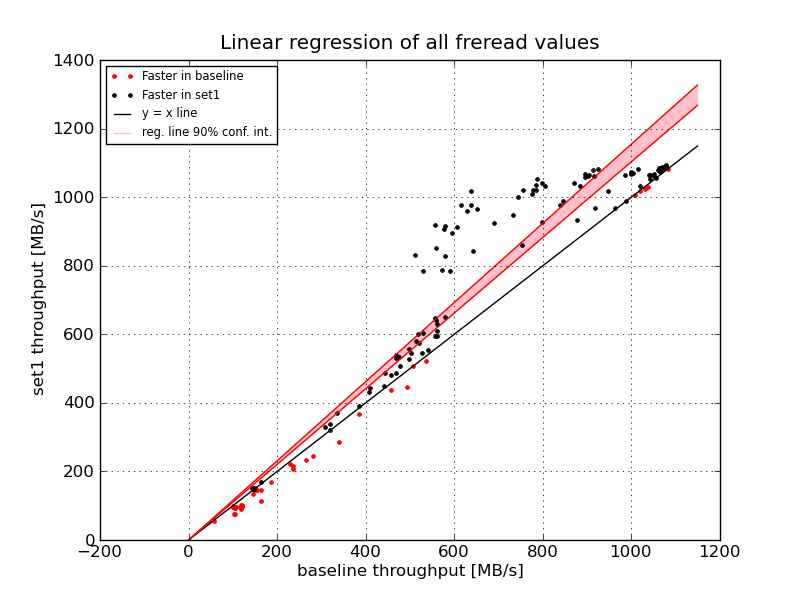
| Regression line |
|---|
| slope | 1.12907 |
| std. error | 0.01557 |
| ci. max 90% | 1.10331 |
| ci. min. 90% | 1.15483 |
Back on top
Overall summary
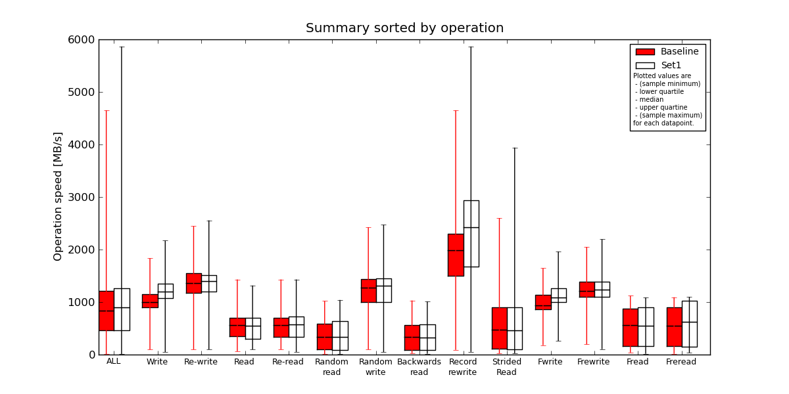
| Operation |
ALL |
Write |
Re-write |
Read |
Re-read |
Random
read |
Random
write |
Backwards
read |
Record
rewrite |
Strided
Read |
Fwrite |
Frewrite |
Fread |
Freread |
| baseline | mean val. |
884.4 |
1052.24 |
1366.52 |
510.6 |
521.62 |
384.96 |
1293.46 |
387.27 |
2041.91 |
614.4 |
988.57 |
1227.38 |
550.09 |
558.15 |
| standard dev. |
640.56 |
333.19 |
421.88 |
277.98 |
269.84 |
296.6 |
459.92 |
308.75 |
870.22 |
620.56 |
249.54 |
316.08 |
351.24 |
345.67 |
| ci. min. 90% |
874.16 |
1033.02 |
1342.18 |
494.56 |
506.05 |
367.85 |
1266.93 |
369.46 |
1991.72 |
578.61 |
974.17 |
1209.15 |
529.83 |
538.21 |
| ci. max 90% |
894.63 |
1071.46 |
1390.85 |
526.63 |
537.18 |
402.07 |
1319.99 |
405.08 |
2092.11 |
650.2 |
1002.96 |
1245.61 |
570.35 |
578.08 |
| geom. mean |
613.45 |
992.05 |
1286.28 |
394.81 |
422.85 |
244.61 |
1202.79 |
247.48 |
1845.33 |
332.25 |
952.66 |
1178.77 |
391.01 |
417.22 |
| median |
832.46 |
1000.94 |
1358.94 |
558.1 |
559.78 |
336.33 |
1275.75 |
332.33 |
1993.63 |
469.04 |
942.31 |
1213.9 |
558.65 |
545.25 |
| first quartile |
458.66 |
904.82 |
1169.9 |
353.1 |
341.1 |
102.94 |
1000.83 |
84.32 |
1498.73 |
112.42 |
868.66 |
1096.83 |
164.33 |
164.82 |
| third quartile |
1209.61 |
1152.13 |
1547.14 |
700.64 |
703.55 |
587.21 |
1443.32 |
564.07 |
2301.95 |
896.91 |
1142.81 |
1388.48 |
878.57 |
895.64 |
| minimum |
9.69 |
96.55 |
97.87 |
63.77 |
99.23 |
9.69 |
97.12 |
25.51 |
90.29 |
23.42 |
178.46 |
193.95 |
39.5 |
15.58 |
| maximum |
4650.82 |
1835.59 |
2444.29 |
1430.74 |
1430.74 |
1020.38 |
2422.88 |
1030.38 |
4650.82 |
2599.18 |
1644.89 |
2049.78 |
1119.77 |
1091.27 |
| set1 | mean val. |
952.81 |
1231.01 |
1387.1 |
505.99 |
543.81 |
410.68 |
1301.17 |
387.22 |
2451.92 |
617.3 |
1119.48 |
1241.77 |
562.18 |
626.86 |
| standard dev. |
737.06 |
364.56 |
422.72 |
261.08 |
294.79 |
331.0 |
472.39 |
307.81 |
1098.92 |
641.87 |
269.75 |
318.96 |
349.73 |
395.82 |
| ci. min. 90% |
941.03 |
1209.98 |
1362.71 |
490.93 |
526.8 |
391.59 |
1273.92 |
369.47 |
2388.54 |
580.27 |
1103.92 |
1223.37 |
542.01 |
604.03 |
| ci. max 90% |
964.59 |
1252.04 |
1411.48 |
521.05 |
560.81 |
429.77 |
1328.41 |
404.98 |
2515.31 |
654.32 |
1135.04 |
1260.17 |
582.35 |
649.69 |
| geom. mean |
644.99 |
1164.85 |
1311.19 |
408.31 |
430.83 |
249.26 |
1205.49 |
248.42 |
2171.38 |
325.84 |
1084.02 |
1192.68 |
410.99 |
443.44 |
| median |
905.82 |
1201.91 |
1401.09 |
549.69 |
572.26 |
332.37 |
1312.21 |
324.69 |
2427.89 |
462.69 |
1081.31 |
1236.67 |
555.55 |
622.86 |
| first quartile |
466.34 |
1079.67 |
1202.15 |
303.64 |
343.22 |
90.4 |
996.77 |
87.31 |
1680.41 |
100.72 |
997.23 |
1105.26 |
159.46 |
155.41 |
| third quartile |
1257.44 |
1346.86 |
1514.79 |
695.23 |
719.79 |
643.61 |
1452.32 |
571.68 |
2943.2 |
903.55 |
1258.01 |
1385.93 |
894.79 |
1028.47 |
| minimum |
9.68 |
50.43 |
98.88 |
98.57 |
51.06 |
9.68 |
47.37 |
17.2 |
52.78 |
23.26 |
259.34 |
102.91 |
15.26 |
36.87 |
| maximum |
5864.95 |
2169.82 |
2555.63 |
1315.83 |
1430.74 |
1040.27 |
2474.34 |
1011.31 |
5864.95 |
3941.27 |
1962.75 |
2196.6 |
1087.03 |
1099.63 |
| linear regression slope 90% | |
1.14 - 1.19 |
0.99 - 1.04 |
0.96 - 0.99 |
1.03 - 1.07 |
1.07 - 1.11 |
0.99 - 1.03 |
0.99 - 1.0 |
1.19 - 1.24 |
1.01 - 1.03 |
1.11 - 1.16 |
0.98 - 1.04 |
1.0 - 1.02 |
1.1 - 1.15 |
| baseline set1 difference |
8.81 % |
20.08 % |
3.1 % |
-1.51 % |
2.23 % |
-1.18 % |
2.86 % |
-2.3 % |
21.78 % |
-1.35 % |
14.75 % |
1.88 % |
-0.56 % |
14.23 % |
| ttest p-value |
0.0 |
0.0 |
0.3254 |
0.7301 |
0.1131 |
0.0987 |
0.7386 |
0.9974 |
0.0 |
0.9263 |
0.0 |
0.3604 |
0.4864 |
0.0002 |
| ttest equality |
DIFF |
DIFF |
SAME |
SAME |
SAME |
DIFF |
SAME |
SAME |
DIFF |
SAME |
DIFF |
SAME |
SAME |
DIFF |
Back on top